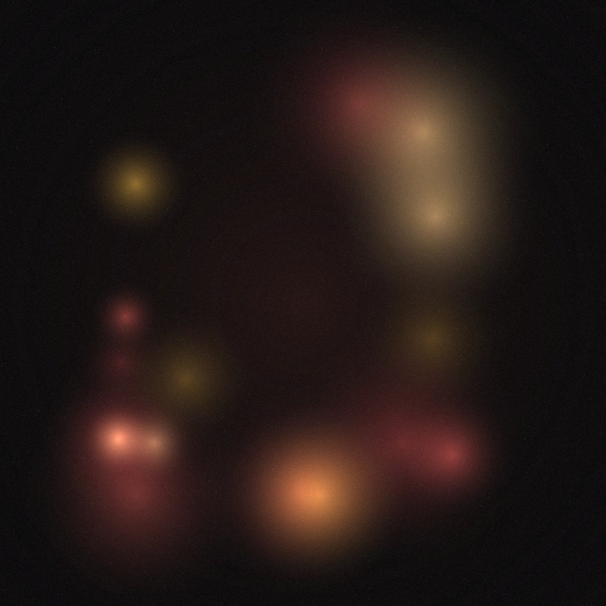
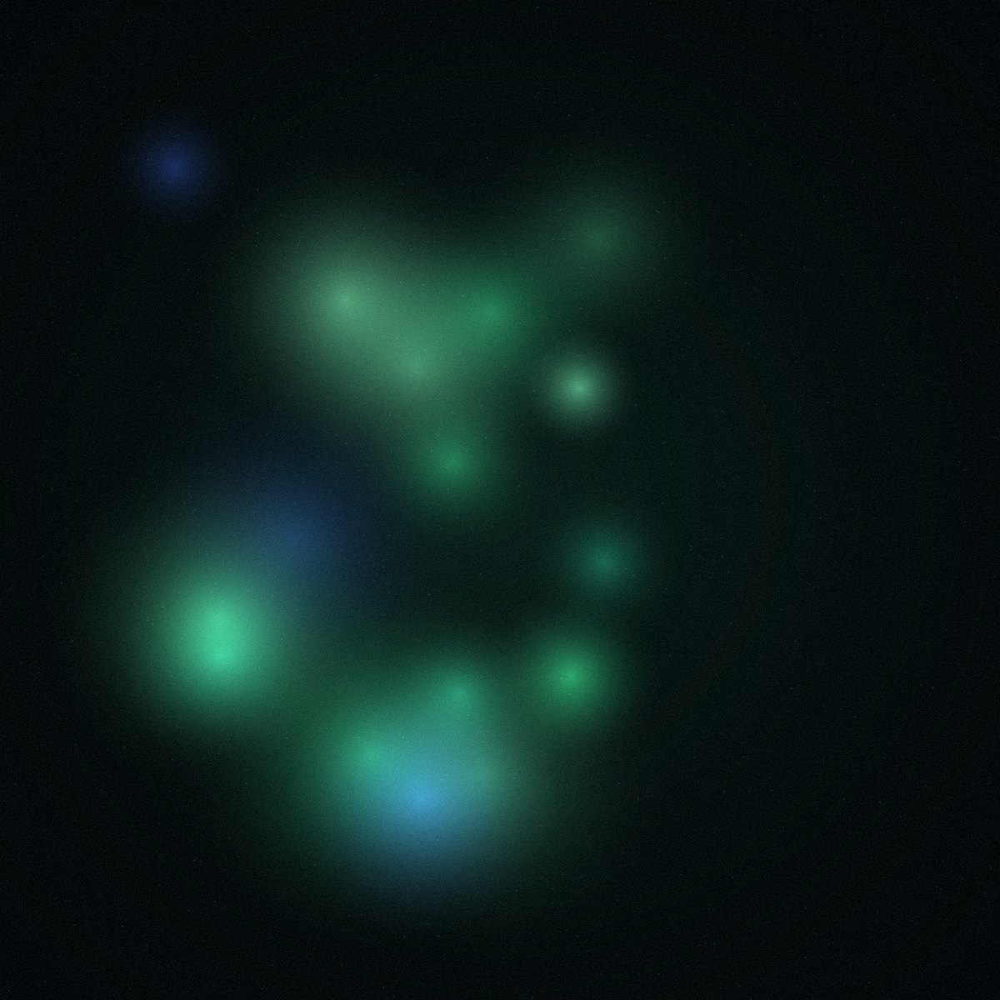
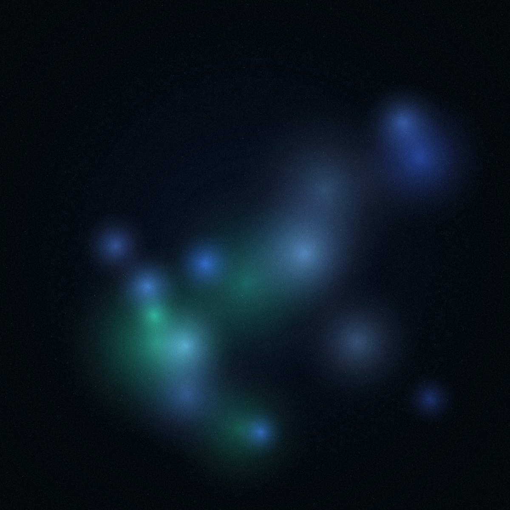

<!doctype html>
<html lang="en">
<head>
<meta charset="utf-8">
<meta name="viewport" content="width=device-width, initial-scale=1">
<title>Limen · Story, image and code for MedTech, Biotech and the Life Sciences</title>
<meta name="description" content="Limen is a creative studio at the threshold of science, technology and art, for MedTech, Biotech and the Life Sciences.">
<style>
@font-face{font-family:'Outfit';font-style:normal;font-weight:100 900;font-display:swap;src:url(fonts/outfit-latin-wght-normal.woff2) format('woff2-variations'),url(fonts/outfit-latin-wght-normal.woff2) format('woff2')}
@font-face{font-family:'Outfit';font-style:normal;font-weight:100 900;font-display:swap;src:url(fonts/outfit-latin-ext-wght-normal.woff2) format('woff2');unicode-range:U+0100-02BA,U+02BD-02C5,U+02C7-02CC,U+02CE-02D7,U+02DD-02FF,U+0304,U+0308,U+0329,U+1D00-1DBF,U+1E00-1E9F,U+1EF2-1EFF,U+2020,U+20A0-20AB,U+20AD-20C0,U+2113,U+2C60-2C7F,U+A720-A7FF}
@font-face{font-family:'IBM Plex Mono';font-style:normal;font-weight:400;font-display:swap;src:url(fonts/ibm-plex-mono-latin-400-normal.woff2) format('woff2')}
</style>
<style>
.lm-sv{opacity:0;transform:translateY(18px);transition:opacity .8s cubic-bezier(.2,.7,.1,1),transform .8s cubic-bezier(.2,.7,.1,1);transition-delay:var(--d,0s)}
.is-in .lm-sv,.lm-sv.is-in{opacity:1;transform:none}
.lm-chat{max-width:620px;display:flex;flex-direction:column;gap:14px;white-space:normal!important}
.lm-aud{white-space:normal}
.lm-chat .who{font-family:'IBM Plex Mono',monospace;font-size:11px;letter-spacing:.1em;text-transform:uppercase;color:#7F8A88;margin:0 6px 6px}
.lm-chat .msg{max-width:84%;padding:14px 18px;border-radius:20px;font-size:clamp(16px,1.35vw,19px);line-height:1.45;font-weight:300}
.lm-chat .them{align-self:flex-start;background:#E6ECEA;color:#0D1413;border-bottom-left-radius:6px}
.lm-chat .me{align-self:flex-end;background:#0B7A57;color:#F3F6F5;border-bottom-right-radius:6px}
.lm-chat .row{display:flex;flex-direction:column}
.lm-chat .row.r{align-items:flex-end}
.lm-chat .meta{font-family:'IBM Plex Mono',monospace;font-size:10.5px;color:#A8A29D;margin:6px 8px 0}
.lm-dots{display:inline-flex;gap:5px;padding:4px 0}
.lm-dots i{width:7px;height:7px;border-radius:50%;background:currentColor;opacity:.4;animation:lmDot 1.2s infinite}
.lm-dots i:nth-child(2){animation-delay:.15s}.lm-dots i:nth-child(3){animation-delay:.3s}
@keyframes lmDot{0%,60%,100%{opacity:.25;transform:none}30%{opacity:1;transform:translateY(-3px)}}
.lm-aud{display:grid;grid-template-columns:88px minmax(0,5fr) minmax(0,7fr);gap:8px 40px;align-items:center;padding:30px 0;border-top:1px solid #D3DBD9}
.lm-aud h3{margin:0;font-weight:300;font-size:clamp(34px,4.4vw,68px);line-height:1;letter-spacing:-.045em;color:#0B7A57}
.lm-aud p{margin:0;font-weight:300;font-size:clamp(26px,3.2vw,48px);line-height:1.08;letter-spacing:-.035em}
@media (max-width:760px){.lm-aud{grid-template-columns:64px minmax(0,1fr);gap:2px 18px}.lm-aud .lm-face{grid-row:span 2;width:64px;height:64px}}
@media (prefers-reduced-motion: reduce){.lm-sv{opacity:1;transform:none;transition:none}.lm-dots i{animation:none}}
.lm-ct{display:grid;grid-template-columns:minmax(0,1fr) minmax(0,1.1fr);gap:56px;align-items:center}.lm-figbox{position:relative;border-radius:22px;overflow:hidden;height:min(68vh,640px);min-height:440px;background:#E3E3E0}.lm-fig figcaption{display:flex;justify-content:space-between;gap:8px 16px;flex-wrap:wrap;margin-top:14px;font-family:'IBM Plex Mono',monospace;font-size:12px;letter-spacing:.12em;text-transform:uppercase;color:#54605E}@media (max-width:860px){.lm-ct{grid-template-columns:1fr;gap:40px}.lm-figbox{height:auto;min-height:0;aspect-ratio:4/5}}
.lm-accw{color:var(--a)}.lm-split{white-space:nowrap}.lm-w{display:inline-block;white-space:nowrap;overflow:hidden;vertical-align:bottom;padding-bottom:.1em;margin-bottom:-.1em}.lm-ch{display:inline-block;transform:translateY(110%);animation:lmRise .9s cubic-bezier(.2,.85,.15,1) forwards;animation-delay:calc(.1s + var(--i) * 30ms)}@keyframes lmRise{to{transform:none}}.lm-split .lm-ch{animation-play-state:paused}.lm-split.is-in .lm-ch{animation-play-state:running}@media (prefers-reduced-motion: reduce){.lm-ch{transform:none;animation:none}}
@keyframes lmShimmer{0%{background-position:100% 0}55%,100%{background-position:0% 0}}.lm-acc{background-image:linear-gradient(100deg,var(--a) 0%,var(--a) 38%,var(--b) 50%,var(--a) 62%,var(--a) 100%);background-size:320% 100%;background-position:100% 0;-webkit-background-clip:text;background-clip:text;color:transparent!important;-webkit-text-fill-color:transparent;padding-right:.1em;margin-right:-.1em;animation:lmShimmer 6.5s cubic-bezier(.45,0,.2,1) infinite}@media (prefers-reduced-motion: reduce){.lm-acc{animation:none;background-position:0 0}}
body{margin:0;background:#05090B}
a{color:inherit}p,li,span{text-wrap:pretty}h1,h2,h3{text-wrap:balance}a:hover{color:#7DB8FF}
@keyframes limenBlink{0%{opacity:1}50%{opacity:0}}
.lm-thread{flex:1;height:14px;overflow:visible;min-width:40px}
.lm-thread path,.lm-mk path,.lm-bub path{fill:none;stroke:#0B7A57;stroke-linecap:round;stroke-linejoin:round;vector-effect:non-scaling-stroke;stroke-dasharray:1;stroke-dashoffset:1;transition:stroke-dashoffset 1.6s cubic-bezier(.6,.05,.3,1)}
.lm-thread path{stroke-width:1.5;stroke-opacity:.6;vector-effect:none}
.lm-thread.is-in path,.lm-mark.is-in .lm-mk path,.lm-bub.is-in path{stroke-dashoffset:0}
.lm-mk{position:absolute;pointer-events:none;overflow:visible}
.lm-mk path{stroke-width:clamp(2px,.032em,5px);transition-delay:.55s}
.lm-mk.u{left:-2%;width:104%;bottom:-.14em;height:.26em}
.lm-mk.o{left:-11%;width:122%;top:-.1em;height:1.2em}
.lm-mk path.sp{transition-duration:.35s;transition-delay:2.1s}
.lm-bub{position:absolute;left:calc(100% + 20px);top:-46px;width:178px;height:74px;display:flex;align-items:flex-start;justify-content:center;padding-top:14px;box-sizing:border-box;font-size:19px;font-weight:300;color:#0B7A57;transform:rotate(-3deg) scale(.85);opacity:0;transition:opacity .5s ease,transform .6s cubic-bezier(.3,1.6,.5,1);pointer-events:none}
.lm-bub svg{position:absolute;inset:0;width:100%;height:100%;overflow:visible}.lm-bub path{stroke-width:2.2px;fill:#FFFFFF}
.lm-bub span{position:relative}
.lm-bub.is-in{opacity:1;transform:rotate(-3deg)}
.lm-bub.is-in path{transition-delay:.15s}
@media (max-width:640px){.lm-bub{left:52%;top:-66px;width:140px;height:60px;font-size:16px;padding-top:11px}}
@media (prefers-reduced-motion: reduce){.lm-thread path,.lm-mk path,.lm-bub path{stroke-dashoffset:0;transition:none}.lm-bub{opacity:1;transform:rotate(-3deg);transition:none}}
.lm-face{width:88px;height:88px;display:block}
.lm-inv{position:absolute;left:calc(100% + 16px);top:-34px;width:104px;height:104px;pointer-events:none}
.lm-founder{position:absolute;left:-104px;bottom:34px;width:158px;height:194px;z-index:2;pointer-events:none}

@media (max-width:900px){.lm-founder{left:-8px;bottom:40px;width:112px;height:138px}}
@media (max-width:640px){.lm-bub{left:52%;top:-66px;width:140px;height:60px;font-size:16px;padding-top:11px}}
.lm-lbl>span[aria-hidden]{display:inline-block;opacity:0;transform:translateY(.55em);transition:opacity .45s ease,transform .6s cubic-bezier(.2,.7,.1,1);transition-delay:calc(var(--i) * 32ms)}
.lm-lbl.is-in>span[aria-hidden]{opacity:1;transform:none}
.lm-big>span[aria-hidden]{transform:translateY(.12em);transition-duration:.9s,1.1s;transition-delay:calc(var(--i) * 110ms)}
.lm-link{display:inline-flex;gap:10px;align-items:center;min-height:44px;font-size:18px;font-weight:300;color:#0D1413;text-decoration:none;border-bottom:1px solid currentColor;transition:color .3s ease,gap .3s ease}
.lm-link:hover{color:#0B7A57;gap:16px}
.lm-cards{display:grid;grid-template-columns:repeat(3,minmax(0,1fr));gap:28px}
.lm-card{display:block;color:#0D1413;text-decoration:none}
.lm-cimg{position:relative;aspect-ratio:1/1;border-radius:16px;overflow:hidden;background:#0F0D0E}
.lm-cimg img{width:100%;height:100%;object-fit:cover;display:block;transition:transform 1s cubic-bezier(.2,.7,.1,1),filter 1s ease}
a.lm-card:hover .lm-cimg img{transform:scale(1.045)}
.lm-card.soon .lm-cimg img{filter:blur(2px)}.lm-card.soon:hover .lm-cimg img{filter:blur(0)}
.lm-ctag{margin:18px 0 8px;font-family:'IBM Plex Mono',monospace;font-size:11.5px;letter-spacing:.12em;text-transform:uppercase;color:#5C6765}
.lm-card h3{margin:0;font-weight:250;font-size:clamp(26px,2.3vw,34px);line-height:1.1;letter-spacing:-.03em}
.lm-card.soon h3{color:#7F8A88}
.lm-cmeta{margin:8px 0 0;font-size:15px;line-height:1.5;color:#4D5856}
@media (max-width:860px){.lm-cards{grid-template-columns:1fr;gap:40px}}
@media (prefers-reduced-motion: reduce){.lm-lbl>span[aria-hidden]{opacity:1;transform:none;transition:none}}
.lm-rooms .lm-aud{grid-template-columns:clamp(84px,9vw,140px) minmax(0,6fr) minmax(0,5fr);gap:8px 48px;padding:34px 0}
.lm-rooms .lm-face{width:clamp(84px,9vw,140px);height:clamp(84px,9vw,140px)}
.lm-rooms .lm-aud h3{font-weight:200;font-size:clamp(44px,6.6vw,116px);line-height:.95;letter-spacing:-.055em}
.lm-rooms .lm-aud p{font-weight:200;font-size:clamp(22px,2.4vw,40px);color:#3E4846}
@media (max-width:760px){.lm-rooms .lm-aud{grid-template-columns:76px minmax(0,1fr);gap:4px 18px;padding:26px 0}.lm-rooms .lm-face{grid-row:span 2;width:76px;height:76px}}
.lm-ba .bf{margin:0 0 18px;font-family:'IBM Plex Mono',monospace;font-size:12px;letter-spacing:.14em;text-transform:uppercase;color:#5C6765}
.lm-ba .jar{margin:0;max-width:1040px;font-weight:300;font-size:clamp(22px,2.5vw,38px);line-height:1.4;letter-spacing:-.015em;color:#3E4846}
.lm-ba .jar .w{position:relative;transition:color .5s ease;transition-delay:calc(var(--i) * 70ms + .3s)}
.lm-ba .jar .w::after{content:"";position:absolute;left:-3px;right:-3px;top:56%;height:2px;border-radius:2px;background:#0B7A57;transform:scaleX(0);transform-origin:left;transition:transform .32s cubic-bezier(.6,.05,.3,1);transition-delay:calc(var(--i) * 70ms + .3s)}
.lm-ba.is-in .jar .w{color:#AAB5B2}
.lm-ba.is-in .jar .w::after{transform:scaleX(1)}
.lm-ba .aft{margin:0;max-width:1180px;font-weight:200;font-size:clamp(40px,6.4vw,112px);line-height:1;letter-spacing:-.05em}
.lm-ba .aft .a{display:inline-block;opacity:0;transform:translateY(.3em);transition:opacity .6s ease,transform .9s cubic-bezier(.2,.7,.1,1);transition-delay:calc(var(--d) + var(--i) * 120ms)}
.lm-ba.is-in .aft .a{opacity:1;transform:none}
@media (prefers-reduced-motion: reduce){.lm-ba .jar .w{color:#AAB5B2;transition:none}.lm-ba .jar .w::after{transform:scaleX(1);transition:none}.lm-ba .aft .a{opacity:1;transform:none;transition:none}}
.lm-skip{position:absolute;left:16px;top:-80px;z-index:50;padding:12px 18px;border-radius:30px;background:#EEF3F1;color:#05090B;text-decoration:none;font-size:16px;transition:top .2s ease}
.lm-skip:focus{top:16px}
a:focus-visible,button:focus-visible,[tabindex]:focus-visible{outline:2px solid #5BEA9A;outline-offset:3px;border-radius:30px}
.lm-btn{transition:transform .35s cubic-bezier(.2,.7,.1,1),box-shadow .35s ease,background-color .35s ease}
.lm-btn:hover{transform:translateY(-2px);box-shadow:0 10px 30px rgba(57,229,140,.28)}
.lm-btn:active{transform:translateY(0) scale(.98)}
.lm-btn .lm-arrow{display:inline-block;transition:transform .35s cubic-bezier(.2,.7,.1,1)}
.lm-btn:hover .lm-arrow{transform:translateX(5px)}
.lm-nav a{transition:font-weight .3s ease,background-color .3s ease}
.lm-nav a:hover{font-weight:550;background-color:rgba(127,127,127,.12)}
.lm-card{transition:transform .5s cubic-bezier(.2,.7,.1,1),box-shadow .5s ease,border-color .5s ease}
.lm-card:hover{transform:translateY(-6px);box-shadow:0 24px 50px rgba(0,0,0,.35);border-color:#5A3238 !important}
.lm-reveal{opacity:0;transform:translateY(32px);font-weight:160;transition:opacity 1s cubic-bezier(.2,.7,.1,1),transform 1s cubic-bezier(.2,.7,.1,1),font-weight 1.4s cubic-bezier(.2,.7,.1,1)}
.lm-reveal.is-in{opacity:1;transform:none;font-weight:300}
.lm-stagger>*{opacity:0;transform:translateY(24px);transition:opacity .9s ease,transform .9s cubic-bezier(.2,.7,.1,1)}
.lm-stagger.is-in>*{opacity:1;transform:none}
.lm-stagger.is-in>*:nth-child(2){transition-delay:.12s}
.lm-stagger.is-in>*:nth-child(3){transition-delay:.24s}
.lm-stagger.is-in>*:nth-child(4){transition-delay:.36s}
@media (prefers-reduced-motion: reduce){.lm-reveal,.lm-stagger>*{opacity:1!important;transform:none!important;transition:none!important;font-weight:400}.lm-btn,.lm-card{transition:none}}
</style>
<link rel="icon" href="favicon.svg" type="image/svg+xml">
<meta property="og:title" content="Limen, a creative studio at the threshold of science, technology and art">
<meta property="og:description" content="For MedTech, Biotech and the Life Sciences.">
<meta property="og:image" content="og.png">
<meta name="twitter:card" content="summary_large_image">
<script src="runtime.js"></script>
</head>
<body>
<div id="app"></div>
<script>
(function () {
  var html = htmPreact.html, render = htmPreact.render;
  function TPL(v) { return html`

<div style="font-family: 'Outfit', system-ui, sans-serif; font-weight: 400; color: #0D1413; min-height: 100vh; position: relative">
<a href="#services" class="lm-skip">Skip to content</a>

<section id="start" ref="${v.refDSec}" style="position: relative; z-index: 3; height: 190vh; color: #0D1413">
<div ref="${v.refDStage}" style="position: sticky; top: 0; height: 100vh; display: flex; flex-direction: column; overflow: hidden; background: #F3F6F5">
<header style="position: relative; width: 100%; box-sizing: border-box; max-width: 1360px; margin: 0 auto; padding: 28px 24px; display: flex; flex-wrap: wrap; gap: 16px; justify-content: space-between; align-items: center">
<a href="#top" style="display: inline-flex; align-items: baseline; gap: 2px; text-decoration: none; color: #0D1413; font-size: 30px; font-weight: 500; letter-spacing: -0.035em">limen<span class="lm-acc" style="--a: #0B7A57; --b: #0B7A57">.</span></a>
<nav aria-label="Main" class="lm-nav" style="display: flex; flex-wrap: wrap; gap: 6px; align-items: center">
<a href="#services" style="display: inline-flex; align-items: center; min-height: 44px; padding: 0 18px; border-radius: 30px; text-decoration: none; color: #0D1413; font-size: 16px">Services</a>
<a href="#about" style="display: inline-flex; align-items: center; min-height: 44px; padding: 0 18px; border-radius: 30px; text-decoration: none; color: #0D1413; font-size: 16px">About</a>
<a href="#contact" style="display: inline-flex; align-items: center; min-height: 44px; padding: 0 18px; border-radius: 30px; text-decoration: none; color: #0D1413; font-size: 16px; border: 1px solid #C4CFCC">Contact</a>
</nav>
</header>
<h1 style="position: absolute; width: 1px; height: 1px; overflow: hidden; clip: rect(0 0 0 0); margin: 0">Your science is brilliant, but nobody can tell</h1>
<p style="position: absolute; width: 1px; height: 1px; overflow: hidden; clip: rect(0 0 0 0); margin: 0">Most breakthroughs don’t stall in the lab. They stall in the room, with an investor, a clinician or a partner who needed to get it in thirty seconds. That’s where Limen comes in.</p>
<div style="position: relative; flex: 1; min-height: 0">
<canvas ref="${v.refDoodle}" role="img" aria-label="A hand-drawn story. A founder explains a dual-modal biosensor in jargon, and the words tangle into a scribble. The investor asks what it actually does, says let’s circle back next quarter, and leaves. A dashed line appears: the limen, the threshold of detection. The scribble straightens, and one clean signal rises above the threshold. The line “but nobody can tell” is crossed out and becomes “and now everyone can tell”. The investor comes back, leans in and says tell me more." style="position: absolute; inset: 0; width: 100%; height: 100%; display: block"></canvas>
</div>
<div style="position: relative; display: flex; justify-content: center; gap: 4px; padding: 0 0 10px">
<a href="#studio" style="font-family: 'IBM Plex Mono', monospace; font-size: 12px; letter-spacing: 0.14em; text-transform: uppercase; color: #5C6765; text-decoration: none; min-height: 44px; display: inline-flex; align-items: center; padding: 0 14px; background: none; border: 0; cursor: pointer">Scroll ↓</a>
<button type="button" onClick="${v.replay}" style="font-family: 'IBM Plex Mono', monospace; font-size: 12px; letter-spacing: 0.14em; text-transform: uppercase; color: #5C6765; text-decoration: none; min-height: 44px; display: inline-flex; align-items: center; padding: 0 14px; background: none; border: 0; cursor: pointer">Replay ↺</button>
</div>
<div ref="${v.refIris}" aria-hidden="true" style="position: absolute; inset: 0; z-index: 5; pointer-events: none"></div>
</div>
</section>

<section id="top" ref="${v.refStorySec}" style="position: relative; z-index: 0; margin-top: -190vh; height: 370vh; background: ${v.bgCol}; color: ${v.fgCol}">
<div id="studio" aria-hidden="true" style="position: absolute; top: 90vh; height: 1px"></div>
<p style="position: absolute; width: 1px; height: 1px; overflow: hidden; clip: rect(0 0 0 0); margin: 0">We are Limen, a creative studio at the threshold of science, technology and art. Every discovery begins as noise. Limen is Latin for threshold: the point where a signal becomes detectable. We bring your science across that threshold. We come from different worlds: art, science, design and technology.</p>
<div style="position: sticky; top: 0; height: 100vh; overflow: hidden">
<video ref="${v.refVid}" src="lens.mp4" muted="${true}" autoPlay="${true}" loop="${true}" playsInline="${true}" preload="auto" aria-hidden="true" style="position: absolute; left: 0; top: 0; width: 2px; height: 2px; opacity: 0; pointer-events: none"></video>
<video ref="${v.refVid2}" src="studio.mp4" muted="${true}" autoPlay="${true}" loop="${true}" playsInline="${true}" preload="auto" aria-hidden="true" poster="studio.jpg" style="position: absolute; inset: 0; width: 100%; height: 100%; object-fit: cover; z-index: 0; pointer-events: none"></video>
<canvas ref="${v.refStory}" aria-hidden="true" style="position: absolute; inset: 0; width: 100%; height: 100%; display: block"></canvas>
<div aria-hidden="true" style="position: absolute; left: 0; right: 0; bottom: 0; height: 55%; background: ${v.fadeGrad}"></div>
<header ref="${v.refLogo}" style="transition: opacity .35s ease; position: relative; max-width: 1360px; margin: 0 auto; padding: 28px 24px; display: flex; flex-wrap: wrap; gap: 16px; justify-content: space-between; align-items: center">
<a href="#top" style="display: inline-flex; align-items: baseline; gap: 2px; text-decoration: none; color: ${v.fgCol}; font-size: 30px; font-weight: 500; letter-spacing: -0.035em">limen<span class="lm-acc" style="--a: #39E58C; --b: #39E58C">.</span></a>
<nav aria-label="Main" class="lm-nav" style="display: flex; flex-wrap: wrap; gap: 6px; align-items: center">
<a href="#services" style="display: inline-flex; align-items: center; min-height: 44px; padding: 0 18px; border-radius: 30px; text-decoration: none; color: ${v.fgCol}; font-size: 16px">Services</a>
<a href="#about" style="display: inline-flex; align-items: center; min-height: 44px; padding: 0 18px; border-radius: 30px; text-decoration: none; color: ${v.fgCol}; font-size: 16px">About</a>
<a href="#contact" style="display: inline-flex; align-items: center; min-height: 44px; padding: 0 18px; border-radius: 30px; text-decoration: none; color: ${v.fgCol}; font-size: 16px; border: 1px solid ${v.borderCol}">Contact</a>
</nav>
</header>
<div style="position: absolute; left: 0; right: 0; bottom: 0; padding: 0 24px 9vh">
<div style="max-width: 1360px; margin: 0 auto; display: flex; flex-direction: column; gap: 14px">
<p style="margin: 0; display: inline-flex; align-items: center; gap: 12px; font-family: 'IBM Plex Mono', monospace; font-size: clamp(14px, 1.2vw, 17px); font-weight: 500; text-transform: uppercase; letter-spacing: 0.14em; color: ${v.fgCol}"><span aria-hidden="true" style="width: 8px; height: 8px; border-radius: 50%; background: #39E58C"></span><svg aria-hidden="true" viewBox="0 0 120 14" style="width: 64px; height: 14px; overflow: visible"><path d="M2 8 C 18 3, 30 11, 46 7 S 78 3, 94 8 S 112 9, 118 6" fill="none" stroke="#39E58C" stroke-width="2" stroke-linecap="round"></path></svg>${v.chLabel}</p>
<p aria-hidden="true" style="margin: 0; max-width: 1080px; font-weight: 400; font-size: clamp(36px, 5.6vw, 88px); line-height: 1.02; letter-spacing: -0.045em; transition: color 0.4s ease">${(v.segs || []).map((s, $index) => html`${(s.plain) ? html`<span>${s.text}</span>` : null}${(s.acc) ? html`<span class="lm-accw" style="${s.style}">${(s.words || []).map((wd, $index) => html`<span class="lm-w">${(wd.ch || []).map((l, $index) => html`<span class="lm-ch" style="--i: ${l.i}">${l.c}</span>`)}</span>${wd.sp}`)}</span>` : null}`)}<span style="display: inline-block; width: 0.06em; height: 0.8em; margin-left: 0.06em; background: ${v.cursorCol}; vertical-align: -0.05em; animation: limenBlink 1s steps(1) infinite"></span></p>
<div style="display: flex; flex-wrap: wrap; gap: 20px 48px; align-items: flex-end; justify-content: space-between">
<p aria-hidden="true" style="margin: 0; max-width: 760px; min-height: 2.9em; font-weight: 300; font-size: clamp(20px, 2.1vw, 30px); line-height: 1.4; color: ${v.subCol}; opacity: ${v.subOpacity}; transition: opacity 0.6s ease">${v.chSub}</p>
<div style="display: flex; align-items: center; gap: 16px; font-family: 'IBM Plex Mono', monospace; font-size: 12px; text-transform: uppercase; letter-spacing: 0.12em; color: ${v.mutedCol}">
<span>${v.chCount}</span>
<span aria-hidden="true" style="position: relative; width: 120px; height: 1px; background: ${v.trackCol}"><span style="position: absolute; left: 0; top: -1px; height: 3px; width: ${v.barWidth}%; background: #39E58C"></span></span>
<span>${v.scrollHint}</span>
</div>
</div>
</div>
</div>
</div>
</section>

<section id="why" style="position: relative; z-index: 2; margin-top: -100vh; border-radius: 30px 30px 0 0; box-shadow: 0 -24px 60px rgba(0,0,0,0.45); background: #FFFFFF; color: #0D1413">
<div style="max-width: 1360px; margin: 0 auto; padding: 0 24px">
<div style="display: flex; align-items: center; gap: 14px; padding-top: 28px; font-family: 'IBM Plex Mono', monospace; font-size: 12px; text-transform: uppercase; letter-spacing: 0.12em; color: #5C6765">
<span aria-hidden="true" style="width: 8px; height: 8px; border-radius: 50%; background: #0B7A57"></span>
<svg class="lm-thread" viewBox="0 0 1000 14" preserveAspectRatio="none" aria-hidden="true"><path pathLength="1" d="M0.0 10.0 L10.0 10.0 L20.0 9.5 L30.0 9.3 L40.0 8.9 L50.0 8.6 L60.0 8.5 L70.0 8.1 L80.0 8.2 L90.0 9.1 L100.0 9.3 L110.0 9.8 L120.0 9.6 L130.0 9.9 L140.0 9.9 L150.0 9.1 L160.0 8.9 L170.0 8.1 L180.0 6.9 L190.0 6.3 L200.0 6.2 L210.0 6.4 L220.0 6.1 L230.0 6.2 L240.0 6.6 L250.0 6.5 L260.0 6.7 L270.0 6.6 L280.0 6.3 L290.0 5.5 L300.0 4.9 L310.0 4.2 L320.0 3.9 L330.0 3.5 L340.0 3.3 L350.0 4.0 L360.0 4.3 L370.0 4.9 L380.0 5.1 L390.0 6.0 L400.0 6.2 L410.0 5.8 L420.0 5.7 L430.0 5.7 L440.0 5.4 L450.0 5.3 L460.0 4.9 L470.0 5.4 L480.0 5.7 L490.0 6.2 L500.0 7.1 L510.0 8.0 L520.0 8.7 L530.0 8.9 L540.0 9.2 L550.0 8.8 L560.0 8.7 L570.0 8.7 L580.0 8.2 L590.0 7.9 L600.0 8.1 L610.0 8.4 L620.0 8.8 L630.0 9.1 L640.0 9.7 L650.0 10.1 L660.0 10.5 L670.0 10.4 L680.0 10.0 L690.0 9.6 L700.0 8.7 L710.0 8.0 L720.0 7.8 L730.0 7.5 L740.0 7.1 L750.0 7.0 L760.0 7.0 L770.0 7.5 L780.0 8.0 L790.0 7.9 L800.0 7.7 L810.0 7.5 L820.0 6.6 L830.0 6.1 L840.0 5.6 L850.0 4.7 L860.0 4.2 L870.0 3.8 L880.0 4.0 L890.0 4.5 L900.0 4.3 L910.0 5.2 L920.0 5.6 L930.0 5.9 L940.0 5.8 L950.0 5.7 L960.0 5.2 L970.0 4.8 L980.0 4.4 L990.0 4.0 L1000.0 4.5"></path></svg>
<span class="lm-lbl"><span style="position: absolute; width: 1px; height: 1px; overflow: hidden; clip: rect(0 0 0 0)">03 · Our name</span><span aria-hidden="true" style="--i: 0">0</span><span aria-hidden="true" style="--i: 1">3</span><span aria-hidden="true" style="--i: 2"> </span><span aria-hidden="true" style="--i: 3">·</span><span aria-hidden="true" style="--i: 4"> </span><span aria-hidden="true" style="--i: 5">O</span><span aria-hidden="true" style="--i: 6">u</span><span aria-hidden="true" style="--i: 7">r</span><span aria-hidden="true" style="--i: 8"> </span><span aria-hidden="true" style="--i: 9">n</span><span aria-hidden="true" style="--i: 10">a</span><span aria-hidden="true" style="--i: 11">m</span><span aria-hidden="true" style="--i: 12">e</span></span>
</div>
</div>
<div style="max-width: 1360px; margin: 0 auto; padding: 96px 24px 150px">
<p style="margin: 0; font-weight: 200; font-size: clamp(96px, 19vw, 320px); line-height: 0.86; letter-spacing: -0.065em; color: #0B7A57"><span class="lm-lbl lm-big"><span style="position: absolute; width: 1px; height: 1px; overflow: hidden; clip: rect(0 0 0 0)">Limen</span><span aria-hidden="true" style="--i: 0">L</span><span aria-hidden="true" style="--i: 1">i</span><span aria-hidden="true" style="--i: 2">m</span><span aria-hidden="true" style="--i: 3">e</span><span aria-hidden="true" style="--i: 4">n</span></span></p>
<div style="display: flex; flex-wrap: wrap; gap: 28px 96px; margin-top: 64px; align-items: flex-start; justify-content: space-between">
<p style="margin: 0; flex: 0 1 300px; font-family: 'IBM Plex Mono', monospace; font-size: 12px; text-transform: uppercase; letter-spacing: 0.14em; line-height: 2; color: #5C6765"><span style="text-transform: none; letter-spacing: 0.04em">/ˈlaɪ.mən/</span><br />Latin · threshold<br />Psychophysics · threshold of perception</p>
<div style="flex: 1 1 520px; max-width: 700px">
<p style="margin: 0 0 28px; font-weight: 200; font-size: clamp(30px, 3.2vw, 50px); line-height: 1.1; letter-spacing: -0.035em">The limen is the point where a signal becomes clear enough to notice. <span style="color: #0B7A57">That’s where we take your science</span></p>
<p style="margin: 0 0 36px; max-width: 560px; font-weight: 300; font-size: clamp(18px, 1.45vw, 21px); line-height: 1.55; color: #4D5856">We turn complex work into stories, images and experiences people understand in seconds and remember for years. So you can spend less time explaining, and more time discovering.</p>
<a href="#services" class="lm-link">Our practice <span aria-hidden="true">→</span></a>
</div>
</div>
</div>
</section>

<section id="before-after" class="lm-ba" style="position: relative; z-index: 3; margin-top: -30px; border-radius: 30px 30px 0 0; background: #F3F6F5; color: #0D1413">
<div style="max-width: 1360px; margin: 0 auto; padding: 0 24px">
<div style="display: flex; align-items: center; gap: 14px; padding-top: 28px; font-family: 'IBM Plex Mono', monospace; font-size: 12px; text-transform: uppercase; letter-spacing: 0.12em; color: #5C6765">
<span aria-hidden="true" style="width: 8px; height: 8px; border-radius: 50%; background: #0B7A57"></span>
<span aria-hidden="true" style="flex: 1"></span>
<span class="lm-lbl"><span style="position: absolute; width: 1px; height: 1px; overflow: hidden; clip: rect(0 0 0 0)">04 · Before and after</span><span aria-hidden="true" style="--i: 0">0</span><span aria-hidden="true" style="--i: 1">4</span><span aria-hidden="true" style="--i: 2"> </span><span aria-hidden="true" style="--i: 3">·</span><span aria-hidden="true" style="--i: 4"> </span><span aria-hidden="true" style="--i: 5">B</span><span aria-hidden="true" style="--i: 6">e</span><span aria-hidden="true" style="--i: 7">f</span><span aria-hidden="true" style="--i: 8">o</span><span aria-hidden="true" style="--i: 9">r</span><span aria-hidden="true" style="--i: 10">e</span><span aria-hidden="true" style="--i: 11"> </span><span aria-hidden="true" style="--i: 12">a</span><span aria-hidden="true" style="--i: 13">n</span><span aria-hidden="true" style="--i: 14">d</span><span aria-hidden="true" style="--i: 15"> </span><span aria-hidden="true" style="--i: 16">a</span><span aria-hidden="true" style="--i: 17">f</span><span aria-hidden="true" style="--i: 18">t</span><span aria-hidden="true" style="--i: 19">e</span><span aria-hidden="true" style="--i: 20">r</span></span>
</div>
</div>
<div style="max-width: 1360px; margin: 0 auto; padding: 110px 24px 150px">
<p class="bf">Before · what the investor heard</p>
<p class="jar"><span class="w" style="--i: 0">A</span> <span class="w" style="--i: 1">dual-modal</span> <span class="w" style="--i: 2">biosensor</span> <span class="w" style="--i: 3">using</span> <span class="w" style="--i: 4">closed-loop</span> <span class="w" style="--i: 5">impedance</span> <span class="w" style="--i: 6">spectroscopy</span> <span class="w" style="--i: 7">with</span> <span class="w" style="--i: 8">adaptive</span> <span class="w" style="--i: 9">signal</span> <span class="w" style="--i: 10">deconvolution</span> <span class="w" style="--i: 11">and</span> <span class="w" style="--i: 12">multiplexed</span> <span class="w" style="--i: 13">electrochemical</span> <span class="w" style="--i: 14">transduction</span> <span class="w" style="--i: 15">for</span> <span class="w" style="--i: 16">continuous</span> <span class="w" style="--i: 17">biomarker</span> <span class="w" style="--i: 18">quantification</span></p>
<p class="bf" style="margin-top: 72px">After · what they remember</p>
<p class="aft" style="--d: 2230ms"><span class="a" style="--i: 0">A</span> <span class="a" style="--i: 1">skin</span> <span class="a" style="--i: 2">patch</span> <span class="a" style="--i: 3">that</span> <span class="a" style="--i: 4">warns</span> <span class="a" style="--i: 5">you</span> <span class="a" style="--i: 6">an</span> <span class="a" style="--i: 7">infection</span> <span class="a" style="--i: 8">is</span> <span class="a" style="--i: 9">coming,</span> <span class="a" style="--i: 10; color: #0B7A57">days</span> <span class="a" style="--i: 11; color: #0B7A57">before</span> <span class="a" style="--i: 12; color: #0B7A57">you</span> <span class="a" style="--i: 13; color: #0B7A57">feel</span> <span class="a" style="--i: 14; color: #0B7A57">ill</span></p>
<p style="margin: 56px 0 0; font-family: 'IBM Plex Mono', monospace; font-size: 11.5px; letter-spacing: 0.1em; text-transform: uppercase; color: #7F8A88">Illustrative example, from the founder in our opening story</p>
</div>
</section>

<section id="rooms" style="position: relative; z-index: 3; margin-top: -30px; border-radius: 30px 30px 0 0; background: #FFFFFF; color: #0D1413">
<div style="max-width: 1360px; margin: 0 auto; padding: 0 24px">
<div style="display: flex; align-items: center; gap: 14px; padding-top: 28px; font-family: 'IBM Plex Mono', monospace; font-size: 12px; text-transform: uppercase; letter-spacing: 0.12em; color: #5C6765">
<span aria-hidden="true" style="width: 8px; height: 8px; border-radius: 50%; background: #0B7A57"></span>
<svg class="lm-thread" viewBox="0 0 1000 14" preserveAspectRatio="none" aria-hidden="true"><path pathLength="1" d="M0.0 9.7 L10.0 9.1 L20.0 8.8 L30.0 8.4 L40.0 7.9 L50.0 7.9 L60.0 8.7 L70.0 8.6 L80.0 9.0 L90.0 9.7 L100.0 9.4 L110.0 9.4 L120.0 8.8 L130.0 8.2 L140.0 7.2 L150.0 6.7 L160.0 6.2 L170.0 5.6 L180.0 5.5 L190.0 5.4 L200.0 5.3 L210.0 6.0 L220.0 6.1 L230.0 6.1 L240.0 5.9 L250.0 6.1 L260.0 5.4 L270.0 5.0 L280.0 4.5 L290.0 4.0 L300.0 3.8 L310.0 3.5 L320.0 3.9 L330.0 4.2 L340.0 5.1 L350.0 5.7 L360.0 5.8 L370.0 6.2 L380.0 6.4 L390.0 6.8 L400.0 6.3 L410.0 6.1 L420.0 5.7 L430.0 5.7 L440.0 5.8 L450.0 6.1 L460.0 6.9 L470.0 7.6 L480.0 8.5 L490.0 9.1 L500.0 9.7 L510.0 9.9 L520.0 10.0 L530.0 9.6 L540.0 9.0 L550.0 9.0 L560.0 8.7 L570.0 8.5 L580.0 8.4 L590.0 8.7 L600.0 8.8 L610.0 9.6 L620.0 9.9 L630.0 9.9 L640.0 9.8 L650.0 10.0 L660.0 9.6 L670.0 8.4 L680.0 8.1 L690.0 7.2 L700.0 6.5 L710.0 6.2 L720.0 6.4 L730.0 6.6 L740.0 6.3 L750.0 6.9 L760.0 6.7 L770.0 7.1 L780.0 6.6 L790.0 6.5 L800.0 6.0 L810.0 5.0 L820.0 4.7 L830.0 3.8 L840.0 3.4 L850.0 3.7 L860.0 3.6 L870.0 4.2 L880.0 4.8 L890.0 5.4 L900.0 5.5 L910.0 5.7 L920.0 6.1 L930.0 5.6 L940.0 5.7 L950.0 5.3 L960.0 4.8 L970.0 4.8 L980.0 5.1 L990.0 5.6 L1000.0 6.3"></path></svg>
<span class="lm-lbl"><span style="position: absolute; width: 1px; height: 1px; overflow: hidden; clip: rect(0 0 0 0)">05 · Every room</span><span aria-hidden="true" style="--i: 0">0</span><span aria-hidden="true" style="--i: 1">5</span><span aria-hidden="true" style="--i: 2"> </span><span aria-hidden="true" style="--i: 3">·</span><span aria-hidden="true" style="--i: 4"> </span><span aria-hidden="true" style="--i: 5">E</span><span aria-hidden="true" style="--i: 6">v</span><span aria-hidden="true" style="--i: 7">e</span><span aria-hidden="true" style="--i: 8">r</span><span aria-hidden="true" style="--i: 9">y</span><span aria-hidden="true" style="--i: 10"> </span><span aria-hidden="true" style="--i: 11">r</span><span aria-hidden="true" style="--i: 12">o</span><span aria-hidden="true" style="--i: 13">o</span><span aria-hidden="true" style="--i: 14">m</span></span>
</div>
</div>
<div class="lm-split lm-rooms" style="max-width: 1360px; margin: 0 auto; padding: 120px 24px 170px">
<p style="margin: 0 0 22px; font-weight: 300; font-size: clamp(18px, 1.6vw, 22px); line-height: 1.5; color: #4D5856">That table was one room. Your science has to work in all of them.</p>
<h2 style="margin: 0 0 80px; font-weight: 200; font-size: clamp(56px, 10.5vw, 184px); line-height: 0.9; letter-spacing: -0.06em">One story, every <span class="lm-mark" style="position: relative; display: inline-block"><span class="lm-accw" style="color: #0B7A57">room</span><svg class="lm-mk o" viewBox="0 0 200 100" preserveAspectRatio="none" aria-hidden="true"><path pathLength="1" d="M18.9 29.2 L22.2 26.4 L26.0 23.3 L30.4 20.5 L35.3 17.2 L40.8 14.6 L46.9 12.2 L53.5 10.3 L60.5 9.0 L68.0 7.2 L75.6 6.6 L83.5 5.8 L91.4 5.8 L99.2 6.1 L106.9 7.1 L114.3 7.8 L121.5 8.6 L128.3 10.2 L134.9 11.7 L141.1 14.1 L147.1 16.0 L152.7 18.0 L158.2 20.1 L163.5 22.3 L168.5 24.7 L173.4 27.1 L178.1 29.2 L182.4 32.4 L186.5 35.0 L190.1 38.2 L193.2 41.3 L195.7 44.5 L197.5 48.0 L198.5 51.6 L198.7 55.1 L198.1 58.5 L196.6 62.6 L194.2 66.0 L191.0 69.5 L187.1 72.3 L182.6 75.1 L177.5 77.9 L172.0 79.8 L166.2 82.3 L160.1 84.1 L153.9 85.6 L147.5 87.1 L141.1 88.7 L134.6 89.7 L128.0 90.9 L121.4 92.0 L114.6 92.6 L107.8 93.1 L100.7 93.9 L93.6 94.0 L86.3 94.1 L79.0 93.9 L71.6 93.6 L64.3 92.6 L57.1 92.0 L50.2 90.8 L43.6 88.6 L37.5 86.7 L32.0 84.4 L27.1 81.0 L22.9 78.2 L19.4 75.6 L16.6 72.4 L14.5 68.9 L13.1 65.2 L12.2 62.1 L11.9 59.1 L12.0 55.9 L12.5 52.6 L13.3 48.9 L14.4 46.3 L15.8 42.9 L17.4 40.1 L19.3 36.6 L21.5 34.2 L24.1 30.9 L27.1 28.0 L30.6 24.7 L34.7 22.3 L39.2 19.6 L44.4 17.2 L50.1 14.8 L56.3 13.1 L62.9 11.2 L69.9 10.0 L77.1 9.0"></path></svg></span></h2>
<div class="lm-aud lm-sv" style="--d: .1s"><canvas class="lm-face" data-face="sci" aria-hidden="true"></canvas><h3>Scientists</h3><p>trust the accuracy</p></div>
<div class="lm-aud lm-sv" style="--d: .35s"><canvas class="lm-face" data-face="inv" aria-hidden="true"></canvas><h3>Investors</h3><p>get it in thirty seconds</p></div>
<div class="lm-aud lm-sv" style="--d: .6s"><canvas class="lm-face" data-face="cli" aria-hidden="true"></canvas><h3>Clinicians</h3><p>remember it</p></div>
<div class="lm-aud lm-sv" style="--d: .85s"><canvas class="lm-face" data-face="brd" aria-hidden="true"></canvas><h3>Boards</h3><p>sign it off</p></div>
<div class="lm-aud lm-sv" style="--d: 1.1s; border-bottom: 1px solid #D3DBD9"><canvas class="lm-face" data-face="pat" aria-hidden="true"></canvas><h3>Patients</h3><p>get it sooner</p></div>
</div>
</section>

<section id="services" style="position: relative; z-index: 4; margin-top: -30px; border-radius: 30px 30px 0 0; background: #F3F6F5; color: #0D1413">
<div style="max-width: 1360px; margin: 0 auto; padding: 0 24px">
<div style="display: flex; align-items: center; gap: 14px; padding-top: 28px; font-family: 'IBM Plex Mono', monospace; font-size: 12px; text-transform: uppercase; letter-spacing: 0.12em; color: #5C6765">
<span aria-hidden="true" style="width: 8px; height: 8px; border-radius: 50%; background: #0B7A57"></span>
<svg class="lm-thread" viewBox="0 0 1000 14" preserveAspectRatio="none" aria-hidden="true"><path pathLength="1" d="M0.0 5.0 L10.0 5.1 L20.0 5.8 L30.0 7.0 L40.0 7.7 L50.0 8.2 L60.0 8.2 L70.0 8.5 L80.0 8.4 L90.0 8.1 L100.0 7.6 L110.0 7.6 L120.0 7.5 L130.0 7.9 L140.0 8.5 L150.0 9.1 L160.0 9.4 L170.0 9.9 L180.0 10.2 L190.0 10.2 L200.0 10.1 L210.0 10.0 L220.0 9.4 L230.0 8.8 L240.0 8.6 L250.0 7.9 L260.0 7.7 L270.0 7.5 L280.0 7.6 L290.0 8.0 L300.0 8.2 L310.0 8.5 L320.0 8.8 L330.0 8.3 L340.0 7.5 L350.0 7.2 L360.0 6.4 L370.0 5.6 L380.0 5.2 L390.0 4.7 L400.0 4.6 L410.0 4.5 L420.0 5.1 L430.0 5.5 L440.0 5.3 L450.0 5.9 L460.0 5.9 L470.0 5.5 L480.0 5.2 L490.0 4.7 L500.0 4.5 L510.0 3.9 L520.0 4.0 L530.0 3.8 L540.0 4.5 L550.0 5.1 L560.0 5.6 L570.0 6.4 L580.0 7.2 L590.0 7.4 L600.0 7.5 L610.0 7.3 L620.0 7.1 L630.0 7.1 L640.0 6.6 L650.0 7.0 L660.0 6.8 L670.0 7.5 L680.0 7.8 L690.0 8.8 L700.0 9.4 L710.0 9.8 L720.0 10.2 L730.0 10.4 L740.0 10.2 L750.0 9.7 L760.0 9.1 L770.0 8.8 L780.0 8.7 L790.0 8.3 L800.0 7.9 L810.0 8.6 L820.0 8.8 L830.0 9.3 L840.0 9.1 L850.0 9.6 L860.0 9.0 L870.0 9.0 L880.0 8.2 L890.0 7.4 L900.0 7.0 L910.0 5.9 L920.0 5.6 L930.0 5.5 L940.0 5.1 L950.0 5.3 L960.0 5.9 L970.0 6.0 L980.0 6.3 L990.0 5.9 L1000.0 5.9"></path></svg>
<span class="lm-lbl"><span style="position: absolute; width: 1px; height: 1px; overflow: hidden; clip: rect(0 0 0 0)">06 · Practice</span><span aria-hidden="true" style="--i: 0">0</span><span aria-hidden="true" style="--i: 1">6</span><span aria-hidden="true" style="--i: 2"> </span><span aria-hidden="true" style="--i: 3">·</span><span aria-hidden="true" style="--i: 4"> </span><span aria-hidden="true" style="--i: 5">P</span><span aria-hidden="true" style="--i: 6">r</span><span aria-hidden="true" style="--i: 7">a</span><span aria-hidden="true" style="--i: 8">c</span><span aria-hidden="true" style="--i: 9">t</span><span aria-hidden="true" style="--i: 10">i</span><span aria-hidden="true" style="--i: 11">c</span><span aria-hidden="true" style="--i: 12">e</span></span>
</div>
</div>
<div style="max-width: 1360px; margin: 0 auto; padding: 120px 24px 160px; display: flex; flex-direction: column; gap: 72px">
<div style="display: flex; flex-wrap: wrap; gap: 32px 64px; align-items: flex-end; justify-content: space-between">
<h2 ref="${v.refRevS}" class="lm-reveal ${v.revS}" style="font-weight: 200; margin: 0; flex: 1 1 520px; font-size: clamp(38px, 4.9vw, 70px); line-height: 1.04; letter-spacing: -0.04em">Then we turn it into story, image <span class="lm-mark" style="position: relative; display: inline-block"><span class="lm-accw lm-split" style="--a: #0B7A57; --b: #2FD0A0"><span class="lm-w"><span class="lm-ch" style="--i: 0">a</span><span class="lm-ch" style="--i: 1">n</span><span class="lm-ch" style="--i: 2">d</span></span> <span class="lm-w"><span class="lm-ch" style="--i: 3">c</span><span class="lm-ch" style="--i: 4">o</span><span class="lm-ch" style="--i: 5">d</span><span class="lm-ch" style="--i: 6">e</span></span></span><svg class="lm-mk u" viewBox="0 0 200 24" preserveAspectRatio="none" aria-hidden="true"><path pathLength="1" d="M2.0 13.0 L6.9 12.8 L11.8 12.4 L16.7 11.6 L21.6 11.2 L26.5 11.1 L31.4 10.7 L36.3 10.8 L41.2 10.4 L46.1 10.0 L51.0 9.7 L55.9 9.5 L60.8 8.9 L65.7 8.9 L70.6 8.5 L75.5 8.9 L80.4 8.0 L85.3 8.5 L90.2 7.8 L95.1 8.2 L100.0 7.9 L104.9 7.9 L109.8 8.2 L114.7 7.6 L119.6 7.6 L124.5 8.4 L129.4 8.1 L134.3 7.9 L139.2 8.8 L144.1 8.9 L149.0 8.4 L153.9 8.8 L158.8 8.8 L163.7 9.1 L168.6 9.6 L173.5 9.5 L178.4 10.1 L183.3 9.9 L188.2 10.2 L193.1 11.0 L198.0 10.9 M190.0 16.9 L185.0 17.3 L180.0 17.4 L175.0 17.5 L170.0 17.4 L165.0 18.2 L160.0 18.5 L155.0 18.7 L150.0 18.6 L145.0 18.5 L140.0 18.6 L135.0 19.0 L130.0 19.0 L125.0 18.6 L120.0 18.8 L115.0 18.9 L110.0 19.0 L105.0 19.2 L100.0 18.9 L95.0 18.4 L90.0 19.0 L85.0 18.6 L80.0 18.5 L75.0 18.1 L70.0 18.1 L65.0 17.9 L60.0 18.0 L55.0 17.3 L50.0 17.5 L45.0 17.0 L40.0 17.2"></path></svg></span></h2>
</div>
<div ref="${v.refRevG}" class="lm-stagger ${v.revG}" style="display: grid; grid-template-columns: repeat(auto-fit, minmax(290px, 1fr)); gap: 20px">
<article class="lm-card" style="border-radius: 30px; background: #0B1418; color: #EEF3F1; border: 1px solid #16212A; overflow: hidden; display: flex; flex-direction: column">
<canvas ref="${v.refCStory}" aria-hidden="true" style="width: 100%; aspect-ratio: 4 / 3; display: block"></canvas>
<div style="padding: 28px 32px 36px; display: flex; flex-direction: column; gap: 14px">
<p style="margin: 0; font-family: 'IBM Plex Mono', monospace; font-size: 13px; color: #7DB8FF">01 · Story</p>
<h3 style="margin: 0; font-weight: 300; font-size: clamp(26px, 2.4vw, 34px); line-height: 1.1; letter-spacing: -0.035em">Narrative & Scientific Storytelling</h3>
<p style="margin: 0; font-weight: 300; font-size: 18px; line-height: 1.55; color: #BCC7C4">The story inside the science, found and told: concepts, scripts and narratives that make complex work feel human.</p>
</div>
</article>
<article class="lm-card" style="border-radius: 30px; background: #0B1418; color: #EEF3F1; border: 1px solid #16212A; overflow: hidden; display: flex; flex-direction: column">
<canvas ref="${v.refInv}" aria-hidden="true" style="width: 100%; aspect-ratio: 4 / 3; display: block"></canvas>
<div style="padding: 28px 32px 36px; display: flex; flex-direction: column; gap: 14px">
<p style="margin: 0; font-family: 'IBM Plex Mono', monospace; font-size: 13px; color: #7DB8FF">02 · Identity</p>
<h3 style="margin: 0; font-weight: 300; font-size: clamp(26px, 2.4vw, 34px); line-height: 1.1; letter-spacing: -0.035em">Brand & Visual Identity</h3>
<p style="margin: 0; font-weight: 300; font-size: 18px; line-height: 1.55; color: #BCC7C4">Identities, visual languages and design systems drawn from the science itself, so the brand looks like the work it stands for.</p>
</div>
</article>
<article class="lm-card" style="border-radius: 30px; background: #0B1418; color: #EEF3F1; border: 1px solid #16212A; overflow: hidden; display: flex; flex-direction: column">
<canvas ref="${v.refVis}" aria-hidden="true" style="width: 100%; aspect-ratio: 4 / 3; display: block"></canvas>
<div style="padding: 28px 32px 36px; display: flex; flex-direction: column; gap: 14px">
<p style="margin: 0; font-family: 'IBM Plex Mono', monospace; font-size: 13px; color: #7DB8FF">03 · Image</p>
<h3 style="margin: 0; font-weight: 300; font-size: clamp(26px, 2.4vw, 34px); line-height: 1.1; letter-spacing: -0.035em">Scientific Visualization</h3>
<p style="margin: 0; font-weight: 300; font-size: 18px; line-height: 1.55; color: #BCC7C4">Mechanism-of-action stories, product visuals and 2D/3D explainers, accurate enough for scientists and clear enough for everyone else.</p>
</div>
</article>
<article class="lm-card" style="border-radius: 30px; background: #060608; color: #EEF3F1; border: 1px solid #16212A; overflow: hidden; display: flex; flex-direction: column">
<canvas ref="${v.refCode}" aria-hidden="true" style="width: 100%; aspect-ratio: 4 / 3; display: block"></canvas>
<div style="padding: 28px 32px 36px; display: flex; flex-direction: column; gap: 14px">
<p style="margin: 0; font-family: 'IBM Plex Mono', monospace; font-size: 13px; color: #7DB8FF">04 · Code</p>
<h3 style="margin: 0; font-weight: 300; font-size: clamp(26px, 2.4vw, 34px); line-height: 1.1; letter-spacing: -0.035em">Creative Coding & Interactive</h3>
<p style="margin: 0; font-weight: 300; font-size: 18px; line-height: 1.55; color: #BCC7C4">Generative visuals, data-driven pieces and interactive experiences, built in code for launches, congresses and digital channels.</p>
</div>
</article>
</div>
</div>
</section>


<section style="position: relative; z-index: 5; margin-top: -30px; border-radius: 30px 30px 0 0; background: #F3F6F5">
<div style="max-width: 1360px; margin: 0 auto; padding: 0 24px">
<div style="display: flex; align-items: center; gap: 14px; padding-top: 28px; font-family: 'IBM Plex Mono', monospace; font-size: 12px; text-transform: uppercase; letter-spacing: 0.12em; color: #5C6765">
<span aria-hidden="true" style="width: 8px; height: 8px; border-radius: 50%; background: #0B7A57"></span>
<svg class="lm-thread" viewBox="0 0 1000 14" preserveAspectRatio="none" aria-hidden="true"><path pathLength="1" d="M0.0 9.5 L10.0 9.2 L20.0 8.5 L30.0 8.1 L40.0 8.1 L50.0 8.5 L60.0 8.6 L70.0 8.9 L80.0 9.0 L90.0 9.4 L100.0 9.3 L110.0 9.1 L120.0 8.6 L130.0 8.0 L140.0 7.7 L150.0 6.9 L160.0 6.2 L170.0 5.8 L180.0 5.2 L190.0 5.2 L200.0 5.6 L210.0 6.0 L220.0 6.3 L230.0 6.5 L240.0 5.9 L250.0 6.0 L260.0 5.6 L270.0 4.9 L280.0 4.2 L290.0 3.8 L300.0 3.3 L310.0 3.8 L320.0 4.0 L330.0 4.2 L340.0 4.7 L350.0 5.7 L360.0 6.0 L370.0 6.6 L380.0 6.7 L390.0 6.5 L400.0 6.3 L410.0 6.1 L420.0 5.8 L430.0 5.5 L440.0 5.7 L450.0 6.4 L460.0 6.5 L470.0 7.2 L480.0 8.3 L490.0 8.8 L500.0 9.5 L510.0 9.7 L520.0 9.6 L530.0 9.8 L540.0 9.0 L550.0 8.7 L560.0 8.3 L570.0 8.4 L580.0 8.2 L590.0 8.5 L600.0 9.1 L610.0 9.3 L620.0 9.8 L630.0 10.3 L640.0 9.8 L650.0 9.6 L660.0 9.2 L670.0 8.8 L680.0 8.0 L690.0 7.1 L700.0 6.6 L710.0 6.2 L720.0 6.2 L730.0 6.1 L740.0 6.7 L750.0 7.1 L760.0 7.3 L770.0 7.1 L780.0 7.1 L790.0 6.0 L800.0 5.6 L810.0 5.3 L820.0 4.6 L830.0 3.9 L840.0 3.9 L850.0 3.7 L860.0 4.1 L870.0 4.2 L880.0 4.7 L890.0 5.3 L900.0 5.5 L910.0 5.8 L920.0 6.2 L930.0 5.6 L940.0 5.1 L950.0 4.8 L960.0 4.7 L970.0 5.0 L980.0 5.0 L990.0 5.4 L1000.0 5.9"></path></svg>
<span class="lm-lbl"><span style="position: absolute; width: 1px; height: 1px; overflow: hidden; clip: rect(0 0 0 0)">07 · Approach</span><span aria-hidden="true" style="--i: 0">0</span><span aria-hidden="true" style="--i: 1">7</span><span aria-hidden="true" style="--i: 2"> </span><span aria-hidden="true" style="--i: 3">·</span><span aria-hidden="true" style="--i: 4"> </span><span aria-hidden="true" style="--i: 5">A</span><span aria-hidden="true" style="--i: 6">p</span><span aria-hidden="true" style="--i: 7">p</span><span aria-hidden="true" style="--i: 8">r</span><span aria-hidden="true" style="--i: 9">o</span><span aria-hidden="true" style="--i: 10">a</span><span aria-hidden="true" style="--i: 11">c</span><span aria-hidden="true" style="--i: 12">h</span></span>
</div>
</div>
<div id="about" ref="${v.refRevA}" class="lm-stagger ${v.revA}" style="max-width: 1360px; margin: 0 auto; padding: 120px 24px 160px; display: flex; flex-direction: column">
<h2 style="margin: 0 0 64px; font-weight: 200; font-size: clamp(40px, 5.6vw, 84px); line-height: 1; letter-spacing: -0.045em">How we <span class="lm-mark" style="position: relative; display: inline-block"><span class="lm-accw lm-split" style="--a: #0B7A57; --b: #2FD0A0"><span class="lm-w"><span class="lm-ch" style="--i: 0">w</span><span class="lm-ch" style="--i: 1">o</span><span class="lm-ch" style="--i: 2">r</span><span class="lm-ch" style="--i: 3">k</span></span></span><svg class="lm-mk u" viewBox="0 0 200 24" preserveAspectRatio="none" aria-hidden="true"><path pathLength="1" d="M2.0 12.7 L6.9 12.8 L11.8 12.4 L16.7 12.3 L21.6 11.4 L26.5 11.0 L31.4 11.1 L36.3 10.7 L41.2 10.1 L46.1 10.1 L51.0 9.6 L55.9 9.6 L60.8 8.9 L65.7 8.7 L70.6 9.1 L75.5 8.4 L80.4 8.2 L85.3 8.5 L90.2 8.3 L95.1 7.8 L100.0 8.0 L104.9 8.1 L109.8 7.7 L114.7 8.1 L119.6 7.7 L124.5 7.9 L129.4 7.8 L134.3 8.0 L139.2 8.7 L144.1 8.4 L149.0 9.1 L153.9 8.8 L158.8 9.1 L163.7 9.6 L168.6 9.6 L173.5 9.4 L178.4 10.0 L183.3 10.3 L188.2 10.2 L193.1 10.4 L198.0 11.3 M190.0 17.0 L185.0 17.0 L180.0 17.4 L175.0 17.4 L170.0 18.1 L165.0 18.0 L160.0 17.9 L155.0 18.6 L150.0 18.2 L145.0 18.4 L140.0 18.4 L135.0 19.0 L130.0 18.6 L125.0 19.0 L120.0 18.7 L115.0 19.0 L110.0 19.1 L105.0 19.0 L100.0 18.9 L95.0 18.8 L90.0 18.7 L85.0 18.7 L80.0 18.2 L75.0 18.3 L70.0 18.0 L65.0 18.3 L60.0 18.2 L55.0 17.3 L50.0 17.1 L45.0 17.4 L40.0 17.1"></path></svg></span></h2>
<div style="display: flex; flex-wrap: wrap; align-items: center; gap: 24px 48px; padding: 40px 0; border-top: 1px solid #C9D4D1">
<canvas ref="${v.refP1}" aria-hidden="true" style="width: 150px; height: 150px; display: block; flex: 0 0 150px"></canvas>
<div style="flex: 999 1 520px; min-width: 0; display: flex; flex-wrap: wrap; align-items: baseline; gap: 12px 48px">
<p style="margin: 0; flex: 0 0 auto; font-family: 'IBM Plex Mono', monospace; font-size: 13px; color: #0B7A57">01</p>
<h3 style="margin: 0; flex: 1 1 340px; font-weight: 300; font-size: clamp(44px, 5.4vw, 84px); line-height: 1; letter-spacing: -0.045em">Science first</h3>
<p style="margin: 0; flex: 1 1 300px; max-width: 440px; font-weight: 300; font-size: clamp(18px, 1.5vw, 21px); line-height: 1.55; color: #4D5856">Every story starts with understanding the work as deeply as the people who built it.</p>
</div>
</div>
<div style="display: flex; flex-wrap: wrap; align-items: center; gap: 24px 48px; padding: 40px 0; border-top: 1px solid #C9D4D1">
<canvas ref="${v.refP3}" aria-hidden="true" style="width: 150px; height: 150px; display: block; flex: 0 0 150px"></canvas>
<div style="flex: 999 1 520px; min-width: 0; display: flex; flex-wrap: wrap; align-items: baseline; gap: 12px 48px">
<p style="margin: 0; flex: 0 0 auto; font-family: 'IBM Plex Mono', monospace; font-size: 13px; color: #0B7A57">02</p>
<h3 style="margin: 0; flex: 1 1 340px; font-weight: 300; font-size: clamp(44px, 5.4vw, 84px); line-height: 1; letter-spacing: -0.045em">Built to be used</h3>
<p style="margin: 0; flex: 1 1 300px; max-width: 440px; font-weight: 300; font-size: clamp(18px, 1.5vw, 21px); line-height: 1.55; color: #4D5856">Everything we make is meant to be experienced: on a screen, at a congress, in a gallery, at a launch.</p>
</div>
</div>
<div style="display: flex; flex-wrap: wrap; align-items: center; gap: 24px 48px; padding: 40px 0; border-top: 1px solid #C9D4D1">
<canvas ref="${v.refP2}" aria-hidden="true" style="width: 150px; height: 150px; display: block; flex: 0 0 150px"></canvas>
<div style="flex: 999 1 520px; min-width: 0; display: flex; flex-wrap: wrap; align-items: baseline; gap: 12px 48px">
<p style="margin: 0; flex: 0 0 auto; font-family: 'IBM Plex Mono', monospace; font-size: 13px; color: #0B7A57">03</p>
<h3 style="margin: 0; flex: 1 1 340px; font-weight: 300; font-size: clamp(44px, 5.4vw, 84px); line-height: 1; letter-spacing: -0.045em">Fixed scope, no surprises</h3>
<p style="margin: 0; flex: 1 1 300px; max-width: 440px; font-weight: 300; font-size: clamp(18px, 1.5vw, 21px); line-height: 1.55; color: #4D5856">Project-based and priced by scope, not hours. You know what you’ll get and what it costs before we start.</p>
</div>
</div>
</div>
</section>

<section id="work" style="position: relative; z-index: 6; margin-top: -30px; border-radius: 30px 30px 0 0; background: #FFFFFF; color: #0D1413">
<div style="max-width: 1360px; margin: 0 auto; padding: 0 24px">
<div style="display: flex; align-items: center; gap: 14px; padding-top: 28px; font-family: 'IBM Plex Mono', monospace; font-size: 12px; text-transform: uppercase; letter-spacing: 0.12em; color: #5C6765">
<span aria-hidden="true" style="width: 8px; height: 8px; border-radius: 50%; background: #0B7A57"></span>
<svg class="lm-thread" viewBox="0 0 1000 14" preserveAspectRatio="none" aria-hidden="true"><path pathLength="1" d="M0.0 10.0 L10.0 10.0 L20.0 9.5 L30.0 9.3 L40.0 8.9 L50.0 8.6 L60.0 8.5 L70.0 8.1 L80.0 8.2 L90.0 9.1 L100.0 9.3 L110.0 9.8 L120.0 9.6 L130.0 9.9 L140.0 9.9 L150.0 9.1 L160.0 8.9 L170.0 8.1 L180.0 6.9 L190.0 6.3 L200.0 6.2 L210.0 6.4 L220.0 6.1 L230.0 6.2 L240.0 6.6 L250.0 6.5 L260.0 6.7 L270.0 6.6 L280.0 6.3 L290.0 5.5 L300.0 4.9 L310.0 4.2 L320.0 3.9 L330.0 3.5 L340.0 3.3 L350.0 4.0 L360.0 4.3 L370.0 4.9 L380.0 5.1 L390.0 6.0 L400.0 6.2 L410.0 5.8 L420.0 5.7 L430.0 5.7 L440.0 5.4 L450.0 5.3 L460.0 4.9 L470.0 5.4 L480.0 5.7 L490.0 6.2 L500.0 7.1 L510.0 8.0 L520.0 8.7 L530.0 8.9 L540.0 9.2 L550.0 8.8 L560.0 8.7 L570.0 8.7 L580.0 8.2 L590.0 7.9 L600.0 8.1 L610.0 8.4 L620.0 8.8 L630.0 9.1 L640.0 9.7 L650.0 10.1 L660.0 10.5 L670.0 10.4 L680.0 10.0 L690.0 9.6 L700.0 8.7 L710.0 8.0 L720.0 7.8 L730.0 7.5 L740.0 7.1 L750.0 7.0 L760.0 7.0 L770.0 7.5 L780.0 8.0 L790.0 7.9 L800.0 7.7 L810.0 7.5 L820.0 6.6 L830.0 6.1 L840.0 5.6 L850.0 4.7 L860.0 4.2 L870.0 3.8 L880.0 4.0 L890.0 4.5 L900.0 4.3 L910.0 5.2 L920.0 5.6 L930.0 5.9 L940.0 5.8 L950.0 5.7 L960.0 5.2 L970.0 4.8 L980.0 4.4 L990.0 4.0 L1000.0 4.5"></path></svg>
<span class="lm-lbl"><span style="position: absolute; width: 1px; height: 1px; overflow: hidden; clip: rect(0 0 0 0)">08 · Latest from Limen</span><span aria-hidden="true" style="--i: 0">0</span><span aria-hidden="true" style="--i: 1">8</span><span aria-hidden="true" style="--i: 2"> </span><span aria-hidden="true" style="--i: 3">·</span><span aria-hidden="true" style="--i: 4"> </span><span aria-hidden="true" style="--i: 5">L</span><span aria-hidden="true" style="--i: 6">a</span><span aria-hidden="true" style="--i: 7">t</span><span aria-hidden="true" style="--i: 8">e</span><span aria-hidden="true" style="--i: 9">s</span><span aria-hidden="true" style="--i: 10">t</span><span aria-hidden="true" style="--i: 11"> </span><span aria-hidden="true" style="--i: 12">f</span><span aria-hidden="true" style="--i: 13">r</span><span aria-hidden="true" style="--i: 14">o</span><span aria-hidden="true" style="--i: 15">m</span><span aria-hidden="true" style="--i: 16"> </span><span aria-hidden="true" style="--i: 17">L</span><span aria-hidden="true" style="--i: 18">i</span><span aria-hidden="true" style="--i: 19">m</span><span aria-hidden="true" style="--i: 20">e</span><span aria-hidden="true" style="--i: 21">n</span></span>
</div>
</div>
<div style="max-width: 1360px; margin: 0 auto; padding: 96px 24px 140px">
<div style="display: flex; flex-wrap: wrap; gap: 20px 32px; align-items: flex-end; justify-content: space-between; margin-bottom: 52px">
<h2 style="margin: 0; font-weight: 200; font-size: clamp(40px, 5.6vw, 84px); line-height: 1; letter-spacing: -0.045em">Latest from <span style="color: #0B7A57">Limen</span></h2>
<a href="work.html" class="lm-link">All work <span aria-hidden="true">→</span></a>
</div>
<div class="lm-cards">
<div class="lm-card soon"><div class="lm-cimg"></div><p class="lm-ctag">In the lab</p><h3>A project in progress</h3><p class="lm-cmeta">Still coming into focus</p></div>
<div class="lm-card soon"><div class="lm-cimg"></div><p class="lm-ctag">In the lab</p><h3>A project in progress</h3><p class="lm-cmeta">Still coming into focus</p></div>
<div class="lm-card soon"><div class="lm-cimg"></div><p class="lm-ctag">In the lab</p><h3>A project in progress</h3><p class="lm-cmeta">Still coming into focus</p></div>
</div>
</div>
</section>

<section id="contact" onClick="${v.plant}" style="position: relative; z-index: 7; margin-top: -30px; border-radius: 30px 30px 0 0; background: #EDF2F0; color: #0D1413; overflow: hidden; min-height: 92vh; display: flex; flex-direction: column">
<div style="position: relative; max-width: 1360px; width: 100%; margin: 0 auto; padding: 0 24px; box-sizing: border-box">
<div style="display: flex; align-items: center; gap: 14px; padding-top: 28px; font-family: 'IBM Plex Mono', monospace; font-size: 12px; text-transform: uppercase; letter-spacing: 0.12em; color: #54605E">
<span aria-hidden="true" style="width: 8px; height: 8px; border-radius: 50%; background: #0B7A57"></span>
<svg class="lm-thread" viewBox="0 0 1000 14" preserveAspectRatio="none" aria-hidden="true"><path pathLength="1" d="M0.0 6.8 L10.0 6.7 L20.0 6.4 L30.0 5.8 L40.0 5.3 L50.0 4.1 L60.0 3.9 L70.0 3.8 L80.0 3.6 L90.0 4.0 L100.0 4.0 L110.0 4.7 L120.0 5.2 L130.0 5.8 L140.0 6.1 L150.0 5.9 L160.0 5.9 L170.0 5.6 L180.0 5.7 L190.0 5.4 L200.0 5.0 L210.0 5.5 L220.0 5.5 L230.0 6.4 L240.0 6.9 L250.0 7.6 L260.0 8.8 L270.0 8.9 L280.0 9.1 L290.0 9.6 L300.0 9.3 L310.0 8.6 L320.0 8.7 L330.0 8.2 L340.0 8.2 L350.0 8.1 L360.0 8.9 L370.0 9.2 L380.0 9.9 L390.0 10.3 L400.0 10.2 L410.0 10.2 L420.0 9.9 L430.0 9.4 L440.0 8.7 L450.0 8.1 L460.0 7.7 L470.0 6.8 L480.0 7.0 L490.0 6.7 L500.0 6.9 L510.0 7.4 L520.0 7.4 L530.0 7.5 L540.0 7.5 L550.0 7.3 L560.0 6.4 L570.0 6.3 L580.0 5.0 L590.0 4.8 L600.0 4.3 L610.0 3.6 L620.0 4.0 L630.0 4.0 L640.0 4.5 L650.0 4.7 L660.0 5.1 L670.0 5.5 L680.0 6.0 L690.0 5.4 L700.0 5.5 L710.0 5.2 L720.0 4.9 L730.0 4.3 L740.0 4.3 L750.0 4.7 L760.0 5.3 L770.0 5.6 L780.0 6.7 L790.0 7.5 L800.0 8.1 L810.0 8.0 L820.0 8.7 L830.0 8.1 L840.0 8.0 L850.0 7.9 L860.0 7.9 L870.0 7.5 L880.0 8.0 L890.0 8.1 L900.0 8.5 L910.0 9.1 L920.0 9.6 L930.0 10.0 L940.0 10.3 L950.0 10.6 L960.0 10.5 L970.0 9.5 L980.0 8.8 L990.0 8.8 L1000.0 8.0"></path></svg>
<span class="lm-lbl"><span style="position: absolute; width: 1px; height: 1px; overflow: hidden; clip: rect(0 0 0 0)">09 · Contact</span><span aria-hidden="true" style="--i: 0">0</span><span aria-hidden="true" style="--i: 1">9</span><span aria-hidden="true" style="--i: 2"> </span><span aria-hidden="true" style="--i: 3">·</span><span aria-hidden="true" style="--i: 4"> </span><span aria-hidden="true" style="--i: 5">C</span><span aria-hidden="true" style="--i: 6">o</span><span aria-hidden="true" style="--i: 7">n</span><span aria-hidden="true" style="--i: 8">t</span><span aria-hidden="true" style="--i: 9">a</span><span aria-hidden="true" style="--i: 10">c</span><span aria-hidden="true" style="--i: 11">t</span></span>
</div>
</div>
<div style="position: relative; flex: 1; max-width: 1360px; width: 100%; margin: 0 auto; padding: 72px 24px 48px; box-sizing: border-box; display: flex; flex-direction: column; gap: 64px">
<div class="lm-ct">
<div style="display: flex; flex-direction: column; gap: 32px">
<h2 ref="${v.refRevC}" class="lm-reveal ${v.revC}" style="font-weight: 200; margin: 0; max-width: 900px; font-size: clamp(44px, 5.6vw, 92px); line-height: 0.98; letter-spacing: -0.048em">Bring us <span class="lm-mark" style="position: relative; display: inline-block"><span class="lm-accw" style="color: #0B7A57">your tangle</span><svg class="lm-mk u" viewBox="0 0 200 24" preserveAspectRatio="none" aria-hidden="true"><path pathLength="1" d="M2.0 13.4 L6.9 12.2 L11.8 12.5 L16.7 11.6 L21.6 12.0 L26.5 10.8 L31.4 11.2 L36.3 10.7 L41.2 10.5 L46.1 10.4 L51.0 9.5 L55.9 9.3 L60.8 9.3 L65.7 8.8 L70.6 8.5 L75.5 8.3 L80.4 8.7 L85.3 8.6 L90.2 8.4 L95.1 7.8 L100.0 8.3 L104.9 8.0 L109.8 7.7 L114.7 7.9 L119.6 7.9 L124.5 7.7 L129.4 8.2 L134.3 8.1 L139.2 8.4 L144.1 8.9 L149.0 8.8 L153.9 8.8 L158.8 9.3 L163.7 9.7 L168.6 9.5 L173.5 10.1 L178.4 9.6 L183.3 9.9 L188.2 10.2 L193.1 11.1 L198.0 11.2 M190.0 17.2 L185.0 17.0 L180.0 17.4 L175.0 17.9 L170.0 17.5 L165.0 17.7 L160.0 17.8 L155.0 18.3 L150.0 18.8 L145.0 18.7 L140.0 18.7 L135.0 18.8 L130.0 18.6 L125.0 19.3 L120.0 18.9 L115.0 18.8 L110.0 18.8 L105.0 19.2 L100.0 18.8 L95.0 19.2 L90.0 18.6 L85.0 18.6 L80.0 18.1 L75.0 18.7 L70.0 18.4 L65.0 18.0 L60.0 17.5 L55.0 17.6 L50.0 17.3 L45.0 17.5 L40.0 17.3"></path></svg></span></h2>
<p style="margin: 0; max-width: 560px; font-weight: 300; font-size: clamp(20px, 2.1vw, 28px); line-height: 1.4; color: #3E4846">Early idea or finished study, we’ll find the line that makes them lean in.</p>
<div class="lm-bubw" style="position: relative; align-self: flex-start; margin-top: 8px"><a href="mailto:contact@limen.com" class="lm-btn" style="display: inline-flex; align-items: center; gap: 12px; min-height: 64px; padding: 0 34px; border-radius: 12px; background: #0D1413; color: #EEF3F1; text-decoration: none; font-size: clamp(18px, 1.6vw, 22px)">contact@limen.com <span aria-hidden="true" class="lm-arrow">→</span></a></div>
</div>
<figure class="lm-fig" style="margin: 0; position: relative">
<div class="lm-figbox"><canvas ref="${v.refCulture}" aria-hidden="true" style="position: absolute; inset: 0; width: 100%; height: 100%; display: block; cursor: crosshair"></canvas></div>
<figcaption><span>Fig. 03 · A culture, growing</span><span>Click the dish to seed a colony</span></figcaption>
</figure>
</div>
<div style="margin-top: auto; padding-top: 24px; border-top: 1px solid #C4CFCC; display: flex; flex-wrap: wrap; gap: 24px; justify-content: space-between; font-size: 16px; color: #3E4846">
<span>Working globally</span>
<a href="#contact" style="color: #0D1413">LinkedIn</a>
<span>© 2026 Limen Studio</span>
</div>

</div>
</section>

</div>
`; }
  class DCLogic extends htmPreact.Component {
    constructor(p) { super(p); this.state = this.state || {}; }
    render() { return TPL(this.renderVals() || {}); }
  }

class Component extends DCLogic {
  buildAnims() {
    var mk = function (w, h) { var c = document.createElement('canvas'); c.width = w; c.height = h; return c; };
    function rng(seed) { var a = seed >>> 0; return function () { a |= 0; a = (a + 0x6D2B79F5) | 0; var t = Math.imul(a ^ (a >>> 15), 1 | a); t = (t + Math.imul(t ^ (t >>> 7), 61 | t)) ^ t; return ((t ^ (t >>> 14)) >>> 0) / 4294967296; }; }
    function clamp(x, a, b) { return x < a ? a : x > b ? b : x; }
    function sstep(a, b, x) { var t = clamp((x - a) / (b - a), 0, 1); return t * t * (3 - 2 * t); }
    function lerp(a, b, t) { return a + (b - a) * t; }
    function hex(h) { h = h.replace('#', ''); return [parseInt(h.slice(0, 2), 16), parseInt(h.slice(2, 4), 16), parseInt(h.slice(4, 6), 16)]; }
    function mixc(a, b, t) { var A = hex(a), B = hex(b); return 'rgb(' + Math.round(lerp(A[0], B[0], t)) + ',' + Math.round(lerp(A[1], B[1], t)) + ',' + Math.round(lerp(A[2], B[2], t)) + ')'; }
    function rgba(h, al) { var A = hex(h); return 'rgba(' + A[0] + ',' + A[1] + ',' + A[2] + ',' + al.toFixed(3) + ')'; }
    function vnoise(x, y, s) {
      function hh(i, j) { var n = Math.sin(i * 127.1 + j * 311.7 + s * 74.7) * 43758.5453; return n - Math.floor(n); }
      var i = Math.floor(x), j = Math.floor(y), fx = x - i, fy = y - j; fx = fx * fx * (3 - 2 * fx); fy = fy * fy * (3 - 2 * fy);
      return lerp(lerp(hh(i, j), hh(i + 1, j), fx), lerp(hh(i, j + 1), hh(i + 1, j + 1), fx), fy);
    }
    var cache = {};
    function cached(key, fn) { if (!cache[key]) cache[key] = fn(); return cache[key]; }
    function softCopy(src, w, h, b) {
      var levels = Math.max(1, Math.round(Math.log(Math.max(2, b)) / Math.log(2))), cur = src, cw = w, ch = h, chain = [];
      for (var i = 0; i < levels; i++) {
        var nw = Math.max(2, Math.round(cw / 2)), nh = Math.max(2, Math.round(ch / 2)), c = mk(nw, nh), x = c.getContext('2d');
        x.imageSmoothingEnabled = true; x.drawImage(cur, 0, 0, nw, nh);
        x.globalAlpha = 0.35; x.drawImage(c, 1, 0); x.drawImage(c, -1, 0); x.drawImage(c, 0, 1); x.drawImage(c, 0, -1); x.globalAlpha = 1;
        chain.push(c); cur = c; cw = nw; ch = nh;
      }
      for (var j = chain.length - 2; j >= -1; j--) {
        var tw = j >= 0 ? chain[j].width : w, th = j >= 0 ? chain[j].height : h, u = mk(tw, th), y = u.getContext('2d');
        y.imageSmoothingEnabled = true; y.drawImage(cur, 0, 0, tw, th); cur = u;
      }
      return cur;
    }
    function reset(ctx) { var d = ctx.__dpr || 1; ctx.setTransform(d, 0, 0, d, 0, 0); ctx.globalAlpha = 1; ctx.globalCompositeOperation = 'source-over'; }
    var C = { ink: '#0F0D0E', panel: '#17131A', paper: '#FFFFFF', warm: '#F6F6F4', ox: '#6B1E26', eosin: '#B23A3A', riso: '#9E3036', violet: '#5A3A75', teal: '#3F8E8C', ice: '#CFE6F2', amber: '#E2A23A', field: '#E4E0D2' };

    function tissue(S) {
      return cached('tissue' + S, function () {
        var cv = mk(S, S), x = cv.getContext('2d'), R = rng(7);
        x.fillStyle = C.field; x.fillRect(0, 0, S, S);
        for (var k = 0; k < 40; k++) { x.strokeStyle = rgba(C.teal, 0.10 + R() * 0.15); x.lineWidth = 0.6 + R() * 1.2; x.beginPath(); var sx = R() * S, sy = R() * S; x.moveTo(sx, sy); for (var q = 0; q < 6; q++) { sx += (R() - 0.3) * S * 0.12; sy += (R() - 0.5) * S * 0.08; x.lineTo(sx, sy); } x.stroke(); }
        var N = 30, sp = S / N, seeds = [], tones = [];
        for (var gy = 0; gy < N; gy++) for (var gx = 0; gx < N; gx++) { seeds.push([(gx + 0.5 + (R() - 0.5) * 0.85) * sp, (gy + 0.5 + (R() - 0.5) * 0.85) * sp]); tones.push(R()); }
        var im = x.getImageData(0, 0, S, S), D = im.data;
        var pal0 = hex('#CDB3A6'), pal1 = hex('#7E2C30'), rim = hex('#4B1C20'), nuc = hex('#2B2230');
        for (var py = 0; py < S; py++) for (var px = 0; px < S; px++) {
          var cx0 = Math.floor(px / sp), cy0 = Math.floor(py / sp), d1 = 1e9, d2 = 1e9, id = -1;
          for (var oy = -1; oy <= 1; oy++) for (var ox = -1; ox <= 1; ox++) {
            var qx = cx0 + ox, qy = cy0 + oy; if (qx < 0 || qy < 0 || qx >= N || qy >= N) continue;
            var sd = seeds[qy * N + qx], dx = px - sd[0], dy = py - sd[1], dd = dx * dx + dy * dy;
            if (dd < d1) { d2 = d1; d1 = dd; id = qy * N + qx; } else if (dd < d2) d2 = dd;
          }
          var edge = Math.sqrt(d2) - Math.sqrt(d1);
          var sd2 = seeds[id];
          var bundle = vnoise(sd2[0] / S * 3.0 + sd2[1] / S * 1.6, sd2[1] / S * 2.4, 3);
          if (bundle < 0.38) continue;
          var gapW = bundle < 0.46 ? 5 : 2.2;
          if (edge < gapW) continue;
          var tone = clamp(tones[id] * 0.6 + (bundle - 0.38) * 0.9, 0, 1);
          var o4 = (py * S + px) * 4, col;
          if (edge < gapW + 1.6) col = rim; else col = [lerp(pal0[0], pal1[0], tone), lerp(pal0[1], pal1[1], tone), lerp(pal0[2], pal1[2], tone)];
          if (Math.sqrt(d1) < sp * 0.07 && tones[id] < 0.4) col = nuc;
          var sh = 1 - 0.08 * (edge < gapW + 6 ? 1 : 0);
          D[o4] = col[0] * sh; D[o4 + 1] = col[1] * sh; D[o4 + 2] = col[2] * sh;
        }
        x.putImageData(im, 0, 0);
        for (var s = 0; s < 260; s++) { x.fillStyle = rgba('#3A3030', 0.08 + R() * 0.25); x.beginPath(); x.arc(R() * S, R() * S, 0.5 + R() * 1.6, 0, 6.29); x.fill(); }
        return { sharp: cv, soft: softCopy(cv, S, S, S / 140), blur: softCopy(cv, S, S, S / 45) };
      });
    }
    function lens(ctx, w, h, t) {
      reset(ctx);
      ctx.fillStyle = C.ink; ctx.fillRect(0, 0, w, h);
      var cx = w / 2, cy = h / 2, r = 0.44 * Math.min(w, h);
      var P = 11, ph = (t % P) / P;
      var focus = sstep(0.08, 0.42, ph) * (1 - sstep(0.86, 1, ph));
      var S = 1024, T = tissue(S), scale = (2.4 * r) / S;
      ctx.save(); ctx.beginPath(); ctx.arc(cx, cy, r, 0, 6.29); ctx.clip();
      ctx.translate(cx - S * scale / 2 + Math.sin(t * 0.07) * r * 0.08, cy - S * scale / 2 + Math.cos(t * 0.05) * r * 0.06);
      ctx.scale(scale, scale);
      ctx.globalAlpha = 1; ctx.drawImage(T.blur, 0, 0);
      ctx.globalAlpha = sstep(0.0, 0.6, focus); ctx.drawImage(T.soft, 0, 0);
      ctx.globalAlpha = sstep(0.55, 1, focus); ctx.drawImage(T.sharp, 0, 0);
      ctx.restore(); reset(ctx);
      var g = ctx.createRadialGradient(cx, cy, r * 0.55, cx, cy, r);
      g.addColorStop(0, 'rgba(15,13,14,0)'); g.addColorStop(0.85, 'rgba(15,13,14,0.18)'); g.addColorStop(1, 'rgba(15,13,14,0.7)');
      ctx.fillStyle = g; ctx.beginPath(); ctx.arc(cx, cy, r, 0, 6.29); ctx.fill();
      ctx.strokeStyle = 'rgba(30,24,28,0.55)'; ctx.lineWidth = 1;
      ctx.beginPath(); ctx.moveTo(cx - r * 0.92, cy); ctx.lineTo(cx + r * 0.92, cy); ctx.moveTo(cx, cy - r * 0.92); ctx.lineTo(cx, cy + r * 0.92); ctx.stroke();
      for (var i = 0; i <= 50; i++) { var tx = cx + (i / 50 - 0.5) * r * 0.9, tl = i % 10 === 0 ? 9 : i % 5 === 0 ? 6 : 3.5; ctx.beginPath(); ctx.moveTo(tx, cy - tl); ctx.lineTo(tx, cy); ctx.stroke(); }
      var scanA = (1 - focus) * sstep(0.02, 0.1, ph);
      if (scanA > 0.01) { var sx = cx + Math.sin(ph * Math.PI * 4) * r * 0.85, hy = Math.sqrt(Math.max(0, r * r - (sx - cx) * (sx - cx))); ctx.strokeStyle = rgba(C.ice, 0.55 * scanA); ctx.lineWidth = 1.5; ctx.beginPath(); ctx.moveTo(sx, cy - hy); ctx.lineTo(sx, cy + hy); ctx.stroke(); }
      var det = sstep(0.5, 0.62, ph) * (1 - sstep(0.84, 0.92, ph));
      if (det > 0.01) {
        var pts = [[-0.32, -0.2], [0.22, 0.28], [0.36, -0.34]];
        for (var k = 0; k < pts.length; k++) {
          var d = sstep(k * 0.08, k * 0.08 + 0.3, det * 1.3);
          var px = cx + pts[k][0] * r, py = cy + pts[k][1] * r, rr = r * 0.07 * (1.6 - 0.6 * d);
          ctx.strokeStyle = rgba('#F4E9E3', 0.9 * d); ctx.lineWidth = 1.5; ctx.beginPath(); ctx.arc(px, py, rr, 0, 6.29); ctx.stroke();
          ctx.beginPath(); ctx.moveTo(px + rr, py); ctx.lineTo(px + rr + r * 0.06 * d, py); ctx.stroke();
        }
      }
      ctx.strokeStyle = 'rgba(244,233,227,0.18)'; ctx.lineWidth = 1; ctx.beginPath(); ctx.arc(cx, cy, r + 10, 0, 6.29); ctx.stroke();
      ctx.strokeStyle = rgba(C.eosin, 0.9); ctx.lineWidth = 2; ctx.beginPath(); ctx.arc(cx, cy, r + 10, -Math.PI / 2, -Math.PI / 2 + Math.PI * 2 * focus); ctx.stroke();
      return { focus: focus, detected: det > 0.5 };
    }

    function field(x, y, A) { var s = 0; for (var i = 0; i < A.length; i++) { var dx = x - A[i][0], dy = y - A[i][1]; s += A[i][2] / (dx * dx + dy * dy + 1e-3); } return s; }
    function attractors(n, t, seed, w, h, spd) {
      var R = rng(seed), A = [];
      for (var i = 0; i < n; i++) { var bx = R(), by = R(), ax = 0.08 + R() * 0.12, ay = 0.08 + R() * 0.12, fx = 0.05 + R() * 0.08, fy = 0.05 + R() * 0.08, p1 = R() * 6.28, p2 = R() * 6.28, m = 0.5 + R();
        A.push([(bx + Math.sin(t * fx * spd + p1) * ax) * w, (by + Math.cos(t * fy * spd + p2) * ay) * h, m]); }
      return A;
    }

    function threshold(ctx, w, h, t) {
      reset(ctx);
      ctx.fillStyle = C.paper; ctx.fillRect(0, 0, w, h);
      var ly = Math.round(h * 0.46), step = Math.floor(t * 12);
      var R = rng(1000 + (step % 4)), nTop = Math.floor(w * ly * 0.022);
      ctx.fillStyle = C.riso;
      for (var i = 0; i < nTop; i++) { var x = R() * w, y = R() * ly; ctx.globalAlpha = clamp(0.6 + 0.39 * (1 - y / ly), 0, 0.9); ctx.beginPath(); ctx.arc(x, y, 0.7 + R() * 1.0, 0, 6.29); ctx.fill(); }
      ctx.globalAlpha = 1;
      var bh = h - ly, sc = Math.min(w, bh);
      var A = attractors(11, t, 42, w, bh, 1.4);
      for (var a = 0; a < A.length; a++) { A[a][1] += ly; A[a][2] *= sc * sc * 0.028; }
      var R2 = rng(77 + (step % 3)), nB = Math.floor(w * bh * 0.16);
      ctx.fillStyle = C.riso; ctx.globalAlpha = 0.85;
      for (var j = 0; j < nB; j++) {
        var x2 = R2() * w, y2 = ly + 4 + R2() * (bh - 4), v = field(x2, y2, A);
        var ring = Math.exp(-Math.pow((v - 1.0) / 0.16, 2)) + 0.8 * Math.exp(-Math.pow((v - 1.9) / 0.2, 2)) + 0.6 * Math.exp(-Math.pow((v - 3.2) / 0.3, 2));
        if (R2() < ring * 0.75) { ctx.beginPath(); ctx.arc(x2, y2, 0.7 + R2() * 1.0, 0, 6.29); ctx.fill(); }
      }
      ctx.globalAlpha = 1;
      var R3 = rng(5);
      for (var k = 0; k < 14; k++) { var px = R3() * w, spd = 0.15 + R3() * 0.2, off = R3(); var p = ((t * spd + off) % 1); var py = ly - 40 + p * 90; ctx.globalAlpha = Math.sin(p * Math.PI) * 0.9; ctx.fillStyle = p > 0.45 ? C.ox : C.riso; ctx.beginPath(); ctx.arc(px, py, 1.6, 0, 6.29); ctx.fill(); }
      ctx.globalAlpha = 1;
      ctx.fillStyle = C.ox; ctx.fillRect(0, ly, w, 1.5);
      ctx.beginPath(); ctx.arc(Math.min(w * 0.06, 60), ly + 0.75, 4, 0, 6.29); ctx.fill();
    }

    function wordMask(w, h) {
      return cached('word' + w + 'x' + h, function () {
        var cv = mk(w, h), x = cv.getContext('2d');
        x.fillStyle = '#000'; x.fillRect(0, 0, w, h); x.fillStyle = '#fff';
        var fs = Math.min(h * 0.82, w * 0.36);
        x.font = '300 ' + fs + "px 'Outfit', system-ui, sans-serif"; x.textAlign = 'center'; x.textBaseline = 'alphabetic';
        x.fillText('limen', w / 2, h * 0.5 + fs * 0.28);
        function read(b) { var c2 = b ? softCopy(cv, w, h, b) : cv, y = c2.getContext('2d'); var d = y.getImageData(0, 0, w, h).data, out = new Float32Array(w * h); for (var i = 0; i < w * h; i++) out[i] = d[i * 4] / 255; return out; }
        return { sharp: read(0), soft: read(Math.round(h * 0.02)), blur: read(Math.round(h * 0.07)) };
      });
    }
    function halftoneWord(ctx, w, h, p, t) {
      reset(ctx);
      ctx.fillStyle = C.warm; ctx.fillRect(0, 0, w, h);
      var mw = Math.max(200, Math.round(w / 3)), mh = Math.max(80, Math.round(h / 3));
      var M = wordMask(mw, mh);
      var s = Math.max(5, w / 120), cols = Math.ceil(w / s), rows = Math.ceil(h / s);
      var a = sstep(0, 0.5, p), b = sstep(0.45, 1, p);
      ctx.fillStyle = mixc('#D6CEC4', C.ox, sstep(0.2, 1, p));
      for (var j = 0; j < rows; j++) for (var i = 0; i < cols; i++) {
        var x = (i + 0.5) * s, y = (j + 0.5) * s;
        var mx = Math.min(mw - 1, Math.floor(x / w * mw)), my = Math.min(mh - 1, Math.floor(y / h * mh)), k = my * mw + mx;
        var v = lerp(lerp(M.blur[k], M.soft[k], a), M.sharp[k], b);
        v = clamp(v + vnoise(i * 0.15 + t * 0.2, j * 0.15, 9) * 0.18 * (1 - p) - 0.05, 0, 1);
        if (v < 0.03) continue;
        ctx.beginPath(); ctx.arc(x, y, s * 0.5 * Math.sqrt(v) * (0.95 + 0.05 * Math.sin(t * 2 + i * 0.3)), 0, 6.29); ctx.fill();
      }
    }

    var SEGS = { 1: [[3, 2]], 2: [[2, 1]], 3: [[3, 1]], 4: [[0, 1]], 5: [[3, 0], [2, 1]], 6: [[0, 2]], 7: [[3, 0]], 8: [[3, 0]], 9: [[0, 2]], 10: [[0, 1], [3, 2]], 11: [[0, 1]], 12: [[3, 1]], 13: [[2, 1]], 14: [[3, 2]] };
    function contours(ctx, w, h, t) {
      reset(ctx);
      ctx.fillStyle = C.panel; ctx.fillRect(0, 0, w, h);
      var P = 12, ph = (t % P) / P, merge = sstep(0.1, 0.55, ph) * (1 - sstep(0.85, 1, ph));
      var seeds = [[0.22, 0.3], [0.78, 0.28], [0.3, 0.75], [0.74, 0.72], [0.5, 0.5]], A = [];
      for (var i = 0; i < seeds.length; i++) { var sx = lerp(seeds[i][0], 0.5 + (seeds[i][0] - 0.5) * 0.45, merge), sy = lerp(seeds[i][1], 0.5 + (seeds[i][1] - 0.5) * 0.45, merge); A.push([(sx + Math.sin(t * 0.4 + i) * 0.02) * w, (sy + Math.cos(t * 0.35 + i * 2) * 0.02) * h, (i === 4 ? 0.6 : 1) * Math.min(w, h) * Math.min(w, h) * 0.006]); }
      var g = 4, cols = Math.ceil(w / g) + 1, rows = Math.ceil(h / g) + 1, F = new Float32Array(cols * rows);
      for (var y = 0; y < rows; y++) for (var x = 0; x < cols; x++) F[y * cols + x] = field(x * g, y * g, A);
      var levels = 14;
      for (var L = 0; L < levels; L++) {
        var iso = 0.55 * Math.pow(1.22, L), tt = L / (levels - 1);
        ctx.strokeStyle = mixc('#B23A3A', '#D7C3AE', tt); ctx.globalAlpha = 0.9 - tt * 0.35; ctx.lineWidth = L === 0 ? 1.8 : 0.9;
        ctx.beginPath();
        for (var yy = 0; yy < rows - 1; yy++) for (var xx = 0; xx < cols - 1; xx++) {
          var a = F[yy * cols + xx], b = F[yy * cols + xx + 1], c = F[(yy + 1) * cols + xx + 1], d = F[(yy + 1) * cols + xx];
          var idx = (a > iso ? 8 : 0) | (b > iso ? 4 : 0) | (c > iso ? 2 : 0) | (d > iso ? 1 : 0);
          if (idx === 0 || idx === 15) continue;
          var X = xx * g, Y = yy * g;
          var e = [[X + g * (iso - a) / (b - a), Y], [X + g, Y + g * (iso - b) / (c - b)], [X + g * (iso - d) / (c - d), Y + g], [X, Y + g * (iso - a) / (d - a)]];
          var sg = SEGS[idx];
          for (var q = 0; q < sg.length; q++) { var p1 = e[sg[q][0]], p2 = e[sg[q][1]]; ctx.moveTo(p1[0], p1[1]); ctx.lineTo(p2[0], p2[1]); }
        }
        ctx.stroke();
      }
      ctx.globalAlpha = 1; ctx.fillStyle = '#F4E9E3';
      for (var k = 0; k < A.length; k++) { ctx.beginPath(); ctx.arc(A[k][0], A[k][1], 2.2, 0, 6.29); ctx.fill(); }
    }

    function rr(ctx, x, y, w, h, r) { r = Math.min(r, h / 2, w / 2); ctx.beginPath(); ctx.moveTo(x + r, y); ctx.arcTo(x + w, y, x + w, y + h, r); ctx.arcTo(x + w, y + h, x, y + h, r); ctx.arcTo(x, y + h, x, y, r); ctx.arcTo(x, y, x + w, y, r); ctx.closePath(); }
    function gel(ctx, w, h, t) {
      reset(ctx);
      ctx.fillStyle = C.panel; ctx.fillRect(0, 0, w, h);
      var P = 9, ph = (t % P) / P, focus = sstep(0.1, 0.5, ph) * (1 - sstep(0.88, 1, ph));
      var lanes = 6, lw = w / (lanes + 1.6), gap = (w - lanes * lw) / (lanes + 1);
      var R = rng(31), cols = ['#B23A3A', '#D7C3AE', '#8E2A2F', '#3F8E8C', '#E2A23A', '#CFE6F2'];
      for (var l = 0; l < lanes; l++) {
        var x = gap + l * (lw + gap);
        ctx.fillStyle = 'rgba(244,233,227,0.06)'; ctx.fillRect(x, h * 0.06, lw, h * 0.88);
        var nb = 5 + Math.floor(R() * 5);
        for (var b = 0; b < nb; b++) {
          var y = h * (0.1 + R() * 0.8), bh = h * (0.018 + R() * 0.02), c = cols[Math.floor(R() * cols.length)], strong = R();
          var travel = (1 - focus) * h * 0.04 * (R() - 0.5), blur = (1 - focus) * bh * 2.2;
          ctx.save(); ctx.globalAlpha = (0.35 + 0.6 * strong) * (0.45 + 0.55 * focus);
          ctx.fillStyle = c; ctx.shadowColor = c; ctx.shadowBlur = (blur + 2) * (ctx.__dpr || 1);
          rr(ctx, x + lw * 0.08, y + travel - bh / 2 - blur * 0.3, lw * 0.84, bh + blur * 0.6, bh);
          ctx.fill(); ctx.restore();
          if (focus > 0.6 && strong > 0.45) { ctx.globalAlpha = sstep(0.6, 1, focus) * 0.9; ctx.strokeStyle = '#F4E9E3'; ctx.lineWidth = 1; rr(ctx, x + lw * 0.08, y + travel - bh / 2, lw * 0.84, bh, bh / 2); ctx.stroke(); ctx.globalAlpha = 1; }
        }
      }
    }

    function petri(ctx, w, h, t) {
      reset(ctx);
      ctx.fillStyle = C.panel; ctx.fillRect(0, 0, w, h);
      var cx = w / 2, cy = h / 2, r = Math.min(w, h) * 0.42, P = 12, ph = (t % P) / P;
      var grow = sstep(0.02, 0.7, ph), fade = 1 - sstep(0.9, 1, ph);
      ctx.fillStyle = 'rgba(191,227,216,0.05)'; ctx.beginPath(); ctx.arc(cx, cy, r, 0, 6.29); ctx.fill();
      ctx.strokeStyle = 'rgba(141,207,192,0.45)'; ctx.lineWidth = 1.5; ctx.beginPath(); ctx.arc(cx, cy, r, 0, 6.29); ctx.stroke();
      ctx.strokeStyle = 'rgba(141,207,192,0.15)'; ctx.lineWidth = 1; ctx.beginPath(); ctx.arc(cx, cy, r * 0.96, 0, 6.29); ctx.stroke();
      var R = rng(19), pal = ['#D9A193', '#6FBFAF', '#C98F7E', '#8DCFC0', '#2B7F72', '#BFE3D8'];
      ctx.save(); ctx.beginPath(); ctx.arc(cx, cy, r * 0.95, 0, 6.29); ctx.clip();
      for (var c = 0; c < 16; c++) {
        var a = R() * 6.28, d = Math.sqrt(R()) * r * 0.78, px = cx + Math.cos(a) * d, py = cy + Math.sin(a) * d;
        var start = R() * 0.45, g = sstep(start, start + 0.45, grow), cr = r * (0.08 + R() * 0.16) * g, col = pal[Math.floor(R() * pal.length)];
        if (g <= 0) continue;
        var Rd = rng(100 + c), n = Math.floor(160 * g + 20);
        ctx.fillStyle = col;
        for (var i = 0; i < n; i++) { var aa = Rd() * 6.28, dd = Math.pow(Rd(), 0.6) * cr; ctx.globalAlpha = fade * (0.35 + 0.5 * (1 - dd / (cr + 1))); ctx.beginPath(); ctx.arc(px + Math.cos(aa) * dd, py + Math.sin(aa) * dd, 0.6 + Rd() * 1.4, 0, 6.29); ctx.fill(); }
        ctx.globalAlpha = fade * 0.8; ctx.strokeStyle = col; ctx.lineWidth = 0.8; ctx.beginPath();
        for (var s = 0; s < 36; s++) { var as = s / 36 * 6.28, l1 = cr * 0.55, l2 = cr * (0.85 + Rd() * 0.35); ctx.moveTo(px + Math.cos(as) * l1, py + Math.sin(as) * l1); ctx.lineTo(px + Math.cos(as) * l2, py + Math.sin(as) * l2); }
        ctx.stroke();
        ctx.globalAlpha = fade; ctx.fillStyle = '#0F0D0E'; ctx.beginPath(); ctx.arc(px, py, Math.max(1.2, cr * 0.12), 0, 6.29); ctx.fill();
      }
      ctx.restore(); ctx.globalAlpha = 1;
    }

    function tree(seed) {
      return cached('tree' + seed, function () {
        var R = rng(seed), segs = [];
        function grow(x, y, a, len, depth, t0) {
          if (depth > 6 || len < 0.008) return;
          var x2 = x + Math.cos(a) * len, y2 = y + Math.sin(a) * len;
          segs.push([x, y, x2, y2, depth, t0]);
          var n = depth < 2 ? 3 : 2;
          for (var i = 0; i < n; i++) grow(x2, y2, a + (R() - 0.5) * 1.3, len * (0.62 + R() * 0.2), depth + 1, t0 + 1);
          if (R() < 0.15) grow(x2, y2, a + (R() - 0.5) * 0.3, len * 0.8, depth + 1, t0 + 1);
        }
        for (var k = 0; k < 5; k++) { grow(0, 0, k / 5 * 6.28 + R() * 0.4, 0.11, 0, 0); }
        return segs;
      });
    }
    function dendrite(ctx, w, h, t) {
      reset(ctx);
      ctx.fillStyle = '#0B0A0C'; ctx.fillRect(0, 0, w, h);
      var P = 10, ph = (t % P) / P, grow = sstep(0.02, 0.65, ph) * 8, fade = 1 - sstep(0.88, 1, ph);
      var cx = w / 2, cy = h / 2, S = Math.min(w, h) * 1.25;
      var halo = ctx.createRadialGradient(cx, cy, 0, cx, cy, S * 0.35);
      halo.addColorStop(0, rgba(C.ice, 0.18 * fade)); halo.addColorStop(1, 'rgba(207,230,242,0)');
      ctx.fillStyle = halo; ctx.fillRect(0, 0, w, h);
      var segs = tree(11);
      ctx.globalCompositeOperation = 'lighter'; ctx.lineCap = 'round';
      for (var pass = 0; pass < 2; pass++) {
        for (var i = 0; i < segs.length; i++) {
          var s = segs[i], p = clamp(grow - s[5], 0, 1); if (p <= 0) continue;
          var col = s[4] < 2 ? C.amber : C.ice;
          ctx.strokeStyle = rgba(col, (pass === 0 ? 0.07 : 0.55) * fade * (1 - s[4] * 0.1));
          ctx.lineWidth = (pass === 0 ? 6 : 1.1) * (1 - s[4] * 0.11);
          ctx.beginPath(); ctx.moveTo(cx + s[0] * S, cy + s[1] * S); ctx.lineTo(cx + lerp(s[0], s[2], p) * S, cy + lerp(s[1], s[3], p) * S); ctx.stroke();
        }
      }
      ctx.globalCompositeOperation = 'source-over';
      ctx.fillStyle = rgba(C.amber, fade); ctx.beginPath(); ctx.arc(cx, cy, 3.5, 0, 6.29); ctx.fill();
    }

    function pulse(ctx, w, h, t) {
      reset(ctx);
      ctx.fillStyle = C.ox; ctx.fillRect(0, 0, w, h);
      var cx = (w > 700 ? 0.8 : 0.7) * w, cy = 0.38 * h, maxR = Math.hypot(w, h) * 0.75, P = 7, n = 9;
      for (var i = 0; i < n; i++) {
        var p = ((t / P) + i / n) % 1, rad = p * maxR;
        ctx.strokeStyle = 'rgba(244,236,226,' + (0.4 * Math.pow(1 - p, 1.6)).toFixed(3) + ')'; ctx.lineWidth = 1.2;
        ctx.beginPath();
        for (var k = 0; k <= 120; k++) { var a = k / 120 * 6.2832, wob = 1 + 0.05 * (vnoise(Math.cos(a) * 2 + i * 3.1, Math.sin(a) * 2, 4) - 0.5) * 2 * (0.3 + p); var x = cx + Math.cos(a) * rad * wob, y = cy + Math.sin(a) * rad * wob; if (k === 0) ctx.moveTo(x, y); else ctx.lineTo(x, y); }
        ctx.stroke();
      }
      ctx.fillStyle = '#FFFFFF'; ctx.beginPath(); ctx.arc(cx, cy, 4 + 1.5 * Math.sin(t * 2.7), 0, 6.29); ctx.fill();
    }


    function lensAt(ctx, cx, cy, r, t, focus, alpha, vid) {
      if (alpha <= 0.01) return;
      if (vid && vid.readyState >= 2 && vid.videoWidth) {
        var dd = 2 * r * 1.04, sm = cached('vsmall', function () { return mk(40, 40); });
        sm.getContext('2d').drawImage(vid, 0, 0, 40, 40);
        ctx.save(); ctx.beginPath(); ctx.arc(cx, cy, r, 0, 6.29); ctx.clip();
        ctx.imageSmoothingEnabled = true;
        ctx.globalAlpha = alpha; ctx.drawImage(sm, cx - dd / 2, cy - dd / 2, dd, dd);
        ctx.globalAlpha = alpha * sstep(0.3, 1, focus); ctx.drawImage(vid, cx - dd / 2, cy - dd / 2, dd, dd);
        ctx.restore(); reset(ctx);
        return lensChrome(ctx, cx, cy, r, focus, alpha);
      }
      var S = 1024, T = tissue(S), scale = (2.4 * r) / S;
      ctx.save(); ctx.globalAlpha = alpha;
      ctx.beginPath(); ctx.arc(cx, cy, r, 0, 6.29); ctx.clip();
      ctx.translate(cx - S * scale / 2 + Math.sin(t * 0.07) * r * 0.08, cy - S * scale / 2 + Math.cos(t * 0.05) * r * 0.06);
      ctx.scale(scale, scale);
      ctx.drawImage(T.blur, 0, 0);
      ctx.globalAlpha = alpha * sstep(0.0, 0.6, focus); ctx.drawImage(T.soft, 0, 0);
      ctx.globalAlpha = alpha * sstep(0.55, 1, focus); ctx.drawImage(T.sharp, 0, 0);
      ctx.restore(); reset(ctx);
      return lensChrome(ctx, cx, cy, r, focus, alpha);
    }
    function lensChrome(ctx, cx, cy, r, focus, alpha) {
      ctx.globalAlpha = alpha;
      var g = ctx.createRadialGradient(cx, cy, r * 0.55, cx, cy, r);
      g.addColorStop(0, 'rgba(15,13,14,0)'); g.addColorStop(1, 'rgba(15,13,14,0.75)');
      ctx.fillStyle = g; ctx.beginPath(); ctx.arc(cx, cy, r, 0, 6.29); ctx.fill();
      ctx.strokeStyle = 'rgba(30,24,28,0.55)'; ctx.lineWidth = 1;
      ctx.beginPath(); ctx.moveTo(cx - r * 0.92, cy); ctx.lineTo(cx + r * 0.92, cy); ctx.moveTo(cx, cy - r * 0.92); ctx.lineTo(cx, cy + r * 0.92); ctx.stroke();
      for (var i = 0; i <= 50; i++) { var tx = cx + (i / 50 - 0.5) * r * 0.9, tl = i % 10 === 0 ? 9 : i % 5 === 0 ? 6 : 3.5; ctx.beginPath(); ctx.moveTo(tx, cy - tl); ctx.lineTo(tx, cy); ctx.stroke(); }
      var det = sstep(0.75, 1, focus);
      if (det > 0.01) {
        var pts = [[-0.32, -0.2], [0.22, 0.28], [0.36, -0.34]];
        for (var k = 0; k < pts.length; k++) { var px = cx + pts[k][0] * r, py = cy + pts[k][1] * r, rr2 = r * 0.07; ctx.strokeStyle = rgba('#F4E9E3', 0.9 * det); ctx.lineWidth = 1.5; ctx.beginPath(); ctx.arc(px, py, rr2, 0, 6.29); ctx.stroke(); ctx.beginPath(); ctx.moveTo(px + rr2, py); ctx.lineTo(px + rr2 + r * 0.06 * det, py); ctx.stroke(); }
      }
      ctx.strokeStyle = 'rgba(244,233,227,0.18)'; ctx.lineWidth = 1; ctx.beginPath(); ctx.arc(cx, cy, r + 10, 0, 6.29); ctx.stroke();
      ctx.strokeStyle = rgba(C.eosin, 0.9); ctx.lineWidth = 2; ctx.beginPath(); ctx.arc(cx, cy, r + 10, -Math.PI / 2, -Math.PI / 2 + Math.PI * 2 * focus); ctx.stroke();
      ctx.globalAlpha = 1;
    }
    function halftoneAt(ctx, x0, y0, w, h, p, t, alpha) {
      if (alpha <= 0.01) return;
      var mw = Math.max(200, Math.round(w / 3)), mh = Math.max(80, Math.round(h / 3));
      var M = wordMask(mw, mh);
      var s = Math.max(5, w / 110), cols = Math.ceil(w / s), rows = Math.ceil(h / s);
      var a = sstep(0, 0.5, p), b = sstep(0.45, 1, p);
      ctx.globalAlpha = alpha; ctx.fillStyle = mixc('#3A3134', '#B23A3A', sstep(0.2, 1, p));
      for (var j = 0; j < rows; j++) for (var i = 0; i < cols; i++) {
        var x = (i + 0.5) * s, y = (j + 0.5) * s;
        var mx = Math.min(mw - 1, Math.floor(x / w * mw)), my = Math.min(mh - 1, Math.floor(y / h * mh)), k = my * mw + mx;
        var v = lerp(lerp(M.blur[k], M.soft[k], a), M.sharp[k], b);
        v = clamp(v + vnoise(i * 0.15 + t * 0.2, j * 0.15, 9) * 0.18 * (1 - p) - 0.05, 0, 1);
        if (v < 0.03) continue;
        ctx.beginPath(); ctx.arc(x0 + x, y0 + y, s * 0.5 * Math.sqrt(v), 0, 6.29); ctx.fill();
      }
      ctx.globalAlpha = 1;
    }
    function particles() {
      return cached('parts', function () { var R = rng(2026), P = []; for (var i = 0; i < 1500; i++) P.push({ x: R(), y: R(), ph: R() * 6.28, sp: 0.2 + R() * 0.5, sz: 0.7 + R() * 1.3, r1: R(), r2: R(), r3: R() }); return P; });
    }
    function hash2(i, j) { var n = Math.sin(i * 12.9898 + j * 78.233) * 43758.5453; return n - Math.floor(n); }
    var LIGHT = '#F3F3F1', DARK = '#0F0D0E', INK = '#2A2427', SAND = '#D7C3AE';
    function storyTheme(pg) {
      var lightTop = 1 - sstep(0.3, 0.8, pg);
      var dTop = pg < 1.8 ? lerp(1.001, 0.5, sstep(1.45, 1.8, pg)) : lerp(0.5, -0.001, sstep(1.8, 2.2, pg));
      return { lightTop: lightTop, dTop: dTop };
    }
    // ---- four worlds: art · science · design · technology ----
    function qGrain() {
      return cached('qgrain', function () { var arr = []; for (var k = 0; k < 4; k++) { var c = mk(256, 256), x = c.getContext('2d'), im = x.createImageData(256, 256), R = rng(700 + k); for (var i = 0; i < im.data.length; i += 4) { var v = R() * 255; im.data[i] = im.data[i + 1] = im.data[i + 2] = v; im.data[i + 3] = 255; } x.putImageData(im, 0, 0); arr.push(c); } return arr; });
    }
    function inkBlob(col) {
      return cached('ink' + col, function () {
        var S = 360, c = mk(S, S), x = c.getContext('2d'), R = rng(col.length * 13 + 5);
        x.fillStyle = col;
        for (var i = 0; i < 26; i++) { var a = R() * 6.28, d = R() * S * 0.12, r = S * (0.05 + R() * 0.07); x.beginPath(); x.ellipse(S / 2 + Math.cos(a) * d * 1.5, S / 2 + Math.sin(a) * d * 0.7, r * 1.4, r, R(), 0, 6.29); x.fill(); }
        var b = softCopy(c, S, S, 26), y = b.getContext('2d');
        var m = y.createRadialGradient(S / 2, S / 2, S * 0.2, S / 2, S / 2, S * 0.49); m.addColorStop(0, 'rgba(0,0,0,1)'); m.addColorStop(1, 'rgba(0,0,0,0)');
        y.globalCompositeOperation = 'destination-in'; y.fillStyle = m; y.fillRect(0, 0, S, S); y.globalCompositeOperation = 'source-over';
        return b;
      });
    }
    function semTex(W2, H2) {
      return cached('sem' + W2 + 'x' + H2, function () {
        var c = mk(W2, H2), x = c.getContext('2d'), im = x.createImageData(W2, H2), D = im.data, R = rng(31), N = 46, sp = Math.max(W2, H2) / N, seeds = [];
        var cols = Math.ceil(W2 / sp) + 2, rows = Math.ceil(H2 / sp) + 2;
        for (var gy = 0; gy < rows; gy++) for (var gx = 0; gx < cols; gx++) seeds.push([(gx - 0.5 + R()) * sp, (gy - 0.5 + R()) * sp, R()]);
        for (var py = 0; py < H2; py++) for (var px = 0; px < W2; px++) {
          var cx0 = Math.floor(px / sp) + 1, cy0 = Math.floor(py / sp) + 1, d1 = 1e9, d2 = 1e9, id = 0;
          for (var oy = -1; oy <= 1; oy++) for (var ox = -1; ox <= 1; ox++) { var qx = cx0 + ox, qy = cy0 + oy; if (qx < 0 || qy < 0 || qx >= cols || qy >= rows) continue; var sd = seeds[qy * cols + qx], dx = px - sd[0], dy = py - sd[1], dd = dx * dx + dy * dy; if (dd < d1) { d2 = d1; d1 = dd; id = qy * cols + qx; } else if (dd < d2) d2 = dd; }
          var edge = Math.sqrt(d2) - Math.sqrt(d1), dome = 1 - Math.sqrt(d1) / sp;
          var g = 40 + 120 * clamp(dome, 0, 1) * (0.7 + 0.3 * seeds[id][2]) + (edge < 2.2 ? -30 : 0) + (R() - 0.5) * 40 + 25 * vnoise(px * 0.15, py * 0.15, 4);
          var o = (py * W2 + px) * 4; D[o] = clamp(g * 0.62 + 30, 0, 255); D[o + 1] = clamp(g * 0.6 + 28, 0, 255); D[o + 2] = clamp(g * 0.45 + 18, 0, 255); D[o + 3] = 255;
        }
        x.putImageData(im, 0, 0); return c;
      });
    }
    function rosette(S, m, seed) {
      return cached('ros' + S + '_' + m + '_' + seed, function () {
        var c = mk(S, S), x = c.getContext('2d'), R0 = S * 0.47, R = rng(seed);
        x.strokeStyle = 'rgba(240,238,232,0.32)'; x.lineWidth = 0.8;
        for (var k = 0; k < 90; k++) {
          var ph = k / 90 * 6.2832 / m * 3, inner = 0.12 + 0.5 * (k / 90);
          x.beginPath();
          for (var i = 0; i <= 720; i++) { var a = i / 720 * 6.2832, r = R0 * (inner + (1 - inner) * (0.5 + 0.5 * Math.sin(m * a + ph))); var px = S / 2 + Math.cos(a) * r, py = S / 2 + Math.sin(a) * r; if (i === 0) x.moveTo(px, py); else x.lineTo(px, py); }
          x.globalAlpha = 0.22 + 0.25 * (1 - k / 90); x.stroke();
        }
        x.globalAlpha = 1;
        x.strokeStyle = 'rgba(240,238,232,0.85)'; x.lineWidth = 1.2; x.beginPath(); x.arc(S / 2, S / 2, R0, 0, 6.29); x.stroke();
        x.fillStyle = '#1C1C1E'; x.beginPath(); x.arc(S / 2, S / 2, S * 0.025, 0, 6.29); x.fill();
        return c;
      });
    }
    function wafer(S) {
      return cached('wafer' + S, function () {
        var c = mk(S, S), x = c.getContext('2d'), R0 = S * 0.48, cx = S / 2, cy = S / 2;
        var g = x.createRadialGradient(cx - R0 * 0.3, cy - R0 * 0.3, R0 * 0.1, cx, cy, R0);
        g.addColorStop(0, '#8A6538'); g.addColorStop(0.6, '#5A3F22'); g.addColorStop(1, '#2A1C10');
        x.fillStyle = g; x.beginPath(); x.arc(cx, cy, R0, 0, 6.29); x.fill();
        x.save(); x.beginPath(); x.arc(cx, cy, R0 * 0.97, 0, 6.29); x.clip();
        var die = S / 26; x.strokeStyle = 'rgba(232,190,120,0.35)'; x.lineWidth = 1;
        for (var gx = -14; gx <= 14; gx++) for (var gy = -14; gy <= 14; gy++) { var dx = cx + gx * die, dy = cy + gy * die; if (Math.hypot(gx * die, gy * die) > R0 * 0.93) continue; x.strokeRect(dx - die / 2 + 1.5, dy - die / 2 + 1.5, die - 3, die - 3); x.fillStyle = 'rgba(232,190,120,0.12)'; x.fillRect(dx - die * 0.25, dy - die * 0.25, die * 0.5, die * 0.5); }
        x.restore();
        x.strokeStyle = 'rgba(240,210,160,0.55)'; x.lineWidth = 2; x.beginPath(); x.arc(cx, cy, R0, 0, 6.29); x.stroke();
        x.fillStyle = '#1A120B'; x.beginPath(); x.arc(cx, cy + R0, S * 0.02, 0, 6.29); x.fill();
        return c;
      });
    }
    var BGPOSTER = (typeof Image !== 'undefined') ? (function () { var im = new Image(); im.src = 'studio.jpg'; return im; })() : null;
    var ARTIMG = (typeof Image !== 'undefined') ? (function () { var im = new Image(); im.src = 'art.jpg'; return im; })() : null;
    function quads(ctx, w, h, t, e, noBg) {
      var qw = Math.ceil(w / 2), qh = Math.ceil(h / 2), cx = w / 2, cy = h / 2;
      var cross = sstep(0, 0.3, e);
      if (!noBg) { ctx.fillStyle = '#0F0D0E'; ctx.fillRect(0, 0, w, h); }
      var Q = [[0, 0], [1, 0], [0, 1], [1, 1]];
      var sans = "300 " + Math.max(13, Math.round(qh * 0.05)) + "px 'Outfit', system-ui, sans-serif";
      for (var q = 0; q < 4; q++) {
        var open = sstep(0.15 + q * 0.12, 0.6 + q * 0.12, e); if (open < 0.01) continue;
        var x0 = Q[q][0] * qw, y0 = Q[q][1] * qh;
        // each quadrant opens from the centre outward
        var ow = qw * open, oh = qh * open, rx = Q[q][0] ? cx : cx - ow, ry = Q[q][1] ? cy : cy - oh;
        ctx.save(); ctx.beginPath(); ctx.rect(rx, ry, ow, oh); ctx.clip();
        if (q === 0) {
          // ART: two inks meeting on white paper, slowly
          ctx.fillStyle = '#F6F6F4'; ctx.fillRect(x0, y0, qw, qh);
          ctx.globalCompositeOperation = 'multiply';
          var b1 = inkBlob('#141210'), b2 = inkBlob('#6B1E26'), bs = qh * (0.78 + 0.06 * Math.sin(t * 0.3));
          ctx.globalAlpha = 0.85; ctx.drawImage(b1, x0 + qw * (0.58 + 0.03 * Math.sin(t * 0.17)) - bs / 2, y0 + qh * 0.58 - bs / 2, bs, bs);
          ctx.globalAlpha = 0.7; ctx.drawImage(b2, x0 + qw * (0.36 + 0.04 * Math.cos(t * 0.13)) - bs * 0.32, y0 + qh * 0.5 - bs * 0.32, bs * 0.64, bs * 0.64);
          ctx.globalAlpha = 1; ctx.globalCompositeOperation = 'source-over';
        } else if (q === 1) {
          // SCIENCE: a culture plate, colonies spreading with feathery edges
          ctx.fillStyle = '#F2F0EC'; ctx.fillRect(x0, y0, qw, qh);
          var dR = Math.min(qw, qh) * 0.46, dcx = x0 + qw * 0.55, dcy = y0 + qh * 0.52;
          ctx.strokeStyle = 'rgba(120,112,104,0.35)'; ctx.lineWidth = 1; ctx.beginPath(); ctx.arc(dcx, dcy, dR * 1.06, 0, 6.29); ctx.stroke();
          var ag = ctx.createRadialGradient(dcx - dR * 0.2, dcy - dR * 0.2, dR * 0.1, dcx, dcy, dR); ag.addColorStop(0, '#F3E9DC'); ag.addColorStop(1, '#E6D6C4');
          ctx.fillStyle = ag; ctx.beginPath(); ctx.arc(dcx, dcy, dR, 0, 6.29); ctx.fill();
          ctx.save(); ctx.beginPath(); ctx.arc(dcx, dcy, dR * 0.97, 0, 6.29); ctx.clip();
          var Rc = rng(4242);
          for (var cn = 0; cn < 13; cn++) {
            var ca = Rc() * 6.2832, cd = cn < 9 ? dR * (0.55 + Rc() * 0.3) : dR * Rc() * 0.35, ccx = dcx + Math.cos(ca) * cd, ccy = dcy + Math.sin(ca) * cd;
            var cR = dR * (0.07 + Rc() * 0.16), off = Rc() * 22, kind = Rc(), ph2 = ((t + off) % 22) / 22, gr = sstep(0, 0.6, ph2) * (1 - sstep(0.93, 1, ph2)), cr = cR * (0.25 + 0.75 * gr);
            if (gr < 0.02) { Rc(); continue; }
            var Rd = rng(500 + cn);
            // white mycelial halo: fine radial hairs
            ctx.strokeStyle = 'rgba(255,255,255,0.75)'; ctx.lineWidth = 0.7; ctx.beginPath();
            for (var hh = 0; hh < 110; hh++) { var ha = Rd() * 6.2832, h1 = cr * (0.75 + Rd() * 0.2), h2 = cr * (1.05 + Rd() * 0.3); ctx.moveTo(ccx + Math.cos(ha) * h1, ccy + Math.sin(ha) * h1); ctx.lineTo(ccx + Math.cos(ha + (Rd() - 0.5) * 0.08) * h2, ccy + Math.sin(ha) * h2); }
            ctx.stroke();
            var dark = kind < 0.75, core = kind < 0.4 ? '#1E1D17' : kind < 0.75 ? '#3C3B24' : '#5E6B2C';
            var nd = Math.floor(260 * gr * (cR / (dR * 0.15)));
            for (var di = 0; di < nd; di++) { var da = Rd() * 6.2832, dd = Math.pow(Rd(), 0.65) * cr * 0.92; ctx.fillStyle = Rd() < 0.06 ? '#9B3A2E' : core; ctx.globalAlpha = 0.45 + 0.5 * (1 - dd / cr); ctx.fillRect(ccx + Math.cos(da) * dd, ccy + Math.sin(da) * dd, 1.6, 1.6); }
            ctx.globalAlpha = 1;
            if (!dark) { ctx.fillStyle = 'rgba(94,107,44,0.85)'; ctx.beginPath(); ctx.arc(ccx, ccy, cr * 0.35, 0, 6.29); ctx.fill(); }
          }
          // tiny pigment specks in the agar
          for (var sp3 = 0; sp3 < 30; sp3++) { ctx.fillStyle = 'rgba(155,58,46,0.7)'; ctx.fillRect(dcx + (Rc() - 0.5) * dR * 1.8, dcy + (Rc() - 0.5) * dR * 1.8, 2 + Rc() * 2, 2 + Rc() * 2); }
          ctx.restore();
          ctx.strokeStyle = 'rgba(255,255,255,0.9)'; ctx.lineWidth = 3; ctx.beginPath(); ctx.arc(dcx, dcy, dR * 0.985, Math.PI * 1.1, Math.PI * 1.45); ctx.stroke();
        } else if (q === 2) {
          // DESIGN: a poster being composed · guides, a sliding xerox panel, pencil hatching, proportion
          ctx.fillStyle = '#0F0D0E'; ctx.fillRect(x0, y0, qw, qh);
          var cols6 = 6, gut = qw / cols6;
          ctx.strokeStyle = 'rgba(215,195,174,0.16)'; ctx.lineWidth = 1; ctx.beginPath();
          for (var gc = 1; gc < cols6; gc++) { ctx.moveTo(x0 + gc * gut + 0.5, y0); ctx.lineTo(x0 + gc * gut + 0.5, y0 + qh); }
          ctx.moveTo(x0, y0 + qh * 0.62 + 0.5); ctx.lineTo(x0 + qw, y0 + qh * 0.62 + 0.5); ctx.stroke();
          // the teal panel moves between grid positions and snaps into place
          var slots = [[1, 0.14], [3, 0.08], [2, 0.3], [0, 0.22]], st = t / 3.2, si = Math.floor(st) % slots.length, sn = (si + 1) % slots.length, sf = sstep(0.55, 1, st - Math.floor(st));
          var pwd = gut * 2.2, phd = qh * 0.42;
          var ptx = x0 + lerp(slots[si][0], slots[sn][0], sf) * gut + gut * 0.3, pty = y0 + lerp(slots[si][1], slots[sn][1], sf) * qh;
          ctx.save();
          ctx.fillStyle = 'rgba(78,196,188,0.55)'; ctx.fillRect(ptx, pty, pwd, phd);
          var Rx2 = rng(77 + Math.floor(t * 8) % 4); ctx.fillStyle = 'rgba(10,20,22,0.28)';
          for (var zz = 0; zz < 18; zz++) ctx.fillRect(ptx + Rx2() * pwd, pty, 1 + Rx2(), phd);
          for (var zz2 = 0; zz2 < 500; zz2++) ctx.fillRect(ptx + Rx2() * pwd, pty + Rx2() * phd, 1, 1);
          ctx.restore();
          // coloured-pencil hatched form, boiling on twos
          var hx0 = x0 + qw * 0.66, hy0 = y0 + qh * 0.36, hrx = qw * 0.13, hry = qh * 0.24, Rh = rng(300 + (Math.floor(t * 12) % 2));
          ctx.lineCap = 'round';
          for (var hs = 0; hs < 380; hs++) {
            var hv = Rh() * 2 - 1, side = Rh() < 0.5 ? -1 : 1, hw = hrx * Math.pow(Math.max(0, 1 - hv * hv), 0.6) * (0.92 + 0.08 * Math.sin(t * 0.8 + hv * 3));
            var st0 = hw * Rh() * 0.25, len = hw * (0.45 + Rh() * 0.6), an = -0.25 * hv + (Rh() - 0.5) * 0.25;
            var px6 = hx0 + side * (3 + st0), py6 = hy0 + hv * hry;
            ctx.strokeStyle = Rh() < 0.08 ? 'rgba(28,110,114,0.75)' : (Rh() < 0.55 ? 'rgba(194,72,60,0.6)' : 'rgba(215,195,174,0.45)');
            ctx.lineWidth = 0.6 + Rh() * 0.7; ctx.beginPath(); ctx.moveTo(px6, py6); ctx.quadraticCurveTo(px6 + side * len * 0.5, py6 + an * len * 0.3, px6 + side * len, py6 + an * len); ctx.stroke();
          }
          ctx.strokeStyle = 'rgba(244,240,234,0.9)'; ctx.lineWidth = 1.6; ctx.beginPath(); ctx.moveTo(hx0, hy0 - hry * 0.95); ctx.lineTo(hx0 + Math.sin(t) * 1.2, hy0 + hry * 0.95); ctx.stroke();
          // proportion: a large figure with a quiet caption
        } else {
          // TECHNOLOGY: a cascade of phosphor terminal windows, each a live contour map
          ctx.fillStyle = '#030403'; ctx.fillRect(x0, y0, qw, qh);
          var ws = Math.min(qw, qh) * 0.52, nW = 6, orbit = Math.min(qw, qh) * 0.17, ocx = x0 + qw * 0.56, ocy = y0 + qh * 0.56, cell = Math.max(3, Math.round(ws / 34));
          var G1 = '#A8D8B9', G2 = '#6A9E80', G3 = '#33503F';
          for (var wn = 0; wn < nW; wn++) {
            var aa = t * 0.16 + wn * 0.6, wx2 = ocx + Math.cos(aa) * orbit * 1.3 - ws / 2, wy2 = ocy + Math.sin(aa) * orbit - ws / 2;
            ctx.fillStyle = '#030403'; ctx.fillRect(wx2, wy2, ws, ws);
            var tb = Math.max(8, ws * 0.07);
            for (var gy5 = 0; gy5 < ws - tb; gy5 += cell) for (var gx5 = 0; gx5 < ws; gx5 += cell) {
              var nv = vnoise((gx5 / ws) * 2.6 + wn * 3.1 + t * 0.06, (gy5 / ws) * 2.6 + wn * 1.7, 5) * 0.75 + vnoise((gx5 / ws) * 7 + wn, (gy5 / ws) * 7 - t * 0.1, 8) * 0.25;
              var band = nv * 7, fr = band - Math.floor(band), lvl = Math.floor(band);
              var edge = fr < 0.12, fill = lvl % 2 === 0 && ((gx5 / cell + gy5 / cell) % 2 === 0);
              if (!edge && !fill) continue;
              ctx.fillStyle = edge ? G1 : (lvl > 3 ? G2 : G3);
              ctx.fillRect(wx2 + gx5, wy2 + tb + gy5, cell - 1, cell - 1);
            }
            ctx.strokeStyle = G1; ctx.lineWidth = 1.2; ctx.strokeRect(wx2 + 0.5, wy2 + 0.5, ws - 1, ws - 1);
            ctx.beginPath(); ctx.moveTo(wx2, wy2 + tb); ctx.lineTo(wx2 + ws, wy2 + tb); ctx.stroke();
            ctx.fillStyle = G1; ctx.font = Math.max(7, Math.round(tb * 0.7)) + "px 'IBM Plex Mono', ui-monospace, monospace"; ctx.fillText('0x' + (4096 + wn * 257).toString(16).toUpperCase(), wx2 + 4, wy2 + tb - 2);
            ctx.strokeRect(wx2 + ws - tb + 2.5, wy2 + 2.5, tb - 5, tb - 5);
          }
        }
        // quadrant word, top left, lowercase
        var names = ['art', 'science', 'design', 'technology'], light = q === 0 || q === 1;
        ctx.font = "300 " + Math.max(18, Math.round(qh * 0.075)) + "px 'Outfit', system-ui, sans-serif"; ctx.fillStyle = light ? '#16151A' : '#F1EFEA';
        ctx.fillText(names[q], x0 + 22, y0 + Math.max(40, qh * 0.12) + (q > 1 ? 70 : 0) * (q > 1 && h > 0 ? 0 : 0));
        ctx.restore();
      }
      // a quiet band behind the heading
      if (false) { var sg = ctx.createLinearGradient(0, h * 0.3, 0, h); sg.addColorStop(0, 'rgba(15,13,14,0)'); sg.addColorStop(0.45, 'rgba(15,13,14,' + (0.5 * cross).toFixed(3) + ')'); sg.addColorStop(1, 'rgba(15,13,14,' + (0.62 * cross).toFixed(3) + ')'); ctx.fillStyle = sg; ctx.fillRect(0, h * 0.3, w, h * 0.7); }
      reset(ctx);
      // grain + scratches over the whole plate
      var G = qGrain()[Math.floor(t * 12) % 4];
      ctx.save(); ctx.globalCompositeOperation = 'overlay'; ctx.globalAlpha = 0.14; for (var gy2 = 0; gy2 < h; gy2 += 256) for (var gx2 = 0; gx2 < w; gx2 += 256) ctx.drawImage(G, gx2, gy2); ctx.restore();
      ctx.strokeStyle = 'rgba(255,255,255,' + (0.22 * e).toFixed(3) + ')'; ctx.lineWidth = 0.7; ctx.beginPath(); ctx.moveTo(w * 0.62, 0); ctx.lineTo(w * 0.48, h); ctx.moveTo(0, h * 0.82); ctx.lineTo(w, h * 0.7); ctx.stroke();
      // the cross that opened it
      ctx.fillStyle = '#0F0D0E'; ctx.fillRect(cx - 1.5, cy - (h / 2) * cross, 3, h * cross); ctx.fillRect(cx - (w / 2) * cross, cy - 1.5, w * cross, 3);
    }
    // Noise, option C: a few soft particles drifting without order
    var NOISEC = null;
    function drawNoiseC(ctx, w, h, t, k, mobile, isDark) {
      if (!NOISEC) { var R = rng(707); NOISEC = []; for (var i = 0; i < 28; i++) NOISEC.push({ x: R(), y: R(), a: R() * 6.28, s: 0.05 + R() * 0.09, r: 0.6 + R() * 1.4, ox: R() < 0.14 }); }
      var top = mobile ? 0.1 : 0.06, span = mobile ? 0.44 : 0.5, unit = Math.min(w, h) * (mobile ? 0.014 : 0.011);
      for (var i = 0; i < NOISEC.length; i++) {
        var p = NOISEC[i];
        var x = (p.x + Math.sin(t * p.s + p.a) * 0.1 + Math.sin(t * p.s * 0.37 + i) * 0.05) * w;
        var y = (top + (p.y + Math.cos(t * p.s * 0.8 + p.a * 2) * 0.07) * span) * h;
        var r = unit * p.r * (1 + 0.15 * Math.sin(t * 0.9 + i)), dk = isDark(x, y);
        var col = p.ox ? (dk ? '214,82,74' : '107,30,38') : (dk ? '215,195,174' : '20,18,16');
        var g = ctx.createRadialGradient(x, y, 0, x, y, r * 2.2);
        g.addColorStop(0, 'rgba(' + col + ',' + (0.6 * k).toFixed(3) + ')'); g.addColorStop(0.45, 'rgba(' + col + ',' + (0.32 * k).toFixed(3) + ')'); g.addColorStop(1, 'rgba(' + col + ',0)');
        ctx.fillStyle = g; ctx.beginPath(); ctx.arc(x, y, r * 2.2, 0, 6.2832); ctx.fill();
      }
    }
    function story(ctx, w, h, t, pg, vid, ix) {
      ix = ix || { mx: -1, my: -1, pings: [], sigX: -1 };
      reset(ctx);
      var mobile = w < 760;
      var e1 = sstep(0.25, 1, pg), e2 = sstep(1.25, 2, pg), e3 = sstep(2.25, 3, pg), e4 = ix.noSig ? 0 : sstep(3.25, 4, pg);
      var step = Math.floor(t * 12);
      var lineY = h * 0.5;
      var lcx = mobile ? w * 0.5 : w * 0.62, lcy = mobile ? h * 0.3 : h * 0.45, lr = mobile ? Math.min(w * 0.36, h * 0.2) : Math.min(w * 0.2, h * 0.28);
      var mono = "11px 'IBM Plex Mono', ui-monospace, monospace";
      var th = storyTheme(pg), lightTop = th.lightTop * h, dTop = th.dTop * h;
      var calm = sstep(0.35, 0.85, pg) * (1 - sstep(1.35, 1.85, pg));
      // the fine dots stay away from Noise until they can arrive already gathered into the lens
      var hush = 1 - sstep(2.55, 2.95, pg);
      function isDark(x, y) { return !(y >= lightTop && y < dTop); }
      // grounds: dark, light rising from the threshold (the lamp comes on), dark irising back from the lens
      ctx.fillStyle = DARK; ctx.fillRect(0, 0, w, h);
      if (lightTop < dTop) {
        ctx.fillStyle = LIGHT; ctx.fillRect(0, lightTop, w, Math.min(h, dTop) - lightTop);
        ctx.fillStyle = rgba('#B23A3A', 0.9);
        if (lightTop > 2 && lightTop < h - 2) ctx.fillRect(0, lightTop - 1, w, 2);
        if (dTop > 2 && dTop < h - 2) ctx.fillRect(0, dTop - 1, w, 2);
      }
      // opening footage: the studio slide sits on film, which gives way as the noise arrives
      var fa = ix.fa != null ? ix.fa : 1 - sstep(0.25, 0.7, pg), bv = ix.bg, live = bv && bv.readyState >= 2 && bv.videoWidth, src0 = live ? bv : (BGPOSTER && BGPOSTER.complete && BGPOSTER.naturalWidth ? BGPOSTER : null);
      if (fa > 0.01 && src0) {
        var vw = live ? bv.videoWidth : src0.naturalWidth, vh2 = live ? bv.videoHeight : src0.naturalHeight, vs = Math.max(w / vw, h / vh2), dw = vw * vs, dh = vh2 * vs, fx = mobile ? 0.62 : 0.5;
        var vdx = Math.min(0, Math.max(w - dw, w / 2 - dw * fx));
        ctx.save(); ctx.globalAlpha = fa; ctx.drawImage(src0, vdx, (h - dh) / 2, dw, dh);
        ctx.fillStyle = 'rgba(15,13,14,0.42)'; ctx.fillRect(0, 0, w, h);
        var vg = ctx.createLinearGradient(0, h * 0.35, 0, h); vg.addColorStop(0, 'rgba(15,13,14,0)'); vg.addColorStop(1, 'rgba(15,13,14,0.85)'); ctx.fillStyle = vg; ctx.fillRect(0, h * 0.35, w, h * 0.65);
        if (!mobile) { var hg = ctx.createLinearGradient(0, 0, w * 0.7, 0); hg.addColorStop(0, 'rgba(15,13,14,0.55)'); hg.addColorStop(1, 'rgba(15,13,14,0)'); ctx.fillStyle = hg; ctx.fillRect(0, 0, w * 0.7, h); }
        ctx.restore();
      }
      // measurement grid, in a mid tone that reads on both grounds
      var gs = mobile ? 48 : 80;
      ctx.globalAlpha = 0;
      ctx.strokeStyle = 'rgba(138,127,120,0.16)'; ctx.lineWidth = 1; ctx.beginPath();
      for (var gx = gs; gx < w; gx += gs) { ctx.moveTo(Math.round(gx) + 0.5, 0); ctx.lineTo(Math.round(gx) + 0.5, h); }
      for (var gy = gs; gy < h; gy += gs) { ctx.moveTo(0, Math.round(gy) + 0.5); ctx.lineTo(w, Math.round(gy) + 0.5); }
      ctx.stroke();
      ctx.fillStyle = 'rgba(138,127,120,0.45)';
      for (var gx2 = gs; gx2 < w; gx2 += gs) for (var gy2 = gs; gy2 < h; gy2 += gs) { ctx.fillRect(gx2 - 2, gy2, 5, 1); ctx.fillRect(gx2, gy2 - 2, 1, 5); }
      ctx.strokeStyle = 'rgba(138,127,120,0.7)';
      var m = 18, L = 14, cs = [[m, m + 70, 1, 1], [w - m, m + 70, -1, 1], [m, h - m, 1, -1], [w - m, h - m, -1, -1]];
      for (var c = 0; c < 4; c++) { var X = cs[c][0], Y = cs[c][1]; ctx.beginPath(); ctx.moveTo(X, Y + L * cs[c][3]); ctx.lineTo(X, Y); ctx.lineTo(X + L * cs[c][2], Y); ctx.stroke(); }
      ctx.globalAlpha = 1;
      // noise streaks
      var boil = e1 * (1 - e3);
      if (boil > 0.05 && hush < 0.02) {
        var Rg = rng(300 + (step % 6)), ng = Math.floor(30 * boil);
        for (var q = 0; q < ng; q++) { var sx0 = Rg() * w, sy0 = Rg() * h; ctx.globalAlpha = 0.2 + Rg() * 0.4 * boil; ctx.fillStyle = Rg() < 0.25 ? '#B23A3A' : (isDark(sx0, sy0) ? SAND : INK); ctx.fillRect(sx0, sy0, 20 + Rg() * 140, 1 + Math.floor(Rg() * 2)); }
        ctx.globalAlpha = 1;
      }
      // threshold line
      var la = e2 * (1 - e3);
      if (la > 0.01) {
        var lc = isDark(w * 0.5, lineY - 4) ? SAND : INK;
        ctx.globalAlpha = la; ctx.fillStyle = lc; ctx.fillRect(0, lineY, w * sstep(1.2, 1.7, pg), 1);
        ctx.fillStyle = '#B23A3A'; ctx.fillRect(Math.min(60, w * 0.06) - 4, lineY - 3.5, 8, 8);
        ctx.font = mono; ctx.fillStyle = lc; ctx.fillText('THRESHOLD  L = 0.500', Math.min(60, w * 0.06) + 14, lineY - 8);
        ctx.globalAlpha = 1;
      }
      lensAt(ctx, lcx, lcy, lr, t, sstep(2.55, 3.05, pg), e3 * (1 - sstep(3.05, 3.3, pg)), vid);
      // the closing signal trace (on light)
      var sigBase = h * (mobile ? 0.44 : 0.5), sigA = h * (mobile ? 0.22 : 0.3), sigC = ix.sigX >= 0 ? clamp(ix.sigX, w * 0.12, w * 0.88) : w * (mobile ? 0.5 : 0.64), sigS = w * (mobile ? 0.09 : 0.05);
      var sigY = function (x) { var d = x - sigC, env = Math.exp(-Math.pow(d / sigS, 2)), ring = Math.exp(-Math.pow(d / (sigS * 3.2), 2)) * Math.sin(d / (sigS * 0.42)) * 0.16; return sigBase - sigA * (env + ring) - Math.sin(x * 0.08 + t * 2.2) * 2.5 * (1 - env) - Math.sin(x * 0.31 - t * 3.1) * 1.2 * (1 - env); };
      if (e4 > 0.01) {
        var draw = sstep(3.3, 3.85, pg);
        ctx.globalAlpha = e4 * 0.6; ctx.setLineDash([4, 6]); ctx.strokeStyle = SAND; ctx.lineWidth = 1;
        var thY = sigBase - sigA * 0.45; ctx.beginPath(); ctx.moveTo(0, thY); ctx.lineTo(w, thY); ctx.stroke(); ctx.setLineDash([]);
        ctx.font = mono; ctx.fillStyle = SAND; ctx.fillText('THRESHOLD', Math.min(60, w * 0.06), thY - 8);
        ctx.globalAlpha = e4; ctx.lineCap = 'round';
        for (var pass2 = 0; pass2 < 2; pass2++) {
          ctx.strokeStyle = pass2 === 0 ? 'rgba(214,82,74,0.22)' : '#D6524A'; ctx.lineWidth = pass2 === 0 ? 9 : 2;
          ctx.beginPath();
          for (var sx2 = 0; sx2 <= w * draw; sx2 += 3) { var yy2 = sigY(sx2); if (sx2 === 0) ctx.moveTo(sx2, yy2); else ctx.lineTo(sx2, yy2); }
          ctx.stroke();
        }
        var peakX = sigC, peakY = sigY(sigC);
        for (var px2 = sigC - sigS * 2; px2 <= sigC + sigS * 2; px2 += 1) { var py2 = sigY(px2); if (py2 < peakY) { peakY = py2; peakX = px2; } }
        var pk = sstep(3.7, 4, pg) * e4;
        if (pk > 0.01) {
          ctx.globalAlpha = pk; ctx.strokeStyle = SAND; ctx.lineWidth = 1;
          ctx.beginPath(); ctx.moveTo(peakX, peakY - 12); ctx.lineTo(peakX, peakY - 64); ctx.stroke();
          ctx.beginPath(); ctx.arc(peakX, peakY, 7, 0, 6.29); ctx.stroke();
          ctx.fillStyle = SAND; var lab = 'SIGNAL  +24.0 dB', lw2 = ctx.measureText(lab).width; ctx.fillText(lab, peakX + 10 + lw2 > w - 160 ? peakX - 10 - lw2 : peakX + 10, peakY - 54);
        }
        ctx.globalAlpha = 1;
      }
      var QH = h * (mobile ? 0.5 : 0.54); // the four squares keep to the top; the words get the clean dark below
      if (ix.qClose > 0.01) { quads(ctx, w, QH, t, ix.qClose, true); ctx.globalAlpha = 1; }
      // four worlds, one screen
      var e5 = sstep(4.2, 4.62, pg);
      if (e5 > 0.01) { quads(ctx, w, QH, t, e5); ctx.globalAlpha = 1; return; }
      // the sensor array
      var P = particles(), N = P.length, cols = Math.max(10, Math.round(Math.sqrt(N * w / h))), rows = Math.ceil(N / cols);
      var cw = w / cols, chh = h / rows;
      var J = 0.06 + 2.4 * boil * (1 - 0.6 * e2);
      var scanY = ((t * 0.09) % 1) * h * 1.2 - h * 0.1;
      for (var i = 0; i < N; i++) {
        var p = P[i], col = i % cols, row = Math.floor(i / cols);
        var bx0 = (col + 0.5) * cw, by0 = (row + 0.5) * chh;
        var bx = bx0 + (hash2(i, step) - 0.5) * cw * J + Math.sin(t * p.sp + p.ph) * cw * 0.08;
        var by = by0 + (hash2(i + 7, step) - 0.5) * chh * J + Math.cos(t * p.sp * 0.8 + p.ph) * chh * 0.08;
        var crossed = p.r1 > 0.9;
        var tx = bx0, ty = crossed ? lineY + 14 + p.r2 * h * 0.35 : lineY - 6 - Math.pow(p.r2, 2.4) * h * 0.42;
        var ang = p.r1 * 6.2832 + t * 0.03, rad = p.r3 < 0.4 ? lr * (1.08 + 0.02 * Math.sin(t + p.ph)) : Math.sqrt(p.r2) * lr * 0.98;
        var lx = lcx + Math.cos(ang) * rad, ly = lcy + Math.sin(ang) * rad;
        var gx3 = p.r1 * w, gy3 = sigY(gx3);
        var s2 = clamp((e2 - p.r3 * 0.3) / 0.7, 0, 1), s3 = clamp((e3 - p.r3 * 0.3) / 0.7, 0, 1), s4 = clamp((e4 - p.r3 * 0.3) / 0.7, 0, 1);
        var x = lerp(lerp(lerp(bx, tx, s2), lx, s3), gx3, s4), y = lerp(lerp(lerp(by, ty, s2), ly, s3), gy3, s4);
        var probe = 0;
        if (ix.mx >= 0 && s3 < 0.5 && s4 < 0.5) { var pdx = x - ix.mx, pdy = y - ix.my, pd = Math.sqrt(pdx * pdx + pdy * pdy); if (pd < 140) { probe = 1 - pd / 140; x = lerp(x, lerp(bx0, x, 0.0), probe * (1 - s2) * 0.85); y = lerp(y, by0, probe * (1 - s2) * 0.85); } }
        for (var pi = 0; pi < ix.pings.length; pi++) { var pgg = ix.pings[pi], age = t - pgg.t0; if (age < 0 || age > 1.8) continue; var rr0 = age * Math.max(w, h) * 0.55, qx = x - pgg.x, qy = y - pgg.y, qd = Math.sqrt(qx * qx + qy * qy) + 0.001, band = Math.max(0, 1 - Math.abs(qd - rr0) / 26) * (1 - age / 1.8); if (band > 0) { x += qx / qd * 14 * band; y += qy / qd * 14 * band; probe = Math.max(probe, band); } }
        var flick = boil > 0.05 && hash2(i + 3, step) < 0.12 * boil && probe < 0.3 ? 0.15 : 1;
        var near = Math.max(0, 1 - Math.abs(y - scanY) / 40) * (1 - e3);
        var a = (0.38 + 0.35 * e1 + 0.4 * near + 0.6 * probe) * flick * (1 - 0.5 * s3 * (p.r3 >= 0.4 ? 1 : 0)) * (1 - s4) * (1 - hush);
        if (a < 0.01) continue;
        var dk = isDark(x, y);
        ctx.globalAlpha = Math.min(1, a);
        ctx.fillStyle = (crossed && e2 > 0.3 && e3 < 0.5) || (p.r3 < 0.4 && s3 > 0.5) || near > 0.6 || probe > 0.45 ? (dk ? '#D6524A' : '#B23A3A') : (dk ? SAND : INK);
        var sz = 1 + p.sz * 0.9;
        ctx.fillRect(x - sz / 2, y - sz / 2, sz, sz);
      }
      ctx.globalAlpha = 1;
      var sa = 0.5 * (1 - e3) * (1 - hush);
      if (sa > 0.02) { var gb = ctx.createLinearGradient(0, scanY - 30, 0, scanY); gb.addColorStop(0, 'rgba(178,58,58,0)'); gb.addColorStop(1, rgba('#B23A3A', 0.1 * sa * 2)); ctx.fillStyle = gb; ctx.fillRect(0, scanY - 30, w, 30); ctx.fillStyle = rgba('#B23A3A', sa); ctx.fillRect(0, scanY, w, 1); }
      // instrument readouts (step aside for the five panels)
      if (calm > 0.01) drawNoiseC(ctx, w, h, t, calm, mobile, isDark);
      if (true) { ctx.globalAlpha = 1; return; }
      var snr = lerp(-18, 24, clamp(pg / 4, 0, 1)) + Math.sin(t * 3.1) * (2.5 * boil + 0.3);
      var rx = w - (mobile ? 150 : 230), ry = 92, rdk = isDark(rx, ry);
      ctx.font = mono; ctx.fillStyle = rdk ? 'rgba(215,195,174,0.65)' : 'rgba(42,36,39,0.7)';
      ctx.fillText('SNR ' + (snr >= 0 ? '+' : '') + snr.toFixed(1) + ' dB', rx, ry);
      ctx.fillText(ix.mx >= 0 ? ('PROBE X ' + (ix.mx / w).toFixed(3) + '  Y ' + (ix.my / h).toFixed(3)) : ('X ' + (0.5 + 0.4 * Math.sin(t * 0.21)).toFixed(3) + '  Y ' + clamp(scanY / h, 0, 1).toFixed(3)), rx, ry + 16);
      var lvl = clamp(pg / 4, 0, 1), bw = mobile ? 110 : 160;
      ctx.fillStyle = rdk ? 'rgba(215,195,174,0.2)' : 'rgba(42,36,39,0.15)'; ctx.fillRect(rx, ry + 26, bw, 3);
      ctx.fillStyle = '#B23A3A'; ctx.fillRect(rx, ry + 26, bw * (0.08 + 0.92 * lvl) * (0.96 + 0.04 * Math.sin(t * 9)), 3);
      ctx.fillStyle = rdk ? 'rgba(215,195,174,0.65)' : 'rgba(42,36,39,0.7)'; ctx.fillText(pg > 4.5 ? 'FIVE WAYS OF SEEING' : e4 > 0.5 ? 'SIGNAL ACQUIRED' : (e3 > 0.5 ? 'FOCUSING' : (e2 > 0.5 ? 'AT THRESHOLD' : 'SCANNING')), rx, ry + 46);
      ctx.globalAlpha = 0.75; ctx.fillText(e4 > 0.5 ? 'MOVE TO STEER THE SIGNAL' : 'MOVE TO PROBE · CLICK TO PING', rx, ry + 64); ctx.globalAlpha = 1;
      for (var pj = 0; pj < ix.pings.length; pj++) { var pq = ix.pings[pj], ag = t - pq.t0; if (ag < 0 || ag > 1.8) continue; ctx.globalAlpha = 0.5 * (1 - ag / 1.8); ctx.strokeStyle = '#D6524A'; ctx.lineWidth = 1; ctx.beginPath(); ctx.arc(pq.x, pq.y, ag * Math.max(w, h) * 0.55, 0, 6.29); ctx.stroke(); }
      ctx.globalAlpha = 1;
      if (ix.mx >= 0 && e4 < 0.5) { ctx.strokeStyle = isDark(ix.mx, ix.my) ? 'rgba(215,195,174,0.6)' : 'rgba(42,36,39,0.6)'; ctx.lineWidth = 1; ctx.beginPath(); ctx.arc(ix.mx, ix.my, 18, 0, 6.29); ctx.moveTo(ix.mx - 28, ix.my); ctx.lineTo(ix.mx - 10, ix.my); ctx.moveTo(ix.mx + 10, ix.my); ctx.lineTo(ix.mx + 28, ix.my); ctx.moveTo(ix.mx, ix.my - 28); ctx.lineTo(ix.mx, ix.my - 10); ctx.moveTo(ix.mx, ix.my + 10); ctx.lineTo(ix.mx, ix.my + 28); ctx.stroke(); }
    }
    var PLATE = ['#E0A73A', '#C9772F', '#5F7A8A', '#2A2427', '#B23A3A', '#D9B98A'];
    function plateGeom(w, h) {
      var mobile = w < 760;
      return mobile ? { cx: w * 0.5, cy: h * 0.74, r: Math.min(w * 0.42, h * 0.24) } : { cx: w * 0.7, cy: h * 0.52, r: Math.min(h * 0.38, w * 0.25) };
    }
    function plateColonies(r) {
      return cached('plateCol', function () {
        var R = rng(612), out = [];
        for (var i = 0; i < 17; i++) {
          var a = R() * 6.2832, d = Math.sqrt(R()) * 0.72, edge = [];
          for (var k = 0; k < 24; k++) edge.push(0.72 + R() * 0.45);
          out.push({ a: a, d: d, R: 0.1 + R() * 0.22, col: PLATE[Math.floor(R() * PLATE.length)], off: R() * 18, kind: Math.floor(R() * 3), edge: edge });
        }
        return out;
      });
    }
    function edgeAt(e, ang) { var u = ((ang / 6.2832) % 1 + 1) % 1 * e.length, i = Math.floor(u), f = u - i; return lerp(e[i % e.length], e[(i + 1) % e.length], f * f * (3 - 2 * f)); }
    function plate(ctx, w, h, t, planted) {
      reset(ctx);
      ctx.fillStyle = '#E6E4E0'; ctx.fillRect(0, 0, w, h);
      var G = plateGeom(w, h), cx = G.cx, cy = G.cy, r = G.r;
      // soft shadow, agar, glass
      var sh = ctx.createRadialGradient(cx, cy + r * 0.06, r * 0.9, cx, cy + r * 0.06, r * 1.12);
      sh.addColorStop(0, 'rgba(40,34,30,0.16)'); sh.addColorStop(1, 'rgba(40,34,30,0)');
      ctx.fillStyle = sh; ctx.beginPath(); ctx.arc(cx, cy + r * 0.06, r * 1.12, 0, 6.29); ctx.fill();
      ctx.fillStyle = '#F4F1EA'; ctx.beginPath(); ctx.arc(cx, cy, r, 0, 6.29); ctx.fill();
      // colonies as live state
      var cols = plateColonies(r), C2 = [];
      for (var i = 0; i < cols.length; i++) {
        var c = cols[i], ph = ((t + c.off) % 18) / 18, g = sstep(0, 0.55, ph) * (1 - sstep(0.9, 1, ph));
        if (g < 0.02) continue;
        C2.push({ x: cx + Math.cos(c.a) * c.d * r, y: cy + Math.sin(c.a) * c.d * r, R: c.R * r * (0.35 + 0.65 * g), col: c.col, kind: c.kind, edge: c.edge, g: g });
      }
      for (var j = 0; j < planted.length; j++) {
        var p = planted[j], age = t - p.t0, g2 = sstep(0, 6, age) * (1 - sstep(26, 30, age));
        if (g2 < 0.02) continue;
        var px = p.x * w, py = p.y * h, dx = px - cx, dy = py - cy, dd = Math.hypot(dx, dy), lim = r * 0.8;
        if (dd > lim) { px = cx + dx / dd * lim; py = cy + dy / dd * lim; }
        C2.push({ x: px, y: py, R: (p.r / 260) * r * (0.35 + 0.65 * g2), col: p.col, kind: p.seed % 3, edge: cached('pe' + p.seed, function () { var Rr = rng(p.seed), e = []; for (var k = 0; k < 24; k++) e.push(0.72 + Rr() * 0.45); return e; }), g: g2 });
      }
      // the halftone field
      var s = Math.max(5, r / 42), n0 = Math.ceil(r / s);
      for (var gy = -n0; gy <= n0; gy++) for (var gx = -n0; gx <= n0; gx++) {
        var x = cx + gx * s, y = cy + gy * s, rr2 = (x - cx) * (x - cx) + (y - cy) * (y - cy);
        if (rr2 > (r - s) * (r - s)) continue;
        var best = 0.06 + 0.05 * hash2(gx, gy), bc = '#CFC6B8', bk = -1;
        for (var q = 0; q < C2.length; q++) {
          var cc = C2[q], ddx = x - cc.x, ddy = y - cc.y, d2 = ddx * ddx + ddy * ddy, reach = cc.R * 1.2;
          if (d2 > reach * reach) continue;
          var d = Math.sqrt(d2), dn = d / (cc.R * edgeAt(cc.edge, Math.atan2(ddy, ddx)));
          if (dn >= 1) continue;
          var v = Math.pow(1 - dn, 0.45);
          if (cc.kind === 1) v *= 0.35 + 0.65 * sstep(0.35, 0.75, dn);
          if (v > best) { best = v; bc = cc.col; bk = cc.kind; }
        }
        var rad = s * 0.5 * Math.sqrt(best) * 0.98;
        if (bk === 2 && hash2(gx + 31, gy - 17) < 0.22 * best) { ctx.fillStyle = '#2A2427'; rad = Math.max(rad * 0.7, 1.4); } else ctx.fillStyle = bc;
        ctx.beginPath(); ctx.arc(x, y, rad, 0, 6.29); ctx.fill();
      }
      // nuclei
      for (var k2 = 0; k2 < C2.length; k2++) { var c3 = C2[k2]; ctx.fillStyle = c3.col === '#2A2427' ? '#E0A73A' : '#2A2427'; ctx.beginPath(); ctx.arc(c3.x, c3.y, Math.max(2, c3.R * 0.09), 0, 6.29); ctx.fill(); }
      // glass rim and highlight
      ctx.strokeStyle = 'rgba(120,108,98,0.45)'; ctx.lineWidth = 1.5; ctx.beginPath(); ctx.arc(cx, cy, r, 0, 6.29); ctx.stroke();
      ctx.strokeStyle = 'rgba(255,255,255,0.85)'; ctx.lineWidth = 3; ctx.beginPath(); ctx.arc(cx, cy, r - 4, Math.PI * 1.1, Math.PI * 1.45); ctx.stroke();
      ctx.strokeStyle = 'rgba(120,108,98,0.18)'; ctx.lineWidth = 6; ctx.beginPath(); ctx.arc(cx, cy, r + 4, 0, 6.29); ctx.stroke();
      // plate label
      ctx.font = "11px 'IBM Plex Mono', ui-monospace, monospace"; ctx.fillStyle = 'rgba(42,36,39,0.6)';
      ctx.fillText('PLATE 01 · CULTURE IN PROGRESS', cx - r, cy + r + 30);
      ctx.fillText('T+' + Math.floor(t / 60) + ':' + ('0' + Math.floor(t % 60)).slice(-2), cx + r - 60, cy + r + 30);
    }
    function blobPath(ctx, x, y, r, seed, wob, t) {
      var Rb = rng(seed), n = 40, ph = [Rb() * 6, Rb() * 6, Rb() * 6];
      ctx.beginPath();
      for (var i = 0; i <= n; i++) {
        var a = i / n * 6.2832, k = 1 + wob * (0.18 * Math.sin(a * 2 + ph[0] + t * 0.3) + 0.1 * Math.sin(a * 5 + ph[1]) + 0.06 * Math.sin(a * 9 + ph[2] - t * 0.2));
        var px = x + Math.cos(a) * r * k * 1.25, py = y + Math.sin(a) * r * k * 0.62;
        if (i === 0) ctx.moveTo(px, py); else ctx.lineTo(px, py);
      }
      ctx.closePath();
    }
    function scope(ctx, w, h, t, ix) {
      reset(ctx);
      ix = ix || { mx: -1, my: -1, flash: -10 };
      var mobile = w < 760;
      ctx.fillStyle = '#0B0A0B'; ctx.fillRect(0, 0, w, h);
      var cx = mobile ? w * 0.5 : w * 0.7, base = Math.min(w * (mobile ? 0.9 : 0.42), h * 0.9);
      var lampY = mobile ? h * 0.86 : h * 0.74, stageY = lampY - base * 0.12;
      var flash = Math.max(0, 1 - (t - ix.flash) / 1.6), flick = 0.94 + 0.04 * Math.sin(t * 7.3) + 0.02 * Math.sin(t * 17.1);
      var illum = clamp(0.78 * flick + 0.35 * flash, 0, 1.2);
      // stage plate with ruler
      ctx.save();
      ctx.fillStyle = '#18161A';
      ctx.beginPath(); ctx.moveTo(cx - base * 0.95, stageY + base * 0.02); ctx.lineTo(cx + base * 0.8, stageY - base * 0.04); ctx.lineTo(cx + base * 0.9, stageY + base * 0.28); ctx.lineTo(cx - base * 1.1, stageY + base * 0.36); ctx.closePath(); ctx.fill();
      var hole = ctx.createRadialGradient(cx, lampY, 0, cx, lampY, base * 0.2); hole.addColorStop(0, '#000'); hole.addColorStop(1, '#141216');
      ctx.fillStyle = hole; ctx.beginPath(); ctx.ellipse(cx, lampY, base * 0.22, base * 0.075, 0, 0, 6.29); ctx.fill();
      ctx.strokeStyle = 'rgba(215,195,174,0.5)'; ctx.fillStyle = 'rgba(215,195,174,0.6)'; ctx.lineWidth = 1; ctx.font = "11px 'IBM Plex Mono', ui-monospace, monospace";
      var ru0 = cx - base * 0.92, ru1 = cx - base * 0.42;
      for (var k = 0; k <= 30; k++) { var rxp = lerp(ru0, ru1, k / 30), ryp = lerp(stageY + base * 0.05, stageY + base * 0.035, k / 30), tl = k % 10 === 0 ? 10 : k % 5 === 0 ? 6 : 3; ctx.beginPath(); ctx.moveTo(rxp, ryp); ctx.lineTo(rxp, ryp + tl); ctx.stroke(); if (k % 10 === 0) ctx.fillText(String(30 + k), rxp - 6, ryp + 24); }
      ctx.restore();
      // the lamp
      ctx.globalCompositeOperation = 'lighter';
      var lr = base * 0.13;
      var g1 = ctx.createRadialGradient(cx, lampY, 0, cx, lampY, lr * 3.2);
      g1.addColorStop(0, rgba('#FFF4DA', 0.95 * illum)); g1.addColorStop(0.18, rgba('#F2C27A', 0.7 * illum)); g1.addColorStop(0.5, rgba('#C9772F', 0.22 * illum)); g1.addColorStop(1, 'rgba(201,119,47,0)');
      ctx.fillStyle = g1; ctx.beginPath(); ctx.arc(cx, lampY, lr * 3.2, 0, 6.29); ctx.fill();
      // light cone up to the objective
      var objBottom = stageY - base * 0.42;
      var cone = ctx.createLinearGradient(0, lampY, 0, objBottom);
      cone.addColorStop(0, rgba('#F2C27A', 0.22 * illum)); cone.addColorStop(1, rgba('#F2C27A', 0.03));
      ctx.fillStyle = cone; ctx.beginPath(); ctx.moveTo(cx - lr * 0.9, lampY); ctx.lineTo(cx + lr * 0.9, lampY); ctx.lineTo(cx + base * 0.1, objBottom); ctx.lineTo(cx - base * 0.1, objBottom); ctx.closePath(); ctx.fill();
      ctx.globalCompositeOperation = 'source-over';
      // the slide moves with the cursor (or drifts)
      var target = ix.mx >= 0 ? clamp((ix.mx - cx) / (base * 0.6), -1, 1) : Math.sin(t * 0.18) * 0.55;
      var off = target * base * 0.38, slY = stageY - base * 0.06;
      var sw = base * 0.62, shh = base * 0.24;
      ctx.save(); ctx.translate(cx + off, slY); ctx.transform(1, -0.03, 0.18, 1, 0, 0);
      ctx.fillStyle = 'rgba(220,226,230,0.07)'; ctx.strokeStyle = 'rgba(235,240,245,0.35)'; ctx.lineWidth = 1.2;
      rr(ctx, -sw / 2, -shh / 2, sw, shh, 3); ctx.fill(); ctx.stroke();
      ctx.strokeStyle = 'rgba(255,255,255,0.18)'; ctx.beginPath(); ctx.moveTo(-sw / 2 + 8, -shh / 2 + 6); ctx.lineTo(sw / 2 - 30, -shh / 2 + 6); ctx.stroke();
      // the specimen, lit from below: stronger when it sits over the lamp
      var spX = -sw * 0.08, over = Math.max(0, 1 - Math.abs(off + spX) / (base * 0.22));
      var lit = clamp(0.25 + 0.75 * over, 0, 1) * illum;
      var sr = shh * 0.42;
      blobPath(ctx, spX, 0, sr, 21, 1, t);
      var sg = ctx.createRadialGradient(spX - off * 0.15, 4, sr * 0.1, spX, 0, sr * 1.4);
      sg.addColorStop(0, rgba('#FFE7B0', 0.95 * lit)); sg.addColorStop(0.3, rgba('#E9973F', 0.85 * lit + 0.1)); sg.addColorStop(0.7, rgba('#B23A3A', 0.75 * lit + 0.15)); sg.addColorStop(1, rgba('#4A2C66', 0.5 * lit + 0.1));
      ctx.fillStyle = sg; ctx.fill();
      ctx.strokeStyle = rgba('#F2C27A', 0.35 + 0.4 * lit); ctx.lineWidth = 1; ctx.stroke();
      // cells inside the specimen
      var Rc = rng(77);
      for (var c = 0; c < 9; c++) { var ca = Rc() * 6.28, cd = Math.sqrt(Rc()) * sr * 0.75, cxp = spX + Math.cos(ca) * cd * 1.2, cyp = Math.sin(ca) * cd * 0.55, crd = sr * (0.08 + Rc() * 0.14);
        ctx.strokeStyle = rgba('#FFF4DA', 0.25 + 0.55 * lit); ctx.lineWidth = 1; ctx.beginPath(); ctx.ellipse(cxp, cyp, crd * 1.2, crd * 0.7, 0, 0, 6.29); ctx.stroke();
        ctx.fillStyle = rgba('#2A2427', 0.5); ctx.beginPath(); ctx.arc(cxp, cyp, Math.max(1.2, crd * 0.18), 0, 6.29); ctx.fill(); }
      if (lit > 0.5) { ctx.globalCompositeOperation = 'lighter'; var hl = ctx.createRadialGradient(spX, 0, 0, spX, 0, sr * 0.6); hl.addColorStop(0, rgba('#FFF4DA', 0.5 * (lit - 0.5))); hl.addColorStop(1, 'rgba(255,244,218,0)'); ctx.fillStyle = hl; ctx.beginPath(); ctx.arc(spX, 0, sr * 0.6, 0, 6.29); ctx.fill(); ctx.globalCompositeOperation = 'source-over'; }
      ctx.restore(); reset(ctx);
      // the objective lens above
      var ow = base * 0.3, oTop = -10;
      var met = ctx.createLinearGradient(cx - ow / 2, 0, cx + ow / 2, 0);
      met.addColorStop(0, '#1E1D20'); met.addColorStop(0.22, '#8E8D92'); met.addColorStop(0.38, '#D9D8DC'); met.addColorStop(0.52, '#6A696E'); met.addColorStop(0.8, '#2C2B2F'); met.addColorStop(1, '#151417');
      ctx.fillStyle = met; ctx.fillRect(cx - ow / 2, oTop, ow, objBottom - oTop - base * 0.05);
      var nose = ctx.createLinearGradient(cx - ow * 0.38, 0, cx + ow * 0.38, 0);
      nose.addColorStop(0, '#1A191C'); nose.addColorStop(0.35, '#B5B4B9'); nose.addColorStop(0.6, '#55545A'); nose.addColorStop(1, '#141316');
      ctx.fillStyle = nose; ctx.beginPath(); ctx.moveTo(cx - ow / 2, objBottom - base * 0.05); ctx.lineTo(cx + ow / 2, objBottom - base * 0.05); ctx.lineTo(cx + ow * 0.36, objBottom); ctx.lineTo(cx - ow * 0.36, objBottom); ctx.closePath(); ctx.fill();
      ctx.fillStyle = '#B23A3A'; ctx.fillRect(cx - ow / 2, objBottom - base * 0.2, ow, Math.max(2, base * 0.008));
      ctx.fillStyle = '#C99A3A'; ctx.fillRect(cx - ow / 2, objBottom - base * 0.16, ow, Math.max(1.5, base * 0.005));
      ctx.font = "11px 'IBM Plex Mono', ui-monospace, monospace"; ctx.fillStyle = 'rgba(20,18,16,0.7)'; ctx.fillText('40× / 0.65', cx - ow * 0.22, objBottom - base * 0.1);
      ctx.globalCompositeOperation = 'lighter';
      var lg = ctx.createRadialGradient(cx, objBottom, 0, cx, objBottom, ow * 0.4);
      lg.addColorStop(0, rgba('#F2C27A', 0.55 * illum * (0.4 + 0.6 * lit / Math.max(0.01, illum)))); lg.addColorStop(1, 'rgba(242,194,122,0)');
      ctx.fillStyle = lg; ctx.beginPath(); ctx.ellipse(cx, objBottom, ow * 0.4, ow * 0.1, 0, 0, 6.29); ctx.fill();
      // dust in the beam
      var Rd = rng(5);
      for (var d = 0; d < 40; d++) { var dy0 = Rd(), dx0 = Rd() - 0.5, sp = 0.02 + Rd() * 0.04, yy = lampY - ((dy0 + t * sp) % 1) * (lampY - objBottom), wid = lerp(lr * 0.9, base * 0.12, (lampY - yy) / (lampY - objBottom)), xx = cx + dx0 * wid * 2 + Math.sin(t * 0.7 + d) * 4;
        ctx.fillStyle = rgba('#FFE7B0', (0.15 + Rd() * 0.35) * illum); ctx.fillRect(xx, yy, 1.4, 1.4); }
      ctx.globalCompositeOperation = 'source-over';
      // edge vignette
      var vg = ctx.createRadialGradient(cx, h * 0.5, Math.min(w, h) * 0.3, cx, h * 0.5, Math.max(w, h) * 0.85);
      vg.addColorStop(0, 'rgba(11,10,11,0)'); vg.addColorStop(1, 'rgba(11,10,11,0.75)');
      ctx.fillStyle = vg; ctx.fillRect(0, 0, w, h);
      // readout
      ctx.font = "11px 'IBM Plex Mono', ui-monospace, monospace"; ctx.fillStyle = 'rgba(215,195,174,0.7)';
      var rx = mobile ? 24 : cx + base * 0.42, ry = mobile ? lampY - base * 0.62 : h * 0.18;
      ctx.fillText('STAGE X ' + (12 + off / base * 20).toFixed(2) + ' mm', rx, ry);
      ctx.fillText('ILLUM ' + Math.round(illum * 100) + '%   SIGNAL ' + Math.round(lit * 100) + '%', rx, ry + 16);
      ctx.globalAlpha = 0.7; ctx.fillText('MOVE TO SHIFT THE STAGE · CLICK TO RAISE THE LAMP', mobile ? 24 : rx - base * 0.9, mobile ? ry + 32 : h - 40); ctx.globalAlpha = 1;
    }
    // ---- living membrane: a lipid bilayer drawn as thousands of lit spheres ----
    function sphereSprite(col, blur) {
      return cached('sph' + col + blur, function () {
        var S = 96, c = mk(S, S), x = c.getContext('2d'); x.translate(16, 16); S = 64;
        var g = x.createRadialGradient(S * 0.36, S * 0.32, S * 0.04, S * 0.5, S * 0.5, S * 0.48);
        g.addColorStop(0, '#FFFDF8'); g.addColorStop(0.35, col); g.addColorStop(0.85, mixc(col, '#2A1E1C', 0.45)); g.addColorStop(1, mixc(col, '#120E10', 0.7));
        x.fillStyle = g; x.beginPath(); x.arc(S / 2, S / 2, S * 0.47, 0, 6.29); x.fill();
        x.strokeStyle = 'rgba(255,236,210,0.35)'; x.lineWidth = 2; x.beginPath(); x.arc(S / 2, S / 2, S * 0.44, Math.PI * 0.15, Math.PI * 0.85); x.stroke();
        return blur ? softCopy(c, 96, 96, blur) : c;
      });
    }
    function vesicleSprite(blur) {
      return cached('ves' + blur, function () {
        var S = 384, c = mk(S, S), x = c.getContext('2d'); x.translate(64, 64); S = 256;
        var g = x.createRadialGradient(S * 0.42, S * 0.4, S * 0.05, S / 2, S / 2, S * 0.48);
        g.addColorStop(0, 'rgba(244,236,226,0.10)'); g.addColorStop(0.7, 'rgba(226,210,196,0.22)'); g.addColorStop(0.93, 'rgba(244,232,220,0.75)'); g.addColorStop(1, 'rgba(244,232,220,0)');
        x.fillStyle = g; x.beginPath(); x.arc(S / 2, S / 2, S * 0.48, 0, 6.29); x.fill();
        x.fillStyle = 'rgba(80,72,96,0.35)'; x.beginPath(); x.ellipse(S * 0.52, S * 0.55, S * 0.22, S * 0.14, -0.3, 0, 6.29); x.fill();
        x.strokeStyle = 'rgba(214,82,74,0.45)'; x.lineWidth = 6; x.beginPath(); x.arc(S / 2, S / 2, S * 0.45, -0.4, 0.5); x.stroke();
        x.strokeStyle = 'rgba(242,194,122,0.4)'; x.beginPath(); x.arc(S / 2, S / 2, S * 0.45, 2.2, 2.9); x.stroke();
        return blur ? softCopy(c, 384, 384, blur) : c;
      });
    }
    function membrane(ctx, w, h, t, ix) {
      reset(ctx);
      ix = ix || { mx: -1, my: -1, clicks: [] };
      var mobile = w < 760;
      var bg = ctx.createRadialGradient(w * 0.62, h * 0.55, 0, w * 0.62, h * 0.55, Math.max(w, h) * 0.8);
      bg.addColorStop(0, '#1A1A21'); bg.addColorStop(1, '#0A0A0D');
      ctx.fillStyle = bg; ctx.fillRect(0, 0, w, h);
      var clicks = ix.clicks || [];
      // background vesicles (deep, very soft)
      function vesicles(front) {
        var Rv = rng(front ? 12 : 34), nV = front ? 2 : 4;
        for (var i = 0; i < nV; i++) {
          var bx = Rv(), by = Rv(), rs = (front ? 0.13 : 0.06 + Rv() * 0.05) * Math.max(w, h), sp = 0.02 + Rv() * 0.02, ph = Rv() * 6;
          var vx = (bx + Math.sin(t * sp + ph) * 0.04) * w, vy = ((by + t * sp * 0.25) % 1.3 - 0.15) * h;
          ctx.globalAlpha = front ? 0.55 : 0.7; ctx.drawImage(vesicleSprite(front ? 18 : 6), vx - rs * 1.5, vy - rs * 1.5, rs * 3, rs * 3);
        }
        ctx.globalAlpha = 1;
      }
      vesicles(false);
      var U = mobile ? 54 : 104, V = mobile ? 22 : 30;
      var shiftX = mobile ? 0 : w * 0.1, thick = h * (mobile ? 0.06 : 0.085);
      var pts = [];
      function proj(u, v) {
        var sc = 0.45 + 0.75 * v;
        var x = w * 0.5 + shiftX + (u - 0.5) * w * (1.25 + 0.55 * v);
        var z = Math.sin(u * 5.2 + t * 0.45) * 0.6 + Math.sin(v * 3.6 - t * 0.33 + u * 2.4) * 0.4;
        var y = h * ((mobile ? 0.55 : 0.4) + 0.3 * v) - z * h * 0.06 * sc;
        return [x, y, sc];
      }
      var baseR = (w * 1.4 / U) * 0.58;
      function deform(x, y) {
        var dy = 0, glow = 0;
        if (ix.mx >= 0) { var dx = x - ix.mx, dd = y - ix.my, d2 = dx * dx + dd * dd, gs = Math.exp(-d2 / (2 * 80 * 80)); dy += 22 * gs; glow = gs * 0.9; }
        for (var c = 0; c < clicks.length; c++) { var ck = clicks[c], age = t - ck.t0; if (age < 0 || age > 2.4) continue; var dm = Math.hypot(x - ck.x, y - ck.y), band = Math.exp(-Math.pow((dm - age * 420) / 22, 2)) * (1 - age / 2.4); dy -= 16 * band; glow = Math.max(glow, band * 0.75); }
        return [dy, glow];
      }
      // protein clusters (positions on the sheet)
      var Rp = rng(9), prot = [];
      for (var p = 0; p < 9; p++) prot.push({ u: 0.08 + Rp() * 0.84, v: 0.1 + Rp() * 0.8, n: 10 + Math.floor(Rp() * 10), s: Rp() * 1000, col: Rp() < 0.5 ? '#E9D3A8' : '#D9A867' });
      prot.sort(function (a, b) { return a.v - b.v; });
      var pi = 0;
      for (var j = 0; j < V; j++) {
        var v = j / (V - 1), blur = v < 0.3 ? 4 : v < 0.55 ? 2 : 0;
        for (var i = 0; i < U; i++) {
          var u = (i + (j % 2) * 0.5) / (U - 1), P = proj(u, v), df = deform(P[0], P[1]);
          var r = baseR * P[2] * (0.82 + 0.26 * hash2(i, j)), jx = (hash2(i + 11, j) - 0.5) * r * 0.5, jy = (hash2(i, j + 13) - 0.5) * r * 0.35;
          var spr = sphereSprite(df[1] > 0.6 ? '#F2C27A' : (hash2(i + 5, j) < 0.04 ? '#C9A27E' : '#EDE3D6'), blur);
          ctx.drawImage(spr, P[0] + jx - r * 1.5, P[1] + df[0] + jy - r * 1.5, r * 3, r * 3);
        }
        while (pi < prot.length && prot[pi].v <= v) {
          var pr = prot[pi], PP = proj(pr.u, pr.v), dfp = deform(PP[0], PP[1]), Rq = rng(pr.s), rr0 = baseR * PP[2];
          for (var q = 0; q < pr.n; q++) { var a = Rq() * 6.28, d = Math.sqrt(Rq()) * rr0 * 2.4, rq = rr0 * (0.55 + Rq() * 0.45); ctx.drawImage(sphereSprite(pr.col, v < 0.3 ? 4 : 0), PP[0] + Math.cos(a) * d - rq * 1.5, PP[1] + dfp[0] - rr0 * 1.2 + Math.sin(a) * d * 0.6 - Rq() * rr0 * 1.6 - rq * 1.5, rq * 3, rq * 3); }
          pi++;
        }
      }
      // cut-away front edge: tails and the lower leaflet
      var tailCol = 'rgba(150,140,128,0.55)';
      for (var i2 = 0; i2 < U; i2++) {
        var u2 = i2 / (U - 1), P2 = proj(u2, 1), df2 = deform(P2[0], P2[1]), r2 = baseR * P2[2];
        var yTop = P2[1] + df2[0] + r2 * 0.6, yBot = P2[1] + df2[0] + thick;
        ctx.strokeStyle = tailCol; ctx.lineWidth = 1;
        for (var tl = -1; tl <= 1; tl += 2) {
          ctx.beginPath(); ctx.moveTo(P2[0] + tl * r2 * 0.25, yTop);
          for (var sgm = 1; sgm <= 6; sgm++) { var yy = lerp(yTop, yBot - r2 * 0.6, sgm / 6); ctx.lineTo(P2[0] + tl * r2 * 0.25 + Math.sin(sgm * 1.7 + i2 + t) * r2 * 0.18, yy); }
          ctx.stroke();
        }
        ctx.drawImage(sphereSprite('#E39A5C', 0), P2[0] - r2 * 1.5, yBot - r2 * 1.5, r2 * 3, r2 * 3);
      }
      // a helix threading the membrane
      var hu = mobile ? 0.6 : 0.66, HP = proj(hu, 1), hdf = deform(HP[0], HP[1]), hx = HP[0], hy0 = HP[1] + hdf[0] - baseR * 4, hy1 = HP[1] + hdf[0] + thick + baseR * 6;
      for (var pass = 0; pass < 2; pass++) {
        ctx.lineCap = 'round'; ctx.lineWidth = pass === 0 ? baseR * 1.1 : baseR * 0.45; ctx.strokeStyle = pass === 0 ? '#6B1E26' : '#B23A3A';
        ctx.beginPath();
        for (var k = 0; k <= 80; k++) { var f = k / 80, yy2 = lerp(hy0, hy1, f), xx2 = hx + Math.sin(f * 6.2832 * 4.5 + t * 0.8) * baseR * 1.4; if (k === 0) ctx.moveTo(xx2, yy2); else ctx.lineTo(xx2, yy2); }
        ctx.stroke();
      }
      // released vesicles rise away from click points
      for (var c2 = 0; c2 < clicks.length; c2++) {
        var ck2 = clicks[c2], ag = t - ck2.t0; if (ag < 0 || ag > 7) continue;
        var vr = baseR * 4 * sstep(0, 0.8, ag), vy2 = ck2.y - ag * 60 - 20, vx2 = ck2.x + Math.sin(ag * 0.9) * 20;
        ctx.globalAlpha = 1 - sstep(5, 7, ag); ctx.drawImage(vesicleSprite(0), vx2 - vr * 1.5, vy2 - vr * 1.5, vr * 3, vr * 3); ctx.globalAlpha = 1;
      }
      vesicles(true);
      // dust
      var Rd2 = rng(71);
      for (var dd2 = 0; dd2 < 70; dd2++) { var dx0 = Rd2(), dy0 = Rd2(), spd = 0.004 + Rd2() * 0.01; ctx.fillStyle = 'rgba(244,236,226,' + (0.15 + Rd2() * 0.4).toFixed(2) + ')'; ctx.fillRect(((dx0 + Math.sin(t * 0.1 + dd2) * 0.01) * w), ((dy0 - t * spd) % 1 + 1) % 1 * h, 1.5, 1.5); }
      // readouts
      ctx.font = "11px 'IBM Plex Mono', ui-monospace, monospace"; ctx.fillStyle = 'rgba(244,239,233,0.72)';
      var rx = w - (mobile ? 200 : 340), ry = 40;
      ctx.fillText('MEMBRANE · LIVE', rx, ry);
      ctx.fillText('LIPIDS ' + (U * V).toLocaleString('en-US') + '  ·  THICKNESS 4 nm', rx, ry + 16);
      ctx.globalAlpha = 0.75; ctx.fillText(mobile ? 'TAP TO RELEASE A VESICLE' : 'MOVE TO TOUCH · CLICK TO RELEASE A VESICLE', rx, ry + 32); ctx.globalAlpha = 1;
    }
    // ---- creative coding card: flowing fibre field + live "editor" inspection windows ----
    function spineAt(u, w, h, t) {
      var x = w * (0.5 + 0.34 * Math.sin(u * 6.2832 * 0.9 + 0.6 + t * 0.08)), y = h * (u * 1.16 - 0.08);
      var x2 = w * (0.5 + 0.34 * Math.sin((u + 0.01) * 6.2832 * 0.9 + 0.6 + t * 0.08)), y2 = h * ((u + 0.01) * 1.16 - 0.08);
      var dx = x2 - x, dy = y2 - y, l = Math.hypot(dx, dy) || 1;
      return [x, y, -dy / l, dx / l];
    }
    function fibrePaths(w, h, t) {
      var Rf = rng(2027), paths = [], N = 420, steps = 64, base = Math.min(w, h);
      for (var i = 0; i < N; i++) {
        var o = Rf() * 2 - 1, ph = Rf() * 6.28, layer = Rf(), pts = [], edge = [];
        for (var s = 0; s <= steps; s++) {
          var u = s / steps, S = spineAt(u, w, h, t);
          var band = base * (0.2 + 0.12 * Math.sin(u * 7 + t * 0.2 + layer));
          var tw = Math.cos(u * 6.2832 * 1.3 + layer * 3 + t * 0.15);
          var oe = o * tw + 0.12 * Math.sin(u * 19 + ph);
          var nx = (vnoise(u * 5 + ph, t * 0.1 + layer, 2) - 0.5) * base * 0.05;
          pts.push(S[0] + S[2] * band * oe + nx, S[1] + S[3] * band * oe + nx * 0.5);
          edge.push(Math.abs(oe));
        }
        paths.push({ p: pts, e: edge, wgt: 0.45 + Rf() * 0.7, hi: Rf() < 0.08 });
      }
      return paths;
    }
    function holeAt(x, y, w, h, t) { return vnoise(x / w * 3.4 + 11, y / h * 3.4 - t * 0.02, 5); }
    function strokePaths(ctx, paths, col, hiCol, alpha, lw, w, h, t) {
      for (var i = 0; i < paths.length; i++) {
        var P = paths[i].p; if (P.length < 4) continue;
        ctx.strokeStyle = paths[i].hi ? hiCol : col; ctx.globalAlpha = alpha * (paths[i].hi ? 1.5 : 1); ctx.lineWidth = lw * paths[i].wgt;
        ctx.beginPath(); var pen = false;
        for (var k = 0; k < P.length; k += 2) {
          var open = holeAt(P[k], P[k + 1], w, h, t) > 0.3;
          if (open) { if (pen) ctx.lineTo(P[k], P[k + 1]); else ctx.moveTo(P[k], P[k + 1]); pen = true; } else pen = false;
        }
        ctx.stroke();
      }
      ctx.globalAlpha = 1;
    }
    function handles(ctx, x, y, s, hs) {
      var pts = [[x, y], [x + s / 2, y], [x + s, y], [x, y + s / 2], [x + s, y + s / 2], [x, y + s], [x + s / 2, y + s], [x + s, y + s], [x + s / 2, y + s / 2]];
      ctx.fillStyle = '#0B0A0C'; ctx.strokeStyle = '#FFFFFF'; ctx.lineWidth = 1;
      for (var i = 0; i < pts.length; i++) { ctx.fillRect(pts[i][0] - hs / 2, pts[i][1] - hs / 2, hs, hs); ctx.strokeRect(pts[i][0] - hs / 2 + 0.5, pts[i][1] - hs / 2 + 0.5, hs - 1, hs - 1); }
    }
    function fibres(ctx, w, h, t, ix) {
      reset(ctx);
      ix = ix || { mx: -1, my: -1 };
      ctx.fillStyle = '#060608'; ctx.fillRect(0, 0, w, h);
      var paths = fibrePaths(w, h, t);
      ctx.lineCap = 'round'; ctx.lineJoin = 'round';
      // body: many faint strands build density, a few brighter ones give structure
      strokePaths(ctx, paths, '#5165B8', '#B9C6FF', 0.38, 1, w, h, t);
      // hole rims: bright edges where the web opens up
      ctx.globalCompositeOperation = 'lighter';
      var rims = paths.filter(function (q) { return q.e[Math.floor(q.e.length / 2)] > 0.82; });
      strokePaths(ctx, rims, '#9FB0F5', '#DCE3FF', 0.22, 1.6, w, h, t);
      ctx.globalCompositeOperation = 'source-over';
      // inspection windows: one follows the cursor, one drifts
      var s1 = Math.min(w, h) * 0.34, s2 = Math.min(w, h) * 0.28;
      var sp1 = spineAt(0.3 + 0.05 * Math.sin(t * 0.2), w, h, t), sp2 = spineAt(0.74 + 0.04 * Math.cos(t * 0.17), w, h, t);
      var b1x = ix.mx >= 0 ? clamp(ix.mx - s1 / 2, 6, w - s1 - 6) : clamp(sp1[0] - s1 / 2, 6, w - s1 - 6), b1y = ix.my >= 0 ? clamp(ix.my - s1 / 2, 6, h - s1 - 6) : clamp(sp1[1] - s1 / 2, 6, h - s1 - 6);
      var b2x = clamp(sp2[0] - s2 / 2, 6, w - s2 - 6), b2y = clamp(sp2[1] - s2 / 2, 6, h - s2 - 6);
      var boxes = [[b1x, b1y, s1, 2.2], [b2x, b2y, s2, 1.8]];
      for (var b = 0; b < 2; b++) {
        var X = boxes[b][0], Y = boxes[b][1], S = boxes[b][2], Z = boxes[b][3], cx = X + S / 2, cy = Y + S / 2;
        ctx.save(); ctx.beginPath(); ctx.rect(X, Y, S, S); ctx.clip();
        ctx.fillStyle = '#EEF2F1'; ctx.fillRect(X, Y, S, S);
        ctx.translate(cx, cy); ctx.scale(Z, Z); ctx.translate(-cx, -cy);
        strokePaths(ctx, paths, '#2F5E5E', '#0F2E2F', 0.55, 1.4 / Z, w, h, t);
        ctx.restore(); reset(ctx);
        ctx.strokeStyle = '#FFFFFF'; ctx.lineWidth = 1.2; ctx.strokeRect(X + 0.5, Y + 0.5, S - 1, S - 1);
        handles(ctx, X, Y, S, Math.max(5, S * 0.06));
        // circles chained to the box edge
        var cr = S * 0.13; ctx.strokeStyle = '#FFFFFF'; ctx.lineWidth = 1.4;
        var side = b === 0 ? -1 : 1, ey = b === 0 ? Y + S * 0.38 : Y + S * 0.62, ex = b === 0 ? X : X + S;
        for (var c = 0; c < 2; c++) { ctx.beginPath(); ctx.arc(ex + side * (cr + c * cr * 2), ey, cr, 0, 6.29); ctx.stroke(); }
        // construction lines running off-canvas
        ctx.lineWidth = 0.8; ctx.strokeStyle = 'rgba(255,255,255,0.75)'; ctx.beginPath();
        if (b === 0) { ctx.moveTo(ex - cr * 4, ey); ctx.lineTo(0, ey); ctx.moveTo(X + S * 0.9, Y); ctx.lineTo(X + S * 0.9, 0); }
        else { ctx.moveTo(X + S, Y + S * 0.3); ctx.lineTo(w, Y - S * 0.2); ctx.moveTo(X, Y + S); ctx.lineTo(X - S * 1.2, h); }
        ctx.stroke();
        ctx.font = "9px 'IBM Plex Mono', ui-monospace, monospace"; ctx.fillStyle = 'rgba(255,255,255,0.85)';
        ctx.fillText(Z.toFixed(1) + '×', X + 4, Y - 5);
      }
      // a tapered bridge linking the two windows
      var ax = b1x + s1, ay = b1y + s1, bx = b2x, by = b2y;
      ctx.fillStyle = '#FFFFFF'; ctx.beginPath();
      ctx.moveTo(ax - 4, ay); ctx.quadraticCurveTo((ax + bx) / 2, (ay + by) / 2, bx, by - 3);
      ctx.lineTo(bx, by + 1); ctx.quadraticCurveTo((ax + bx) / 2 + 2, (ay + by) / 2 + 2, ax + 1, ay); ctx.closePath(); ctx.fill();
    }
    // ---- footer: thermal scan of a living specimen (original organism, HUD overlay) ----
    var THERMO = (function () {
      var st = [[0, '#1B2A8C'], [0.2, '#1F5BE0'], [0.38, '#2FC3B8'], [0.54, '#62D64C'], [0.7, '#E9E23A'], [0.86, '#F5A01E'], [1, '#EE5A1A']];
      var lut = new Uint8Array(256 * 3);
      for (var i = 0; i < 256; i++) { var v = i / 255, k = 0; while (k < st.length - 2 && v > st[k + 1][0]) k++; var a = st[k], b = st[k + 1], f = clamp((v - a[0]) / (b[0] - a[0]), 0, 1), A2 = hex(a[1]), B2 = hex(b[1]); lut[i * 3] = lerp(A2[0], B2[0], f); lut[i * 3 + 1] = lerp(A2[1], B2[1], f); lut[i * 3 + 2] = lerp(A2[2], B2[2], f); }
      return lut;
    })();
    function specimenSegs() {
      return cached('specSegs', function () {
        var R = rng(2718), segs = [], cx = 0.72, cy = 0.52;
        segs.push([cx - 0.03, cy - 0.02, cx + 0.03, cy + 0.025, 0.075]);
        function grow(x, y, a, len, rad, d) {
          if (d > 4 || rad < 0.004) return;
          var x2 = x + Math.cos(a) * len, y2 = y + Math.sin(a) * len;
          segs.push([x, y, x2, y2, rad]);
          var n = d < 2 ? 2 : (R() < 0.6 ? 2 : 1);
          for (var i = 0; i < n; i++) grow(x2, y2, a + (i === 0 ? -1 : 1) * (0.25 + R() * 0.45) + (R() - 0.5) * 0.3, len * (0.62 + R() * 0.22), rad * 0.62, d + 1);
        }
        var nArms = 9;
        for (var k = 0; k < nArms; k++) { var a0 = k / nArms * 6.2832 + (R() - 0.5) * 0.45, x0 = cx + Math.cos(a0) * 0.05, y0 = cy + Math.sin(a0) * 0.04; grow(x0, y0, a0, 0.09 + R() * 0.07, 0.022 + R() * 0.008, 0); }
        // the axon: one long trailing process
        var ax = cx, ay = cy, aa = 2.2;
        for (var q = 0; q < 6; q++) { var nx = ax + Math.cos(aa) * 0.07, ny = ay + Math.sin(aa) * 0.07; segs.push([ax, ay, nx, ny, 0.014 - q * 0.0014]); ax = nx; ay = ny; aa += (R() - 0.5) * 0.5; }
        // a smaller neighbouring cell
        var c2x = 0.48, c2y = 0.2; segs.push([c2x, c2y, c2x + 0.02, c2y + 0.01, 0.035]);
        for (var k2 = 0; k2 < 5; k2++) { var a1 = k2 / 5 * 6.2832 + R(); grow(c2x + Math.cos(a1) * 0.03, c2y + Math.sin(a1) * 0.03, a1, 0.05 + R() * 0.03, 0.011, 1); }
        return segs;
      });
    }
    function capDist(px, py, s, asp) {
      var ax = s[0] * asp, ay = s[1], bx = s[2] * asp, by = s[3], dx = bx - ax, dy = by - ay, l2 = dx * dx + dy * dy, tt = l2 ? clamp(((px - ax) * dx + (py - ay) * dy) / l2, 0, 1) : 0;
      return Math.hypot(px - (ax + dx * tt), py - (ay + dy * tt)) - s[4];
    }
    function specimenField(gw, gh) {
      return cached('specF' + gw + 'x' + gh, function () {
        var segs = specimenSegs(), asp = gw / gh, D = new Float32Array(gw * gh), T = new Float32Array(gw * gh), k = 0.035;
        for (var y = 0; y < gh; y++) for (var x = 0; x < gw; x++) {
          var px = x / gh, py = y / gh, d = 1e9;
          for (var i = 0; i < segs.length; i++) { var di = capDist(px, py, segs[i], asp), hh = clamp(0.5 + 0.5 * (di - d) / k, 0, 1); d = lerp(di, d, hh) - k * hh * (1 - hh); }
          d += (vnoise(px * 18, py * 18, 4) - 0.5) * 0.012 + (vnoise(px * 60, py * 60, 9) - 0.5) * 0.004;
          D[y * gw + x] = d; T[y * gw + x] = vnoise(px * 90, py * 90, 6) * 0.6 + vnoise(px * 25, py * 25, 2) * 0.4;
        }
        return { D: D, T: T };
      });
    }
    function veins(w, h) {
      return cached('veins' + w + 'x' + h, function () {
        var c = mk(Math.max(2, Math.round(w)), Math.max(2, Math.round(h))), x = c.getContext('2d'), R = rng(404);
        x.strokeStyle = 'rgba(235,235,240,0.22)'; x.lineWidth = 0.8;
        function br(px, py, a, len, d) { if (d > 5 || len < 6) return; var nx = px + Math.cos(a) * len, ny = py + Math.sin(a) * len; x.beginPath(); x.moveTo(px, py); var mx = (px + nx) / 2 + (R() - 0.5) * len * 0.3, my = (py + ny) / 2 + (R() - 0.5) * len * 0.3; x.quadraticCurveTo(mx, my, nx, ny); x.stroke(); br(nx, ny, a + (R() - 0.5) * 0.9, len * (0.6 + R() * 0.3), d + 1); if (R() < 0.45) br(nx, ny, a + (R() < 0.5 ? 1 : -1) * (0.5 + R() * 0.6), len * 0.55, d + 1); }
        for (var k = 0; k < 7; k++) br(R() * w * 0.55, R() * h, R() * 6.28, 40 + R() * 60, 0);
        return c;
      });
    }
    function thermo(ctx, w, h, t, ix) {
      reset(ctx);
      ix = ix || { mx: -1, my: -1, clicks: [] };
      var mobile = w < 760;
      ctx.fillStyle = '#0B0B0C'; ctx.fillRect(0, 0, w, h);
      ctx.drawImage(veins(w, h), 0, 0, w, h);
      var gh = mobile ? 200 : 230, gw = Math.round(gh * w / h);
      var F = specimenField(gw, gh), D = F.D, T = F.T;
      var key = 'thermoCv' + gw + 'x' + gh, buf = cached(key, function () { var c = mk(gw, gh); return { c: c, img: c.getContext('2d').createImageData(gw, gh) }; });
      var data = buf.img.data, sc = w / gw;
      // heat sources: a wandering hotspot, the cursor scanner, click pulses
      var hsx = gw * (0.68 + 0.08 * Math.sin(t * 0.23)), hsy = gh * (0.5 + 0.12 * Math.sin(t * 0.31 + 1));
      var cmx = ix.mx >= 0 ? ix.mx / sc : -1e4, cmy = ix.my >= 0 ? ix.my / sc : -1e4;
      var clicks = ix.clicks || [], breath = 0.004 * Math.sin(t * 0.8);
      for (var y = 0; y < gh; y++) for (var x = 0; x < gw; x++) {
        var i = y * gw + x, o = i * 4, d = D[i] - breath;
        if (d > 0.02) { data[o + 3] = 0; continue; }
        var inner = clamp(-d / 0.035, 0, 1), rim = Math.exp(-Math.pow(d / 0.004, 2));
        var g = (55 + 150 * T[i] * (0.45 + 0.55 * inner) + 70 * rim);
        var dh = Math.hypot(x - hsx, y - hsy), heat = inner * 0.75 * (0.55 + 0.45 * Math.sin(dh * 0.11 - t * 1.6)) * Math.exp(-dh / (gw * 0.28));
        var dc = Math.hypot(x - cmx, y - cmy); heat += (0.3 + 0.6 * inner) * 0.8 * Math.exp(-dc * dc / (2 * 26 * 26));
        for (var c = 0; c < clicks.length; c++) { var ck = clicks[c], age = t - ck.t0; if (age < 0 || age > 3) continue; var dd = Math.hypot(x - ck.x / sc, y - ck.y / sc); heat += Math.exp(-Math.pow((dd - age * 70) / 10, 2)) * (1 - age / 3) * (0.4 + inner); }
        heat = Math.min(1.05, heat * (0.7 + 0.45 * T[i]));
        var a = d > 0 ? 1 - d / 0.02 : 1;
        if (heat > 0.22) { var v = clamp((heat - 0.22) / 0.85, 0, 1), li = Math.round(v * 255) * 3, mixh = clamp((heat - 0.22) / 0.2, 0, 1); data[o] = lerp(g, THERMO[li], mixh); data[o + 1] = lerp(g, THERMO[li + 1], mixh); data[o + 2] = lerp(g, THERMO[li + 2], mixh); }
        else { data[o] = g; data[o + 1] = g; data[o + 2] = g * 1.02; }
        data[o + 3] = Math.round(255 * a);
      }
      buf.c.getContext('2d').putImageData(buf.img, 0, 0);
      ctx.imageSmoothingEnabled = true; ctx.drawImage(buf.c, 0, 0, w, h);
      ctx.globalCompositeOperation = 'lighter'; ctx.globalAlpha = 0.12; ctx.drawImage(buf.c, -2, -2, w + 4, h + 4); ctx.globalAlpha = 1; ctx.globalCompositeOperation = 'source-over';
      // HUD
      var mono = "11px 'IBM Plex Mono', ui-monospace, monospace";
      ctx.font = mono; ctx.lineWidth = 1;
      var tx = ix.mx >= 0 ? ix.mx : hsx * sc, ty = ix.my >= 0 ? ix.my : hsy * sc, R1 = Math.min(w, h) * 0.17;
      ctx.strokeStyle = 'rgba(240,240,244,0.8)';
      ctx.beginPath(); ctx.arc(tx, ty, R1, 0, 6.29); ctx.stroke();
      ctx.save(); ctx.translate(tx, ty); ctx.rotate(t * 0.25); ctx.setLineDash([4, 5]); ctx.beginPath(); ctx.arc(0, 0, R1 * 0.78, 0, 6.29); ctx.stroke(); ctx.setLineDash([1, 4]); ctx.beginPath(); ctx.arc(R1 * 0.18, -R1 * 0.12, R1 * 0.55, 0, 6.29); ctx.stroke(); ctx.restore();
      ctx.beginPath(); ctx.arc(tx - R1 * 0.55, ty + R1 * 0.42, R1 * 0.3, 0, 6.29); ctx.stroke();
      ctx.fillStyle = '#F4F4F6'; ctx.beginPath(); ctx.arc(tx, ty, 9, 0, 6.29); ctx.fill();
      ctx.strokeStyle = '#0B0B0C'; ctx.lineWidth = 1.6; ctx.beginPath(); ctx.moveTo(tx - 5, ty - 5); ctx.lineTo(tx + 5, ty + 5); ctx.moveTo(tx + 5, ty - 5); ctx.lineTo(tx - 5, ty + 5); ctx.stroke();
      ctx.fillStyle = 'rgba(244,244,246,0.9)'; ctx.fillText('θ ' + (((t * 14.3) % 360)).toFixed(1) + '°  ·  ' + (tx / w).toFixed(3) + ', ' + (ty / h).toFixed(3), tx - R1 * 0.5, ty - R1 - 10);
      // top-right counter + ruler
      var rx = w - (mobile ? 170 : 250), ry = 34;
      ctx.strokeStyle = 'rgba(240,240,244,0.7)'; ctx.lineWidth = 1;
      ctx.beginPath(); ctx.moveTo(rx, ry + 36); ctx.lineTo(rx + 130, ry + 36); for (var k = 0; k <= 10; k++) { var xx = rx + k * 13; ctx.moveTo(xx, ry + 36); ctx.lineTo(xx, ry + (k % 5 === 0 ? 22 : 28)); } ctx.stroke();
      ctx.fillStyle = '#F4F4F6'; ctx.fillRect(rx + 44, ry, 42, 16); ctx.fillStyle = '#0B0B0C'; ctx.fillText(String(100 + Math.floor(t * 4) % 900), rx + 52, ry + 12);
      ctx.strokeStyle = 'rgba(240,240,244,0.7)'; ctx.beginPath(); ctx.arc(rx + 28, ry + 8, 3, 0, 6.29); ctx.arc(rx + 102, ry + 8, 3, 0, 6.29); ctx.stroke();
      // right-edge ticks
      ctx.beginPath(); for (var k2 = 0; k2 < 9; k2++) { var yy = h * 0.3 + k2 * 34; ctx.moveTo(w, yy); ctx.lineTo(w - (k2 % 4 === 0 ? 18 : 9), yy); } ctx.stroke();
      // calibration bar + readouts, bottom right
      var bx = w - (mobile ? 190 : 300), by = h - 74, bw = mobile ? 150 : 180;
      for (var q = 0; q < bw; q++) { var li2 = Math.round(q / bw * 255) * 3; ctx.fillStyle = 'rgb(' + THERMO[li2] + ',' + THERMO[li2 + 1] + ',' + THERMO[li2 + 2] + ')'; ctx.fillRect(bx + q, by, 1, 12); }
      ctx.strokeStyle = 'rgba(240,240,244,0.7)'; ctx.strokeRect(bx + 0.5, by + 0.5, bw - 1, 11);
      ctx.fillStyle = 'rgba(244,244,246,0.85)';
      ctx.fillText('SCAN   ' + (1 + (t * 0.37) % 9).toFixed(3) + ' kHz', bx, by + 30);
      ctx.fillText('SPECIMEN L-01 · LIVE', bx, by + 46);
    }
    // ---- footer: a culture dish growing in time-lapse (mixed colonies, brand palette) ----
    function dishColonies(cx, cy, DR, seed, t0) {
      var R = rng(seed), marks = [], cols = [];
      var OCH = ['#C98A1F', '#E0A73A', '#B8741A', '#D99A2B'], INK = '#171414', OX = '#6B1E26', SIG = '#B23A3A', SAND = '#D7C3AE', STONE = '#5A534E';
      function add(T, k, x, y, s, c, a, wd) { marks.push({ T: T, k: k, x: x, y: y, s: s, c: c, a: a || 0, w: wd || 1 }); }
      function inDish(x, y, m) { var dx = x - cx, dy = y - cy; return dx * dx + dy * dy < (DR - m) * (DR - m); }
      var kinds = ['leopard', 'bloom', 'bloom', 'bloom', 'bloom', 'dendrite', 'dendrite', 'dendrite', 'core', 'core', 'grey', 'grey', 'grey', 'bloom', 'core', 'dot', 'dot', 'dot', 'dot', 'dot', 'dot', 'dot', 'dot', 'dot'];
      var placed = [];
      for (var i = 0; i < kinds.length; i++) {
        var k = kinds[i], r = DR * (k === 'dot' ? 0.03 + R() * 0.03 : k === 'leopard' ? 0.26 + R() * 0.08 : 0.13 + R() * 0.13), x = 0, y = 0, ok = false;
        for (var tr = 0; tr < 120 && !ok; tr++) {
          var a = R() * 6.2832, d = Math.sqrt(R()) * (DR - r * 1.1); x = cx + Math.cos(a) * d; y = cy + Math.sin(a) * d; ok = true;
          for (var p = 0; p < placed.length; p++) { var ddx = x - placed[p][0], ddy = y - placed[p][1], need = (r + placed[p][2]) * 0.5; if (ddx * ddx + ddy * ddy < need * need) { ok = false; break; } }
        }
        if (!ok) continue;
        placed.push([x, y, r]);
        cols.push(colony(k, x, y, r, t0 + (k === 'dot' ? 4 + R() * 12 : R() * 9), k === 'dot' ? 3 + R() * 3 : 8 + R() * 8));
      }
      function colony(k, x, y, r, T0, D) {
        var n, j;
        if (k === 'bloom') {
          var oc = OCH[Math.floor(R() * OCH.length)];
          add(T0, 'wash', x, y, r * 1.25, oc, 0, 0.32);
          for (j = 0; j < r * 7; j++) { var la0 = R() * 6.2832, lr0 = r * (0.7 + R() * 0.6), lx0 = x + Math.cos(la0) * lr0, ly0 = y + Math.sin(la0) * lr0; if (inDish(lx0, ly0, 4)) add(T0 + D * Math.min(1, lr0 / r), 'dot', lx0, ly0, 0.5 + R() * 1.3, oc); }
          n = Math.round(r * 12);
          for (j = 0; j < n; j++) { var an = R() * 6.2832, r0 = r * Math.pow(R(), 0.75), L = r * (0.08 + R() * 0.14); var px = x + Math.cos(an) * r0, py = y + Math.sin(an) * r0; if (!inDish(px, py, 4)) continue; add(T0 + D * (r0 / r), 'ray', px, py, L, OCH[j % OCH.length], an + (R() - 0.5) * 0.3, 0.6 + R() * 1.1); }
          add(T0 + D * 0.15, 'dot', x, y, r * (0.1 + R() * 0.08), INK);
          if (R() < 0.5) for (j = 0; j < 16; j++) { var ra = j / 16 * 6.2832; add(T0 + D * 0.3, 'ray', x + Math.cos(ra) * r * 0.16, y + Math.sin(ra) * r * 0.16, r * 0.12, INK, ra, 1); }
        } else if (k === 'dendrite') {
          var arms = 5 + Math.floor(R() * 4);
          for (j = 0; j < arms; j++) {
            var stack = [[x, y, R() * 6.2832, 0]];
            while (stack.length) {
              var s = stack.pop(), sx = s[0], sy = s[1], sa = s[2], dist = s[3];
              for (var st = 0; st < 10; st++) {
                sa += (R() - 0.5) * 0.9; var step = r * 0.07; sx += Math.cos(sa) * step; sy += Math.sin(sa) * step; dist += step;
                if (dist > r || !inDish(sx, sy, 5)) break;
                var bs0 = r * (0.04 + R() * 0.05) * (1 - 0.5 * dist / r); for (var cb = 0; cb < 3; cb++) add(T0 + D * (dist / r), 'dot', sx + (R() - 0.5) * bs0 * 2.4, sy + (R() - 0.5) * bs0 * 2.4, bs0 * (0.5 + R() * 0.6), R() < 0.85 ? INK : '#3A2E26');
                if (R() < 0.18 && stack.length < 40) stack.push([sx, sy, sa + (R() < 0.5 ? 0.8 : -0.8), dist]);
              }
            }
          }
        } else if (k === 'leopard') {
          add(T0, 'wash', x, y, r, SAND, 0, 0.35);
          n = Math.round(r * 2.4);
          for (j = 0; j < n; j++) { var la = R() * 6.2832, lr = r * Math.sqrt(R()) * (0.85 + 0.15 * Math.sin(la * 3)), lx = x + Math.cos(la) * lr * 1.15, ly = y + Math.sin(la) * lr * 0.85; if (!inDish(lx, ly, 4)) continue; add(T0 + D * (lr / r), 'blot', lx, ly, 1.4 + R() * 2.8, R() < 0.8 ? INK : '#8A6A3A', R() * 3.14, 1); }
        } else if (k === 'core') {
          add(T0, 'wash', x, y, r * 1.2, SAND, 0, 0.55);
          n = Math.round(r * 10);
          for (j = 0; j < n; j++) { var ca = R() * 6.2832, cr = r * (0.35 + 0.65 * Math.pow(R(), 0.6)), qx = x + Math.cos(ca) * cr, qy = y + Math.sin(ca) * cr; if (!inDish(qx, qy, 4)) continue; add(T0 + D * (cr / r), 'dot', qx, qy, 0.8 + R() * 1.6, R() < 0.7 ? '#C9A988' : OX); }
          add(T0 + D * 0.2, 'dot', x, y, r * 0.3, SIG); add(T0 + D * 0.35, 'dot', x, y, r * 0.16, OX);
        } else if (k === 'grey') {
          for (j = 0; j < 6; j++) add(T0 + D * j / 6, 'wash', x + (R() - 0.5) * r * 0.9, y + (R() - 0.5) * r * 0.9, r * (0.45 + R() * 0.55), STONE, 0, 0.2);
          n = Math.round(r * 3); for (j = 0; j < n; j++) { var ga = R() * 6.2832, gr = r * Math.sqrt(R()), gx = x + Math.cos(ga) * gr, gy = y + Math.sin(ga) * gr; if (!inDish(gx, gy, 4)) continue; add(T0 + D * (gr / r), 'dot', gx, gy, 0.6 + R() * 1.2, R() < 0.5 ? STONE : INK); }
        } else {
          var o2 = OCH[Math.floor(R() * OCH.length)];
          add(T0, 'wash', x, y, r * 1.6, o2, 0, 0.18); add(T0 + D * 0.3, 'dot', x, y, r, o2); add(T0 + D * 0.7, 'dot', x, y, r * 0.32, INK);
        }
        return 1;
      }
      // fine background flecks across the agar
      for (var f = 0; f < 600; f++) { var fa = R() * 6.2832, fd = Math.sqrt(R()) * (DR - 6); add(t0 + R() * 26, 'dot', cx + Math.cos(fa) * fd, cy + Math.sin(fa) * fd, 0.5 + R() * 0.9, R() < 0.6 ? 'rgba(90,83,78,0.6)' : 'rgba(201,138,31,0.7)'); }
      marks.sort(function (a, b) { return a.T - b.T; });
      return marks;
    }
    function drawMark(x, M, g) {
      if (M.k === 'dot') { x.fillStyle = M.c; x.beginPath(); x.arc(M.x, M.y, M.s, 0, 6.2832); x.fill(); }
      else if (M.k === 'blot') { x.fillStyle = M.c; x.beginPath(); x.ellipse(M.x, M.y, M.s * 1.3, M.s, M.a, 0, 6.2832); x.fill(); }
      else if (M.k === 'ray') { x.strokeStyle = M.c; x.lineWidth = M.w; x.lineCap = 'round'; x.beginPath(); x.moveTo(M.x, M.y); x.lineTo(M.x + Math.cos(M.a) * M.s, M.y + Math.sin(M.a) * M.s); x.stroke(); }
      else if (M.k === 'wash') { var gr = x.createRadialGradient(M.x, M.y, 0, M.x, M.y, M.s); var c = M.c; gr.addColorStop(0, hexA(c, M.w)); gr.addColorStop(0.7, hexA(c, M.w * 0.6)); gr.addColorStop(1, hexA(c, 0)); x.fillStyle = gr; x.beginPath(); x.arc(M.x, M.y, M.s, 0, 6.2832); x.fill(); }
    }
    function hexA(c, a) { if (c[0] !== '#') return c; var n = parseInt(c.slice(1), 16); return 'rgba(' + (n >> 16) + ',' + ((n >> 8) & 255) + ',' + (n & 255) + ',' + a.toFixed(3) + ')'; }
    var DISH_ST = {};
    function dish(ctx, w, h, t, ix) {
      reset(ctx);
      ix = ix || { mx: -1, my: -1, clicks: [] };
      var key = Math.round(w) + 'x' + Math.round(h), S = DISH_ST[key] || (DISH_ST[key] = { cyc: -1, layer: null, marks: [], i: 0, seen: {} });
      var cx = w / 2, cy = h / 2, DR = Math.min(w, h) * 0.47, PER = 40, cyc = Math.floor(t / PER), lt = t - cyc * PER, SC = 2;
      if (!S.layer) { S.layer = mk(Math.round(w * SC), Math.round(h * SC)); S.lx = S.layer.getContext('2d'); }
      if (cyc !== S.cyc || lt < S.lt) { S.cyc = cyc; S.marks = dishColonies(cx, cy, DR, 300 + cyc * 17, 0.6); S.i = 0; S.lx.setTransform(1, 0, 0, 1, 0, 0); S.lx.clearRect(0, 0, S.layer.width, S.layer.height); S.seen = {}; }
      S.lt = lt;
      // a click seeds a new colony where it lands, inside the dish
      var cl = ix.clicks || [];
      for (var k = 0; k < cl.length; k++) {
        var c0 = cl[k], id = c0.t0.toFixed(3); if (S.seen[id] || c0.t0 < cyc * PER) continue; S.seen[id] = 1;
        var dx = c0.x - cx, dy = c0.y - cy; if (dx * dx + dy * dy > DR * DR * 0.9) continue;
        var extra = dishColonies(c0.x, c0.y, DR * 0.3, 900 + Math.round(c0.t0 * 10), c0.t0 - cyc * PER).filter(function (M) { var ex = M.x - cx, ey = M.y - cy; return ex * ex + ey * ey < (DR - 5) * (DR - 5); });
        var rest = S.marks.slice(S.i).concat(extra).sort(function (a, b) { return a.T - b.T; }); S.marks = S.marks.slice(0, S.i).concat(rest);
      }
      S.lx.setTransform(SC, 0, 0, SC, 0, 0);
      while (S.i < S.marks.length && S.marks[S.i].T <= lt) { drawMark(S.lx, S.marks[S.i], 1); S.i++; }
      // panel ground: cool grey, like a specimen poster
      ctx.fillStyle = '#E3E3E0'; ctx.fillRect(0, 0, w, h);
      // a soft, undefined field: agar fades into the grey, no glass rim
      var ag = ctx.createRadialGradient(cx, cy, DR * 0.55, cx, cy, DR * 1.12); ag.addColorStop(0, 'rgba(242,239,232,1)'); ag.addColorStop(0.7, 'rgba(242,239,232,0.75)'); ag.addColorStop(1, 'rgba(242,239,232,0)'); ctx.fillStyle = ag; ctx.fillRect(0, 0, w, h);
      var fade = 1 - sstep(PER - 4, PER - 0.5, lt);
      if (!S.tmp) { S.tmp = mk(S.layer.width, S.layer.height); S.tx = S.tmp.getContext('2d'); }
      var tx2 = S.tx; tx2.setTransform(1, 0, 0, 1, 0, 0); tx2.globalCompositeOperation = 'source-over'; tx2.clearRect(0, 0, S.tmp.width, S.tmp.height); tx2.drawImage(S.layer, 0, 0);
      tx2.globalCompositeOperation = 'destination-in'; var mg = tx2.createRadialGradient(cx * SC, cy * SC, DR * 0.8 * SC, cx * SC, cy * SC, DR * 1.04 * SC); mg.addColorStop(0, 'rgba(0,0,0,1)'); mg.addColorStop(1, 'rgba(0,0,0,0)'); tx2.fillStyle = mg; tx2.fillRect(0, 0, S.tmp.width, S.tmp.height); tx2.globalCompositeOperation = 'source-over';
      ctx.globalAlpha = fade; ctx.drawImage(S.tmp, 0, 0, w, h); ctx.globalAlpha = 1;
      // hover: a soft loupe ring follows the cursor over the dish
      if (ix.mx >= 0) { var hx = ix.mx - cx, hy = ix.my - cy; if (hx * hx + hy * hy < DR * DR) { ctx.strokeStyle = '#6B1E26'; ctx.lineWidth = 1.5; ctx.beginPath(); ctx.arc(ix.mx, ix.my, 22, 0, 6.2832); ctx.stroke(); } }
    }
    // ---- footer: ink on water. Marbled cells packed on a smoky ground, drifting and blooming ----
    function marbleLayout(w, h) {
      return cached('marbleL' + Math.round(w) + 'x' + Math.round(h), function () {
        var R = rng(6060), m = Math.min(w, h), cells = [], tries = 0;
        var tiers = [[0.13, 0.19, 7], [0.07, 0.11, 16], [0.035, 0.06, 40], [0.015, 0.03, 90]];
        for (var ti = 0; ti < tiers.length; ti++) {
          var placed = 0; tries = 0;
          while (placed < tiers[ti][2] && tries < 4000) {
            tries++;
            var r = m * (tiers[ti][0] + R() * (tiers[ti][1] - tiers[ti][0])), x = -r * 0.3 + R() * (w + r * 0.6), y = -r * 0.3 + R() * (h + r * 0.6), ok = true;
            for (var k = 0; k < cells.length; k++) { var dx = x - cells[k].x, dy = y - cells[k].y, need = (r + cells[k].r) * (ti < 2 ? 0.86 : 0.95) + 3; if (dx * dx + dy * dy < need * need) { ok = false; break; } }
            if (!ok) continue;
            var specks = [], ns = Math.round(r * 0.35 + R() * r * 0.25);
            for (var s = 0; s < ns; s++) { var a = R() * 6.2832, d = Math.sqrt(R()) * 0.82; specks.push([Math.cos(a) * d, Math.sin(a) * d, 0.7 + R() * R() * 2.2]); }
            var burst = null;
            if (r > m * 0.03 && R() < 0.55) {
              var arms = [], nArm = 4 + Math.floor(R() * 5), armA = []; for (var aa0 = 0; aa0 < nArm; aa0++) armA.push(R() * 6.2832);
              for (var b = 0; b < 140; b++) { var onArm = R() < 0.55, ang0 = onArm ? armA[Math.floor(R() * nArm)] + (R() - 0.5) * 0.35 : R() * 6.2832, dist = onArm ? Math.pow(R(), 0.9) : Math.pow(R(), 2.2) * 0.6; arms.push([ang0, dist, R()]); }
              burst = { x: (R() - 0.5) * 0.4, y: (R() - 0.5) * 0.4, s: 0.35 + R() * 0.35, arms: arms, ph: R() * 14 };
            }
            cells.push({ x: x, y: y, r: r, ph: R() * 6.28, specks: specks, burst: burst, tone: R(), el: 1 + R() * 0.32, ea: R() * 3.14, wob: R() * 50 });
            placed++;
          }
        }
        // veins: long flowing lines through the gaps
        var veins = [];
        for (var v = 0; v < 7; v++) {
          var px = R() * w, py = R() * h, pts = [], ang = R() * 6.28;
          for (var u = 0; u < 90; u++) { ang += (vnoise(px * 0.006 + v, py * 0.006, 2) - 0.5) * 0.5; px += Math.cos(ang) * m * 0.012; py += Math.sin(ang) * m * 0.012; pts.push([px, py]); }
          veins.push({ pts: pts, red: v % 3 !== 2 });
        }
        return { cells: cells, veins: veins, m: m };
      });
    }
    function marbleGround(w, h) {
      return cached('marbleG' + Math.round(w) + 'x' + Math.round(h), function () {
        var c = mk(Math.round(w), Math.round(h)), x = c.getContext('2d'), R = rng(91);
        x.fillStyle = '#2B2928'; x.fillRect(0, 0, w, h);
        for (var i = 0; i < 70; i++) { var bx = R() * w, by = R() * h, br = Math.min(w, h) * (0.06 + R() * 0.22), g = x.createRadialGradient(bx, by, 0, bx, by, br), lite = R() < 0.6; g.addColorStop(0, lite ? 'rgba(150,143,136,0.26)' : 'rgba(6,5,5,0.45)'); g.addColorStop(1, 'rgba(0,0,0,0)'); x.fillStyle = g; x.fillRect(bx - br, by - br, br * 2, br * 2); }
        var im = x.getImageData(0, 0, c.width, c.height), d = im.data;
        for (var p = 0; p < d.length; p += 4) { var n = (R() - 0.5) * 16; d[p] += n; d[p + 1] += n; d[p + 2] += n; }
        x.putImageData(im, 0, 0);
        return c;
      });
    }
    function marble(ctx, w, h, t, ix) {
      reset(ctx);
      ix = ix || { mx: -1, my: -1, clicks: [] };
      var L = marbleLayout(w, h), m = L.m, clicks = ix.clicks || [];
      // the ground drifts very slightly, like water under the paper
      ctx.drawImage(marbleGround(w, h), Math.sin(t * 0.05) * 6 - 6, Math.cos(t * 0.04) * 6 - 6, w + 12, h + 12);
      var fq = 1 / (m * 0.55), A = m * 0.07;
      function warp(x, y) {
        var dx = (vnoise(x * fq + 3, y * fq + t * 0.035, 2) - 0.5) * 2 * A + Math.sin(y * 0.006 + t * 0.09) * m * 0.015;
        var dy = (vnoise(x * fq + t * 0.03, y * fq + 9, 2) - 0.5) * 2 * A;
        if (ix.mx >= 0) { var ex = x - ix.mx, ey = y - ix.my, ed = Math.sqrt(ex * ex + ey * ey) + 0.01, RR = m * 0.24; if (ed < RR) { var f = Math.pow(1 - ed / RR, 2) * m * 0.09; dx += ex / ed * f; dy += ey / ed * f; } }
        return [x + dx, y + dy];
      }
      // veins under everything
      ctx.lineCap = 'round'; ctx.lineJoin = 'round';
      for (var v = 0; v < L.veins.length; v++) {
        var V = L.veins[v];
        for (var pass = 0; pass < 2; pass++) {
          ctx.strokeStyle = V.red ? (pass ? 'rgba(194,72,60,0.75)' : 'rgba(107,30,38,0.5)') : (pass ? 'rgba(215,195,174,0.6)' : 'rgba(215,195,174,0.2)');
          ctx.lineWidth = pass ? 1 : 3.2; ctx.beginPath();
          for (var u = 0; u < V.pts.length; u++) { var P = warp(V.pts[u][0], V.pts[u][1]); if (u === 0) ctx.moveTo(P[0], P[1]); else ctx.lineTo(P[0], P[1]); }
          ctx.stroke();
        }
      }
      // live cells: layout cells plus drops the visitor made; each drop shoves its neighbours aside
      var C = [], drops = [];
      for (var k0 = 0; k0 < clicks.length; k0++) { var c9 = clicks[k0], ag9 = t - c9.t0; if (ag9 >= 0 && c9.x >= 0 && c9.y >= 0 && c9.x <= w && c9.y <= h) drops.push([c9.x, c9.y, m * 0.11 * (1 - Math.pow(1 - Math.min(1, ag9 / 1.6), 3))]); }
      for (var i = 0; i < L.cells.length; i++) { var c0 = L.cells[i], P2 = warp(c0.x, c0.y); for (var q9 = 0; q9 < drops.length; q9++) { var Dp = drops[q9], vx = P2[0] - Dp[0], vy = P2[1] - Dp[1], vd = Math.sqrt(vx * vx + vy * vy) + 0.01, reach = Dp[2] + c0.r; if (vd < reach * 1.6) { var push = Dp[2] * 1.15 * (1 - vd / (reach * 1.6)); P2[0] += vx / vd * push; P2[1] += vy / vd * push; } } C.push({ x: P2[0], y: P2[1], r: c0.r * (1 + 0.045 * Math.sin(t * 0.45 + c0.ph)), d: c0 }); }
      for (var k = 0; k < clicks.length; k++) {
        var ck = clicks[k], age = t - ck.t0; if (age < 0 || ck.x < 0 || ck.y < 0 || ck.x > w || ck.y > h) continue;
        var Rd = rng(4000 + Math.round(ck.t0 * 10)), rr = m * (0.07 + Rd() * 0.05) * (1 - Math.pow(1 - Math.min(1, age / 1.6), 3));
        if (rr < 1) continue;
        var sp = []; for (var q = 0; q < 26; q++) { var a2 = Rd() * 6.2832, d2 = Math.sqrt(Rd()) * 0.8; sp.push([Math.cos(a2) * d2, Math.sin(a2) * d2, 0.8 + Rd() * 1.8]); }
        var ar = []; for (var q2 = 0; q2 < 140; q2++) ar.push([Rd() * 6.2832, Math.pow(Rd(), 1.6), Rd()]);
        C.push({ x: ck.x, y: ck.y, r: rr, d: { specks: sp, burst: { x: 0, y: 0, s: 0.55, arms: ar, ph: -ck.t0 }, tone: 0.3 }, drop: age });
      }
      // each cell's outline: a round cell that flattens where it presses against a neighbour (power diagram)
      var shapes = [];
      for (var a = 0; a < C.length; a++) {
        var ci = C[a], K = ci.r > m * 0.06 ? 56 : 30, pts = [], nb = [];
        for (var b = 0; b < C.length; b++) { if (b === a) continue; var dx = C[b].x - ci.x, dy = C[b].y - ci.y, dd = dx * dx + dy * dy, lim = ci.r + C[b].r + 4; if (dd < lim * lim) nb.push([dx, dy, dd, C[b].r]); }
        for (var j = 0; j < K; j++) {
          var an = j / K * 6.2832, ux = Math.cos(an), uy = Math.sin(an), dE = ci.d.el || 1, ca = Math.cos(an - (ci.d.ea || 0)), sa = Math.sin(an - (ci.d.ea || 0)), s = ci.r / Math.sqrt(ca * ca / (dE * dE) + sa * sa * dE * dE * 0.0 + sa * sa) * (1 + 0.09 * (vnoise(ux * 1.3 + (ci.d.wob || 0), uy * 1.3 + t * 0.06, 2) - 0.5) * 2);
          for (var n = 0; n < nb.length; n++) { var dot = ux * nb[n][0] + uy * nb[n][1]; if (dot > 0) { var bound = (nb[n][2] + ci.r * ci.r - nb[n][3] * nb[n][3]) / (2 * dot); if (bound < s) s = bound; } }
          s = Math.max(0, s - 1.6);
          pts.push([ci.x + ux * s, ci.y + uy * s]);
        }
        shapes.push(pts);
      }
      function path(pts) { var n2 = pts.length; ctx.beginPath(); var m0 = [(pts[n2 - 1][0] + pts[0][0]) / 2, (pts[n2 - 1][1] + pts[0][1]) / 2]; ctx.moveTo(m0[0], m0[1]); for (var p = 0; p < n2; p++) { var nx = pts[(p + 1) % n2]; ctx.quadraticCurveTo(pts[p][0], pts[p][1], (pts[p][0] + nx[0]) / 2, (pts[p][1] + nx[1]) / 2); } ctx.closePath(); }
      // dark halos where colour pooled around the cells
      for (var hI = 0; hI < C.length; hI++) { var c1 = C[hI]; if (c1.r < m * 0.03) continue; var g = ctx.createRadialGradient(c1.x, c1.y, c1.r * 0.9, c1.x, c1.y, c1.r * 1.5); g.addColorStop(0, 'rgba(5,4,4,0.55)'); g.addColorStop(1, 'rgba(5,4,4,0)'); ctx.fillStyle = g; ctx.fillRect(c1.x - c1.r * 1.5, c1.y - c1.r * 1.5, c1.r * 3, c1.r * 3); }
      for (var z = 0; z < C.length; z++) {
        var c2 = C[z], D = c2.d, sh = shapes[z];
        if (c2.r < 2) continue;
        var ar0 = 0; for (var pp = 0; pp < sh.length; pp++) { var pa = sh[pp], pb = sh[(pp + 1) % sh.length]; ar0 += pa[0] * pb[1] - pb[0] * pa[1]; } if (Math.abs(ar0) / 2 < 40) continue;
        // paper body: warm off-white, a touch deeper at the rim
        path(sh);
        var gb = ctx.createRadialGradient(c2.x - c2.r * 0.2, c2.y - c2.r * 0.25, c2.r * 0.1, c2.x, c2.y, c2.r * 1.05);
        var deep = 0.5 + 0.5 * D.tone;
        gb.addColorStop(0, '#F5EFE7'); gb.addColorStop(0.75, '#EBE1D6'); gb.addColorStop(1, deep > 0.8 ? '#D8C3B4' : '#DED0C2');
        ctx.fillStyle = gb; ctx.fill();
        ctx.strokeStyle = 'rgba(107,30,38,0.35)'; ctx.lineWidth = 2.2; ctx.stroke();
        ctx.strokeStyle = 'rgba(255,251,246,0.9)'; ctx.lineWidth = 0.9; ctx.stroke();
        ctx.save(); path(sh); ctx.clip();
        var Rm = rng(Math.round(c2.r * 13 + (D.wob || 0) * 7)); for (var mb = 0; mb < 4; mb++) { var mxx = c2.x + (Rm() - 0.5) * c2.r * 1.2, myy = c2.y + (Rm() - 0.5) * c2.r * 1.2, mr = c2.r * (0.3 + Rm() * 0.4), mg = ctx.createRadialGradient(mxx, myy, 0, mxx, myy, mr); mg.addColorStop(0, 'rgba(196,170,150,0.18)'); mg.addColorStop(1, 'rgba(196,170,150,0)'); ctx.fillStyle = mg; ctx.fillRect(mxx - mr, myy - mr, mr * 2, mr * 2); }
        // specks of colour caught in the cell
        ctx.fillStyle = 'rgba(74,20,27,0.78)';
        for (var s2 = 0; s2 < D.specks.length; s2++) { var S = D.specks[s2], tw = 1 + 0.15 * Math.sin(t * 0.8 + s2); ctx.beginPath(); ctx.arc(c2.x + S[0] * c2.r, c2.y + S[1] * c2.r, S[2] * tw * Math.min(1, c2.r / (m * 0.03)), 0, 6.2832); ctx.fill(); }
        // an ink burst that blooms, holds and fades on its own clock
        if (D.burst) {
          var B = D.burst, life = ((t + B.ph) % 14 + 14) % 14, bl = sstep(0, 4.5, life), fade = 1 - sstep(10, 14, life);
          if (c2.drop !== undefined) { bl = sstep(0.6, 4, c2.drop); fade = 1; }
          if (bl * fade > 0.01) {
            var bx = c2.x + B.x * c2.r, by = c2.y + B.y * c2.r, BR = c2.r * B.s;
            ctx.globalAlpha = fade;
            var cg = ctx.createRadialGradient(bx, by, 0, bx, by, BR * 0.35 * bl + 0.1); cg.addColorStop(0, 'rgba(52,12,18,0.95)'); cg.addColorStop(1, 'rgba(107,30,38,0)'); ctx.fillStyle = cg; ctx.beginPath(); ctx.arc(bx, by, BR * 0.35 * bl + 0.1, 0, 6.2832); ctx.fill();
            for (var q3 = 0; q3 < B.arms.length; q3++) {
              var Ar = B.arms[q3], len = BR * Ar[1] * (0.25 + 0.75 * bl), aa = Ar[0] + Math.sin(t * 0.3 + q3) * 0.03;
              var ex = bx + Math.cos(aa) * len, ey = by + Math.sin(aa) * len, dsz = (1 - Ar[1] * 0.7) * (0.6 + Ar[2] * 1.6) * Math.max(0.6, BR / 30);
              ctx.fillStyle = Ar[2] < 0.5 ? 'rgba(52,12,18,0.85)' : 'rgba(107,30,38,0.7)';
              ctx.beginPath(); ctx.ellipse(ex, ey, dsz * 1.3, dsz, aa, 0, 6.2832); ctx.fill();
            }
            ctx.globalAlpha = 1;
          }
        }
        ctx.restore();
      }
      // grain, every frame
      var Rg = rng(700 + (Math.floor(t * 12) % 4)); ctx.fillStyle = 'rgba(255,255,255,0.05)';
      for (var gI = 0; gI < w * h / 180; gI++) ctx.fillRect(Rg() * w, Rg() * h, 1, 1);
    }
    // ---- footer: a living colony under the eyepiece (packed cells, drifting fields, voids) ----
    function colonyLayout(w, h) {
      return cached('colonyL' + Math.round(w) + 'x' + Math.round(h), function () {
        var mobile = w < 760, F = [];
        if (mobile) {
          F.push({ x: w * 0.62, y: h * 0.79, r: w * 0.42, seed: 11 });
          F.push({ x: w * 0.1, y: h * 0.93, r: w * 0.2, seed: 23 });
        } else {
          var B = Math.min(h * 0.38, w * 0.21);
          F.push({ x: w * 0.67, y: h * 0.52, r: B, seed: 11 });
          F.push({ x: w * 0.95, y: h * 0.19, r: B * 0.48, seed: 23 });
          F.push({ x: w * 0.93, y: h * 0.86, r: B * 0.38, seed: 37 });
        }
        for (var i = 0; i < F.length; i++) F[i].M = colonyMap(F[i].r, F[i].seed, mobile);
        return F;
      });
    }
    function colonyMap(r, seed, mobile) {
      var D = Math.ceil(r * 2), R = rng(seed), sp = Math.max(4.5, Math.min(8, r * 0.026)) * (mobile ? 0.9 : 1);
      var cols = Math.ceil(D / sp) + 2, seeds = [], cx = [], cy = [];
      for (var gy = 0; gy < cols; gy++) for (var gx = 0; gx < cols; gx++) { cx.push((gx - 0.5 + 0.5 + (R() - 0.5) * 0.9) * sp); cy.push((gy - 0.5 + 0.5 + (R() - 0.5) * 0.9) * sp); }
      var N = cx.length, id = new Int32Array(D * D), edge = new Uint8Array(D * D);
      for (var y = 0; y < D; y++) for (var x = 0; x < D; x++) {
        var gx2 = Math.floor(x / sp), gy2 = Math.floor(y / sp), best = 1e9, bi = 0;
        for (var oy = -1; oy <= 1; oy++) for (var ox = -1; ox <= 1; ox++) { var X = gx2 + ox, Y = gy2 + oy; if (X < 0 || Y < 0 || X >= cols || Y >= cols) continue; var k = Y * cols + X, dx = cx[k] - x, dy = cy[k] - y, d = dx * dx + dy * dy; if (d < best) { best = d; bi = k; } }
        id[y * D + x] = bi;
      }
      for (var y2 = 0; y2 < D - 1; y2++) for (var x2 = 0; x2 < D - 1; x2++) { var p = y2 * D + x2; if (id[p] !== id[p + 1] || id[p] !== id[p + D]) edge[p] = 1; }
      var blobs = [];
      for (var b = 0; b < (mobile ? 16 : 26); b++) blobs.push({ x: R() * D, y: R() * D, s: sp * (1.6 + R() * 2.4), ph: R() * 6.28, sp: 0.15 + R() * 0.3 });
      var cv = mk(D, D);
      return { D: D, sp: sp, N: N, cx: cx, cy: cy, id: id, edge: edge, blobs: blobs, col: new Uint8Array(N * 3), cv: cv, ctx: cv.getContext('2d'), img: null };
    }
    // paper → sand → ochre → oxblood → deep, then ink for voids
    var COLONY_RAMP = [[233, 225, 212], [215, 195, 174], [176, 146, 98], [142, 74, 68], [107, 30, 38], [58, 20, 24]];
    function rampAt(v) { v = Math.max(0, Math.min(0.9999, v)) * (COLONY_RAMP.length - 1); var i = Math.floor(v), f = v - i, A = COLONY_RAMP[i], B = COLONY_RAMP[i + 1]; return [A[0] + (B[0] - A[0]) * f, A[1] + (B[1] - A[1]) * f, A[2] + (B[2] - A[2]) * f]; }
    function colonyFrame(Fd, t, lx, ly, seeds) {
      var M = Fd.M, D = M.D, col = M.col, s = Fd.seed;
      // live blob positions
      var B = M.blobs, bx = [], by = [], bs = [];
      for (var b = 0; b < B.length; b++) { var q = B[b]; bx.push((q.x + Math.sin(t * q.sp + q.ph) * D * 0.08 + D) % D); by.push((q.y + Math.cos(t * q.sp * 0.8 + q.ph) * D * 0.08 + D) % D); bs.push(q.s * (0.85 + 0.25 * Math.sin(t * 0.9 + q.ph))); }
      var fq = 1 / (D * 0.17), fl = t * 0.05;
      for (var c = 0; c < M.N; c++) {
        var x = M.cx[c], y = M.cy[c];
        // domain-warped field, drifting slowly
        var wx = x * fq + (vnoise(x * fq * 0.7 + s, y * fq * 0.7 + fl, 2) - 0.5) * 1.6, wy = y * fq + (vnoise(x * fq * 0.7, y * fq * 0.7 + s + fl, 2) - 0.5) * 1.6;
        var v = vnoise(wx + fl * 0.6, wy - fl * 0.4, 3) + (((c * 2654435761) >>> 0) % 1000 / 1000 - 0.5) * 0.22;
        var hole = vnoise(x * fq * 0.8 + 40 + s, y * fq * 0.8 + t * 0.035, 2), rgb;
        if (hole < 0.24) { rgb = [15, 13, 14]; }
        else {
          var rim = 1 - sstep(0.24, 0.3, hole);
          var g = 0; for (var b2 = 0; b2 < bx.length; b2++) { var dx = x - bx[b2], dy = y - by[b2], d2 = (dx * dx + dy * dy) / (bs[b2] * bs[b2]); if (d2 < 1) g = Math.max(g, 1 - d2); }
          var sig = 0;
          if (lx > -1e5) { var mdx = x - lx, mdy = y - ly, md = Math.sqrt(mdx * mdx + mdy * mdy), rad = D * 0.16; if (md < rad) sig = Math.pow(1 - md / rad, 1.4) * (0.75 + 0.25 * Math.sin(md * 0.15 - t * 5)); }
          for (var k = 0; k < seeds.length; k++) { var S = seeds[k], age = t - S.t0; if (age < 0 || age > 9) continue; var sdx = x - S.x, sdy = y - S.y, sd = Math.sqrt(sdx * sdx + sdy * sdy), front = sstep(0, 5, age) * D * 0.42, band = 1 - Math.min(1, Math.abs(sd - front) / (M.sp * 3)); var inside = sd < front ? 0.55 : 0; sig = Math.max(sig, (Math.max(band, inside) * (1 - sstep(6, 9, age)))); }
          rgb = rampAt(v * 0.95 + rim * 0.45 + sig * 0.6);
          if (sig > 0.5 && ((c * 7919) % 5 === 0)) rgb = [178, 58, 58];
          if (g > 0) { var gg = Math.min(1, g * 1.3); rgb = [rgb[0] + (246 - rgb[0]) * gg, rgb[1] + (239 - rgb[1]) * gg, rgb[2] + (228 - rgb[2]) * gg]; }
        }
        col[c * 3] = rgb[0]; col[c * 3 + 1] = rgb[1]; col[c * 3 + 2] = rgb[2];
      }
      if (!M.img) M.img = M.ctx.createImageData(D, D);
      var d = M.img.data, id = M.id, ed = M.edge, n = D * D;
      for (var p = 0; p < n; p++) { var ci = id[p] * 3, o = p * 4; if (ed[p]) { d[o] = col[ci] * 0.62; d[o + 1] = col[ci + 1] * 0.6; d[o + 2] = col[ci + 2] * 0.6; } else { d[o] = col[ci]; d[o + 1] = col[ci + 1]; d[o + 2] = col[ci + 2]; } d[o + 3] = 255; }
      M.ctx.putImageData(M.img, 0, 0);
      // a soft halo over the brightest cells, as in a lit culture
      M.ctx.save(); M.ctx.globalCompositeOperation = 'screen';
      for (var b3 = 0; b3 < bx.length; b3++) { var gr = M.ctx.createRadialGradient(bx[b3], by[b3], 0, bx[b3], by[b3], bs[b3] * 1.5); gr.addColorStop(0, 'rgba(255,246,232,0.35)'); gr.addColorStop(1, 'rgba(255,246,232,0)'); M.ctx.fillStyle = gr; M.ctx.fillRect(bx[b3] - bs[b3] * 1.5, by[b3] - bs[b3] * 1.5, bs[b3] * 3, bs[b3] * 3); }
      M.ctx.restore();
      return M.cv;
    }
    function colony(ctx, w, h, t, ix) {
      reset(ctx);
      ix = ix || { mx: -1, my: -1, clicks: [] };
      var mobile = w < 760, F = colonyLayout(w, h), INK = '#1A1614', hover = -1, clicks = ix.clicks || [];
      ctx.drawImage(paperTex(w, h), 0, 0, w, h);
      for (var i = 0; i < F.length; i++) { var dx = ix.mx - F[i].x, dy = ix.my - F[i].y; if (ix.mx >= 0 && dx * dx + dy * dy < F[i].r * F[i].r) hover = i; }
      for (var f = 0; f < F.length; f++) {
        var Fd = F[f], r = Fd.r, x0 = Fd.x - r, y0 = Fd.y - r, seeds = [];
        for (var k = 0; k < clicks.length; k++) { var ck = clicks[k], cdx = ck.x - Fd.x, cdy = ck.y - Fd.y; if (cdx * cdx + cdy * cdy < r * r) seeds.push({ x: ck.x - x0, y: ck.y - y0, t0: ck.t0 }); }
        // an unprompted seeding now and then, so the colony is never still
        var cyc = 11 + f * 3, n = Math.floor((t + f * 4) / cyc), R = rng(n * 13 + f);
        seeds.push({ x: (0.25 + R() * 0.5) * r * 2, y: (0.25 + R() * 0.5) * r * 2, t0: n * cyc - f * 4 });
        var cv = colonyFrame(Fd, t + f * 17, hover === f ? ix.mx - x0 : -1e6, hover === f ? ix.my - y0 : -1e6, seeds);
        ctx.save(); ctx.beginPath(); ctx.arc(Fd.x, Fd.y, r, 0, 6.2832); ctx.clip();
        ctx.drawImage(cv, x0, y0, r * 2, r * 2);
        var vg = ctx.createRadialGradient(Fd.x, Fd.y, r * 0.7, Fd.x, Fd.y, r); vg.addColorStop(0, 'rgba(15,13,14,0)'); vg.addColorStop(1, 'rgba(15,13,14,0.35)'); ctx.fillStyle = vg; ctx.fillRect(x0, y0, r * 2, r * 2);
        // eyepiece reticle, fixed to the lens
        ctx.strokeStyle = 'rgba(246,239,228,0.55)'; ctx.lineWidth = 1;
        ctx.beginPath(); ctx.moveTo(x0, Fd.y); ctx.lineTo(x0 + r * 2, Fd.y); ctx.moveTo(Fd.x, y0); ctx.lineTo(Fd.x, y0 + r * 2); ctx.stroke();
        if (r > 90) {
          var L0 = Fd.x + r * 0.08, Ls = r * 0.072; ctx.beginPath();
          for (var m = 0; m <= 10; m++) { var hx = L0 + m * Ls, hl = m % 5 === 0 ? 9 : 5; ctx.moveTo(hx, Fd.y - hl); ctx.lineTo(hx, Fd.y + (m % 5 === 0 ? 4 : 0)); } ctx.stroke();
          ctx.font = "10px 'IBM Plex Mono', ui-monospace, monospace"; ctx.fillStyle = 'rgba(246,239,228,0.8)';
          ctx.fillText('5', L0 + 5 * Ls - 3, Fd.y - 13); ctx.fillText('10', L0 + 10 * Ls - 6, Fd.y - 13);
        }
        ctx.restore();
        ctx.strokeStyle = INK; ctx.lineWidth = 1.4; ctx.beginPath(); ctx.arc(Fd.x, Fd.y, r, 0, 6.2832); ctx.stroke();
        ctx.strokeStyle = hover === f ? '#6B1E26' : 'rgba(26,22,20,0.25)'; ctx.lineWidth = hover === f ? 2 : 1; ctx.beginPath(); ctx.arc(Fd.x, Fd.y, r + 6, 0, 6.2832); ctx.stroke();
      }
      if (mobile) return;
      var M0 = F[0];
      ctx.font = "11px 'IBM Plex Mono', ui-monospace, monospace"; ctx.fillStyle = '#1A181C';
      ctx.fillText('FIG. 02  ·  A COLONY, LIVE', M0.x - M0.r, M0.y - M0.r - 18);
      ctx.fillText('OBJ ×' + (hover >= 0 ? 40 : 10) + '  ·  T+' + ('0' + Math.floor(t / 60)).slice(-2) + ':' + ('0' + Math.floor(t % 60)).slice(-2), M0.x - M0.r, M0.y + M0.r + 26);
    }
    // ---- footer: eyepiece fields, fibres in cross-section, stained in oxblood ----
    function scopesLayout(w, h) {
      return cached('scopesL' + Math.round(w) + 'x' + Math.round(h), function () {
        var mobile = w < 760, F = [];
        if (mobile) {
          var b = w * 0.4;
          F.push({ x: w * 0.66, y: h * 0.78, r: b, seed: 11 });
          F.push({ x: w * 0.12, y: h * 0.9, r: b * 0.5, seed: 23 });
        } else {
          var B = Math.min(h * 0.37, w * 0.2);
          F.push({ x: w * 0.66, y: h * 0.52, r: B, seed: 11 });
          F.push({ x: w * 0.95, y: h * 0.2, r: B * 0.5, seed: 23 });
          F.push({ x: w * 0.93, y: h * 0.86, r: B * 0.4, seed: 37 });
        }
        for (var i = 0; i < F.length; i++) { F[i].delay = i * 3.1; F[i].tissue = scopeTissue(F[i].r, F[i].seed, mobile); }
        return F;
      });
    }
    function scopeTissue(Rf, seed, mobile) {
      var S = Math.ceil(Rf * 2.7), R = rng(seed), sp = Math.max(9, Rf * (mobile ? 0.11 : 0.085));
      var seeds = [], cols = Math.ceil(S / sp) + 2, rows = Math.ceil(S / (sp * 0.866)) + 2, grid = {};
      for (var r = 0; r < rows; r++) for (var c = 0; c < cols; c++) {
        var x = (c + (r % 2) * 0.5) * sp + (R() - 0.5) * sp * 0.55 - sp, y = r * sp * 0.866 + (R() - 0.5) * sp * 0.55 - sp;
        // fibres flatten along a slow grain, like the refs' oblique bundles
        seeds.push([x, y]);
      }
      var gs = sp * 1.0;
      for (var i = 0; i < seeds.length; i++) { var k = Math.floor(seeds[i][0] / gs) + ',' + Math.floor(seeds[i][1] / gs); (grid[k] = grid[k] || []).push(i); }
      // fascicles: coarse warped voronoi; gaps where two fascicles meet
      var fas = [], fsp = sp * (6 + R() * 2);
      for (var fy = -fsp; fy < S + fsp; fy += fsp) for (var fx = -fsp; fx < S + fsp; fx += fsp) fas.push([fx + (R() - 0.5) * fsp * 0.9, fy + (R() - 0.5) * fsp * 0.9, R()]);
      var ox = R() * 50, oy = R() * 50;
      function fasOf(x, y) {
        var wx = x + (vnoise(x / fsp + ox, y / fsp, 2) - 0.5) * fsp * 0.9, wy = y + (vnoise(x / fsp, y / fsp + oy, 2) - 0.5) * fsp * 0.9, d1 = 1e9, d2 = 1e9, id = 0;
        for (var q = 0; q < fas.length; q++) { var dx = wx - fas[q][0], dy = wy - fas[q][1], d = Math.sqrt(dx * dx + dy * dy); if (d < d1) { d2 = d1; d1 = d; id = q; } else if (d < d2) d2 = d; }
        return { id: id, gap: d2 - d1 };
      }
      var cells = [];
      for (var a = 0; a < seeds.length; a++) {
        var P = seeds[a];
        if (P[0] < -sp || P[1] < -sp || P[0] > S + sp || P[1] > S + sp) continue;
        var fo = fasOf(P[0], P[1]);
        var open = vnoise(P[0] / (Rf * 0.8) + seed, P[1] / (Rf * 0.8), 2);
        if (fo.gap < sp * 0.85 || open < 0.3) continue;
        var poly = [[P[0] - sp * 2, P[1] - sp * 2], [P[0] + sp * 2, P[1] - sp * 2], [P[0] + sp * 2, P[1] + sp * 2], [P[0] - sp * 2, P[1] + sp * 2]];
        var gx = Math.floor(P[0] / gs), gy = Math.floor(P[1] / gs);
        for (var ix = -2; ix <= 2; ix++) for (var iy = -2; iy <= 2; iy++) {
          var L = grid[(gx + ix) + ',' + (gy + iy)]; if (!L) continue;
          for (var n = 0; n < L.length; n++) {
            var Q = seeds[L[n]]; if (L[n] === a) continue;
            var mx = (P[0] + Q[0]) / 2, my = (P[1] + Q[1]) / 2, nx = Q[0] - P[0], ny = Q[1] - P[1], out = [];
            for (var e = 0; e < poly.length; e++) {
              var A1 = poly[e], B1 = poly[(e + 1) % poly.length], da = (A1[0] - mx) * nx + (A1[1] - my) * ny, db = (B1[0] - mx) * nx + (B1[1] - my) * ny;
              if (da <= 0) out.push(A1);
              if ((da <= 0) !== (db <= 0)) { var tt = da / (da - db); out.push([A1[0] + (B1[0] - A1[0]) * tt, A1[1] + (B1[1] - A1[1]) * tt]); }
            }
            poly = out; if (poly.length < 3) break;
          }
        }
        if (poly.length < 3) continue;
        var cx = 0, cy = 0; for (var p = 0; p < poly.length; p++) { cx += poly[p][0]; cy += poly[p][1]; } cx /= poly.length; cy /= poly.length;
        var g = Math.max(1.2, sp * 0.085), sh = [];
        for (var p2 = 0; p2 < poly.length; p2++) { var vx = poly[p2][0] - cx, vy = poly[p2][1] - cy, vl = Math.sqrt(vx * vx + vy * vy) || 1; sh.push([poly[p2][0] - vx / vl * g, poly[p2][1] - vy / vl * g]); }
        cells.push({ poly: sh, cx: cx, cy: cy, f: fas[fo.id][2], v: R(), nuc: R() < 0.3 ? R() * 6.2832 : -1 });
      }
      // loose connective strands in the open areas
      var strands = [];
      for (var s = 0; s < 7; s++) {
        var sx = R() * S, sy = R() * S, ang = 0.6 + (R() - 0.5) * 0.8, pts = [];
        for (var u = 0; u < 40; u++) { pts.push([sx + Math.cos(ang) * u * sp * 0.7, sy + Math.sin(ang) * u * sp * 0.7 + Math.sin(u * 0.4 + s) * sp * 0.6]); ang += (R() - 0.5) * 0.08; }
        strands.push(pts);
      }
      return { S: S, sp: sp, cells: cells, strands: strands, stained: null, pale: null };
    }
    function tissueSprite(T, stained) {
      var key = stained ? 'stained' : 'pale';
      if (T[key]) return T[key];
      var c = mk(T.S, T.S), x = c.getContext('2d'), R = rng(stained ? 404 : 505);
      // ground: warm slide glass, mottled
      x.fillStyle = stained ? '#E7E1D6' : '#ECE8E0'; x.fillRect(0, 0, T.S, T.S);
      for (var b = 0; b < 40; b++) { var bx = R() * T.S, by = R() * T.S, br = T.S * (0.05 + R() * 0.12), gr = x.createRadialGradient(bx, by, 0, bx, by, br); gr.addColorStop(0, 'rgba(160,140,118,0.07)'); gr.addColorStop(1, 'rgba(160,140,118,0)'); x.fillStyle = gr; x.fillRect(bx - br, by - br, br * 2, br * 2); }
      // strands
      x.lineCap = 'round';
      for (var s = 0; s < T.strands.length; s++) {
        var P = T.strands[s];
        for (var l = 0; l < 2; l++) { x.strokeStyle = stained ? (l ? 'rgba(107,30,38,0.35)' : 'rgba(90,83,78,0.45)') : 'rgba(90,83,78,0.25)'; x.lineWidth = l ? 0.8 : 1.4; x.beginPath(); for (var q = 0; q < P.length; q++) { var px = P[q][0] + l * 3, py = P[q][1] + l * 2.5; if (q === 0) x.moveTo(px, py); else x.lineTo(px, py); } x.stroke(); }
      }
      // fibres
      for (var i = 0; i < T.cells.length; i++) {
        var C = T.cells[i], P2 = C.poly;
        x.beginPath(); x.moveTo(P2[0][0], P2[0][1]); for (var k = 1; k < P2.length; k++) x.lineTo(P2[k][0], P2[k][1]); x.closePath();
        if (stained) {
          var m = 0.1 + 0.7 * C.f + 0.2 * C.v, rr = Math.round(lerp(166, 104, m)), gg = Math.round(lerp(70, 28, m)), bb = Math.round(lerp(66, 36, m));
          x.fillStyle = 'rgb(' + rr + ',' + gg + ',' + bb + ')'; x.fill();
          // lighter core, darker rim: how a stained fibre catches light
          var gr2 = x.createRadialGradient(C.cx - T.sp * 0.1, C.cy - T.sp * 0.1, 0, C.cx, C.cy, T.sp * 0.6); gr2.addColorStop(0, 'rgba(255,236,220,0.10)'); gr2.addColorStop(1, 'rgba(255,236,220,0)'); x.fillStyle = gr2; x.fill();
          x.strokeStyle = 'rgba(52,12,18,0.45)'; x.lineWidth = 0.9; x.stroke();
          if (C.nuc >= 0) { var na = C.nuc, nr = T.sp * 0.36; x.fillStyle = 'rgba(40,14,22,0.85)'; x.beginPath(); x.ellipse(C.cx + Math.cos(na) * nr, C.cy + Math.sin(na) * nr, T.sp * 0.09, T.sp * 0.05, na, 0, 6.29); x.fill(); }
        } else {
          x.fillStyle = 'rgba(214,200,186,0.55)'; x.fill(); x.strokeStyle = 'rgba(120,108,98,0.45)'; x.lineWidth = 0.8; x.stroke();
        }
      }
      // specks and grain
      for (var z = 0; z < T.S * 3; z++) { x.fillStyle = 'rgba(30,22,20,' + (R() * 0.12).toFixed(3) + ')'; x.fillRect(R() * T.S, R() * T.S, 1, 1); }
      T[key] = c; return c;
    }
    function scopes(ctx, w, h, t, ix) {
      reset(ctx);
      ix = ix || { mx: -1, my: -1, clicks: [] };
      var mobile = w < 760, F = scopesLayout(w, h), INK = '#1A1614';
      ctx.drawImage(paperTex(w, h), 0, 0, w, h);
      var clicks = ix.clicks || [], hover = -1;
      for (var i = 0; i < F.length; i++) { var dx = ix.mx - F[i].x, dy = ix.my - F[i].y; if (ix.mx >= 0 && dx * dx + dy * dy < F[i].r * F[i].r) hover = i; }
      for (var f = 0; f < F.length; f++) {
        var Fd = F[f], T = Fd.tissue, r = Fd.r, PER = 22;
        // slide drifts on the stage; hovering steers it
        var tx = Math.sin(t * 0.07 + f * 2) * r * 0.22, ty = Math.cos(t * 0.05 + f) * r * 0.18;
        if (hover === f) { tx += (ix.mx - Fd.x) * 0.3; ty += (ix.my - Fd.y) * 0.3; }
        var Fs = Fd.sm || (Fd.sm = { x: tx, y: ty }); Fs.x += (tx - Fs.x) * 0.06; Fs.y += (ty - Fs.y) * 0.06;
        var ox = Fd.x - T.S / 2 - Fs.x, oy = Fd.y - T.S / 2 - Fs.y;
        // stain cycle, or a stain dropped by a click inside this field
        var life = ((t - Fd.delay) % PER + PER) % PER, sx = Fd.x + Math.cos(f * 2.4 + Math.floor((t - Fd.delay) / PER)) * r * 0.45, sy = Fd.y + Math.sin(f * 1.7 + Math.floor((t - Fd.delay) / PER)) * r * 0.45;
        for (var k = clicks.length - 1; k >= 0; k--) { var ck = clicks[k], ddx = ck.x - Fd.x, ddy = ck.y - Fd.y; if (ddx * ddx + ddy * ddy < r * r && t - ck.t0 >= 0 && t - ck.t0 < PER) { life = t - ck.t0; sx = ck.x; sy = ck.y; break; } }
        var front = sstep(0, 7, life) * r * 2.3, rinse = 1 - sstep(PER - 3, PER, life);
        ctx.save();
        ctx.beginPath(); ctx.arc(Fd.x, Fd.y, r, 0, 6.2832); ctx.clip();
        ctx.drawImage(tissueSprite(T, false), ox, oy);
        if (front > 1 && rinse > 0.01) {
          ctx.save(); ctx.globalAlpha = rinse; ctx.beginPath();
          for (var a = 0; a <= 64; a++) { var an = a / 64 * 6.2832, rr = front * (1 + 0.16 * (vnoise(Math.cos(an) * 1.6 + f * 9, Math.sin(an) * 1.6 + life * 0.15, 2) - 0.5) * 2); if (a === 0) ctx.moveTo(sx + Math.cos(an) * rr, sy + Math.sin(an) * rr); else ctx.lineTo(sx + Math.cos(an) * rr, sy + Math.sin(an) * rr); }
          ctx.closePath(); ctx.clip(); ctx.drawImage(tissueSprite(T, true), ox, oy); ctx.restore();
        }
        // lamp falloff at the rim
        var vg = ctx.createRadialGradient(Fd.x, Fd.y, r * 0.62, Fd.x, Fd.y, r); vg.addColorStop(0, 'rgba(26,18,16,0)'); vg.addColorStop(1, 'rgba(26,18,16,0.38)'); ctx.fillStyle = vg; ctx.fillRect(Fd.x - r, Fd.y - r, r * 2, r * 2);
        // eyepiece reticle: fixed to the lens, not the slide
        ctx.strokeStyle = 'rgba(26,22,20,0.45)'; ctx.lineWidth = 1;
        ctx.beginPath(); ctx.moveTo(Fd.x - r, Fd.y); ctx.lineTo(Fd.x + r, Fd.y); ctx.moveTo(Fd.x, Fd.y - r); ctx.lineTo(Fd.x, Fd.y + r); ctx.stroke();
        if (r > 90) {
          var L0 = Fd.x + r * 0.08, Ls = r * 0.072;
          ctx.beginPath(); for (var m = 0; m <= 10; m++) { var hx = L0 + m * Ls, hl = m % 5 === 0 ? 9 : 5; ctx.moveTo(hx, Fd.y - hl); ctx.lineTo(hx, Fd.y + (m % 5 === 0 ? 4 : 0)); } ctx.stroke();
          ctx.font = "10px 'IBM Plex Mono', ui-monospace, monospace"; ctx.fillStyle = 'rgba(26,22,20,0.6)';
          ctx.fillText('5', L0 + 5 * Ls - 3, Fd.y - 13); ctx.fillText('10', L0 + 10 * Ls - 6, Fd.y - 13);
        }
        ctx.restore();
        // the eyepiece ring
        ctx.strokeStyle = INK; ctx.lineWidth = 1.4; ctx.beginPath(); ctx.arc(Fd.x, Fd.y, r, 0, 6.2832); ctx.stroke();
        ctx.strokeStyle = 'rgba(26,22,20,0.25)'; ctx.lineWidth = 1; ctx.beginPath(); ctx.arc(Fd.x, Fd.y, r + 6, 0, 6.2832); ctx.stroke();
        if (hover === f) { ctx.strokeStyle = '#6B1E26'; ctx.lineWidth = 2; ctx.beginPath(); ctx.arc(Fd.x, Fd.y, r + 6, 0, 6.2832); ctx.stroke(); }
      }
      // typewriter annotations
      ctx.font = "11px 'IBM Plex Mono', ui-monospace, monospace"; ctx.fillStyle = '#1A181C';
      var M = F[0];
      if (mobile) return;
      ctx.fillText('FIG. 02  ·  FIBRES IN CROSS-SECTION', M.x - M.r, M.y - M.r - 18);
      ctx.fillText('OBJ ×' + (hover >= 0 ? 40 : 10) + '  ·  STAIN T+' + ('0' + Math.floor(t / 60)).slice(-2) + ':' + ('0' + Math.floor(t % 60)).slice(-2), M.x - M.r, M.y + M.r + 26);
    }
    // ---- footer: specimen sheet (watercolour + dotted ink + photocopy panel) ----
    function sheetLayout(w, h) {
      return cached('sheetL' + Math.round(w) + 'x' + Math.round(h), function () {
        var mobile = w < 760, R = rng(8080), lobes = [];
        var cx0 = mobile ? 0.5 : 0.7, cy0 = mobile ? 0.7 : 0.5, sx = mobile ? 0.45 : 0.24, sy = mobile ? 0.22 : 0.36;
        var spots = [[0, -0.75, 0.9], [0.75, -0.55, 0.7], [-0.55, -0.05, 1.05], [0.45, 0.1, 1.15], [-0.25, 0.7, 0.85], [0.6, 0.78, 0.6], [-0.95, 0.55, 0.55]];
        var base = Math.min(w, h) * (mobile ? 0.15 : 0.13);
        for (var i = 0; i < spots.length; i++) {
          var cx = (cx0 + spots[i][0] * sx) * w, cy = (cy0 + spots[i][1] * sy) * h, Rr = base * spots[i][2] * (0.9 + R() * 0.2), poly = [], n = 90, ph = R() * 10;
          for (var k = 0; k < n; k++) { var a = k / n * 6.2832, rr = Rr * (1 + 0.22 * (vnoise(Math.cos(a) * 1.4 + ph, Math.sin(a) * 1.4, 2) - 0.5) * 2 + 0.08 * Math.sin(a * 5 + ph)); poly.push([cx + Math.cos(a) * rr * 1.15, cy + Math.sin(a) * rr]); }
          var cells = [], nc = 10 + Math.floor(R() * 10);
          for (var c = 0; c < nc; c++) { var ca = R() * 6.2832, cd = Math.sqrt(R()) * Rr * 0.72; cells.push([cx + Math.cos(ca) * cd * 1.1, cy + Math.sin(ca) * cd, 3 + R() * (Rr * 0.07), R()]); }
          var veins = [], nv = 2 + Math.floor(R() * 3);
          for (var v = 0; v < nv; v++) { var va = R() * 6.2832, pts = [[cx + Math.cos(va) * Rr * 0.1, cy + Math.sin(va) * Rr * 0.1]]; for (var s = 0; s < 6; s++) { va += (R() - 0.5) * 0.9; var L = pts[pts.length - 1]; pts.push([L[0] + Math.cos(va) * Rr * 0.16, L[1] + Math.sin(va) * Rr * 0.16]); } veins.push(pts); }
          lobes.push({ cx: cx, cy: cy, R: Rr, poly: poly, cells: cells, veins: veins, delay: i * 0.9, tint: R() });
        }
        var inks = [];
        for (var q = 0; q < 3; q++) { var L2 = lobes[[2, 3, 5][q]]; inks.push({ x: L2.cx + (R() - 0.5) * L2.R * 0.6, y: L2.cy + (R() - 0.5) * L2.R * 0.5, r: L2.R * (q === 0 ? 0.55 : 0.35), seed: 900 + q }); }
        return { lobes: lobes, inks: inks };
      });
    }
    function paperTex(w, h) {
      return cached('paper' + Math.round(w) + 'x' + Math.round(h), function () {
        var c = mk(Math.max(2, Math.round(w)), Math.max(2, Math.round(h))), x = c.getContext('2d'), R = rng(77);
        x.fillStyle = '#F1F1EF'; x.fillRect(0, 0, c.width, c.height);
        var im = x.getImageData(0, 0, c.width, c.height), d = im.data;
        for (var i = 0; i < d.length; i += 4) { var n = (R() - 0.5) * 14 + (vnoise((i / 4 % c.width) * 0.08, Math.floor(i / 4 / c.width) * 0.08, 3) - 0.5) * 10; d[i] += n; d[i + 1] += n; d[i + 2] += n; }
        x.putImageData(im, 0, 0);
        return c;
      });
    }
    function washSprite(L, w, h) {
      return cached('wash' + Math.round(L.cx) + '_' + Math.round(L.cy) + '_' + Math.round(w), function () {
        var pad = L.R * 1.6, W2 = Math.ceil(pad * 2.4), H2 = Math.ceil(pad * 2.2), c = mk(W2, H2), x = c.getContext('2d'), ox = L.cx - W2 / 2, oy = L.cy - H2 / 2, R = rng(Math.round(L.cx * 7 + L.cy));
        function path(sc, dx, dy) { x.beginPath(); for (var k = 0; k < L.poly.length; k++) { var p = L.poly[k], px = L.cx + (p[0] - L.cx) * sc - ox + dx, py = L.cy + (p[1] - L.cy) * sc - oy + dy; if (k === 0) x.moveTo(px, py); else x.lineTo(px, py); } x.closePath(); }
        var teal = L.tint < 0.7 ? [74, 168, 172] : [96, 150, 160];
        for (var l = 0; l < 7; l++) { path(1.04 - l * 0.035, (R() - 0.5) * 6, (R() - 0.5) * 6); x.fillStyle = 'rgba(' + teal[0] + ',' + teal[1] + ',' + teal[2] + ',' + (0.06 + l * 0.012).toFixed(3) + ')'; x.fill(); }
        // darker pooled edge, like watercolour drying
        path(1, 0, 0); x.strokeStyle = 'rgba(40,130,138,0.32)'; x.lineWidth = 3; x.stroke();
        x.save(); path(1, 0, 0); x.clip();
        for (var b = 0; b < 9; b++) { var bx = W2 / 2 + (R() - 0.5) * L.R * 1.4, by = H2 / 2 + (R() - 0.5) * L.R * 1.1, br = L.R * (0.2 + R() * 0.35), g = x.createRadialGradient(bx, by, 0, bx, by, br); g.addColorStop(0, 'rgba(201,132,112,0.30)'); g.addColorStop(1, 'rgba(201,132,112,0)'); x.fillStyle = g; x.fillRect(bx - br, by - br, br * 2, br * 2); }
        for (var s = 0; s < 1400; s++) { x.fillStyle = 'rgba(30,60,64,' + (R() * 0.08).toFixed(3) + ')'; x.fillRect(R() * W2, R() * H2, 1, 1); }
        x.restore();
        return { c: c, ox: ox, oy: oy };
      });
    }
    function stippleBlob(ctx, x0, y0, r, seed, amt, t) {
      var R = rng(seed + (Math.floor(t * 6) % 2) * 0), n = Math.floor(r * r * 0.12 * amt);
      ctx.fillStyle = '#16141A';
      for (var i = 0; i < n; i++) {
        var a = R() * 6.2832, d = Math.pow(R(), 0.7) * r, lump = 0.75 + 0.25 * Math.sin(a * 3 + seed);
        var px = x0 + Math.cos(a) * d * 1.3 * lump, py = y0 + Math.sin(a) * d * 0.8;
        var dens = 1 - d / r; if (R() > 0.2 + 0.8 * dens) continue;
        ctx.globalAlpha = 0.55 + 0.4 * dens; ctx.fillRect(px, py, 1.3, 1.3);
      }
      ctx.globalAlpha = 1;
    }
    function sheet(ctx, w, h, t, ix) {
      reset(ctx);
      ix = ix || { mx: -1, my: -1, clicks: [] };
      var mobile = w < 760, Lay = sheetLayout(w, h);
      ctx.drawImage(paperTex(w, h), 0, 0, w, h);
      var boil = Math.floor(t * 6) % 3;
      for (var i = 0; i < Lay.lobes.length; i++) {
        var L = Lay.lobes[i], life = ((t - L.delay) % 30 + 30) % 30, grow = sstep(0, 4, life), fade = 1 - sstep(27, 30, life);
        if (grow * fade < 0.01) continue;
        var S = washSprite(L, w, h), br = 1 + 0.012 * Math.sin(t * 0.6 + i);
        ctx.save(); ctx.globalAlpha = grow * fade; ctx.translate(L.cx, L.cy); ctx.scale(br * (0.85 + 0.15 * grow), br * (0.85 + 0.15 * grow)); ctx.translate(-L.cx, -L.cy);
        ctx.globalCompositeOperation = 'multiply'; ctx.drawImage(S.c, S.ox, S.oy); ctx.globalCompositeOperation = 'source-over';
        ctx.restore();
        // dotted outline draws itself on, then boils gently
        var drawn = Math.floor(L.poly.length * sstep(0.3, 3.2, life)), Rb = rng(i * 31 + boil);
        ctx.fillStyle = '#141216'; ctx.globalAlpha = fade;
        for (var k = 0; k < drawn; k++) { var p0 = L.poly[k], p1 = L.poly[(k + 1) % L.poly.length]; for (var s = 0; s < 3; s++) { var f = s / 3; ctx.fillRect(lerp(p0[0], p1[0], f) + (Rb() - 0.5) * 1.2, lerp(p0[1], p1[1], f) + (Rb() - 0.5) * 1.2, 1.6, 1.6); } }
        // teal veins
        var vg = sstep(1.5, 5, life);
        ctx.strokeStyle = 'rgba(28,120,128,0.75)'; ctx.lineWidth = 1.1; ctx.lineCap = 'round';
        for (var v = 0; v < L.veins.length; v++) { var V = L.veins[v], m = Math.floor((V.length - 1) * vg); if (m < 1) continue; ctx.beginPath(); ctx.moveTo(V[0][0], V[0][1]); for (var q = 1; q <= m; q++) ctx.lineTo(V[q][0], V[q][1]); ctx.stroke(); }
        // dotted cell rings pop in over time
        for (var c = 0; c < L.cells.length; c++) {
          var C2 = L.cells[c], cg = sstep(1 + C2[3] * 6, 1.6 + C2[3] * 6, life); if (cg < 0.02) continue;
          var cr = C2[2] * cg, nd = Math.max(6, Math.floor(cr * 1.1));
          ctx.fillStyle = 'rgba(176,104,88,0.55)'; ctx.beginPath(); ctx.arc(C2[0], C2[1], cr * 0.85, 0, 6.29); ctx.fill();
          ctx.fillStyle = '#141216';
          for (var d = 0; d < nd; d++) { var a2 = d / nd * 6.2832 + boil * 0.05; ctx.fillRect(C2[0] + Math.cos(a2) * cr - 0.7, C2[1] + Math.sin(a2) * cr - 0.7, 1.4, 1.4); }
        }
        ctx.globalAlpha = 1;
      }
      // charcoal stipple blooms
      for (var q2 = 0; q2 < Lay.inks.length; q2++) { var I = Lay.inks[q2], amt = 0.6 + 0.4 * Math.sin(t * 0.25 + q2 * 2); stippleBlob(ctx, I.x, I.y, I.r * (0.9 + 0.1 * amt), I.seed, amt, t); }
      var clicks = ix.clicks || [];
      for (var k2 = 0; k2 < clicks.length; k2++) { var ck = clicks[k2], age = t - ck.t0; if (age < 0 || age > 18) continue; var a3 = sstep(0, 2.5, age) * (1 - sstep(14, 18, age)); stippleBlob(ctx, ck.x, ck.y, 18 + 40 * sstep(0, 3, age), 3000 + k2, a3, t); }
      // photocopy panel (follows the cursor)
      var pw = mobile ? w * 0.42 : Math.min(260, w * 0.2), ph = pw * 1.15;
      var px0 = ix.mx >= 0 ? ix.mx - pw / 2 : (mobile ? w * 0.08 : w * (0.5 + 0.03 * Math.sin(t * 0.15))), py0 = ix.my >= 0 ? ix.my - ph / 2 : (mobile ? h * 0.48 : h * (0.12 + 0.04 * Math.cos(t * 0.12)));
      ctx.save(); ctx.globalCompositeOperation = 'multiply';
      ctx.fillStyle = 'rgba(64,190,184,0.62)'; ctx.fillRect(px0, py0, pw, ph);
      var Rx = rng(55 + Math.floor(t * 8) % 4);
      ctx.fillStyle = 'rgba(20,40,42,0.18)';
      for (var z = 0; z < 26; z++) { var zx = px0 + Rx() * pw; ctx.fillRect(zx, py0, 1 + Rx() * 1.5, ph); }
      for (var z2 = 0; z2 < 700; z2++) { ctx.fillRect(px0 + Rx() * pw, py0 + Rx() * ph, 1, 1); }
      ctx.restore();
      // typewriter annotations
      ctx.font = "11px 'IBM Plex Mono', ui-monospace, monospace"; ctx.fillStyle = '#1A181C';
      ctx.fillText('FIG. 01  ·  ' + (pw > 0 ? 'SIGNAL EMERGING FROM NOISE' : ''), px0, py0 - 8);
      ctx.fillText('x' + (1 + (px0 / w) * 3).toFixed(2), px0 + 6, py0 + ph - 8);
      ctx.strokeStyle = '#1A181C'; ctx.lineWidth = 1; ctx.beginPath(); ctx.moveTo(px0, py0 + ph + 6); ctx.lineTo(px0 + pw * 0.6, py0 + ph + 6); ctx.stroke();
      var tx = w - (mobile ? 200 : 300), ty = h - 60;
      ctx.fillText('PLATE L-01 · CULTURE IN PROGRESS', tx, ty);
      ctx.fillText('T+' + ('0' + Math.floor(t / 60)).slice(-2) + ':' + ('0' + Math.floor(t % 60)).slice(-2) + '  ·  INK, WATER, TIME', tx, ty + 16);
    }
    // ---- principles: one live glyph per principle ----
    function principle(ctx, w, h, t, k) {
      reset(ctx);
      ctx.clearRect(0, 0, w, h);
      var cx = w / 2, cy = h / 2, R = Math.min(w, h) * 0.4, INK = '#141210', OX = '#0B7A57', TE = '#1C6E72';
      ctx.lineWidth = 1; ctx.strokeStyle = 'rgba(20,18,16,0.18)';
      ctx.beginPath(); ctx.moveTo(cx - R * 1.15, cy); ctx.lineTo(cx + R * 1.15, cy); ctx.moveTo(cx, cy - R * 1.15); ctx.lineTo(cx, cy + R * 1.15); ctx.stroke();
      if (k === 0) {
        // Science first: scattered dots focus into one crisp ring, then detection
        var ph = (t % 7) / 7, f = sstep(0.1, 0.55, ph) * (1 - sstep(0.88, 1, ph)), Rr = rng(5);
        ctx.fillStyle = INK;
        for (var i = 0; i < 90; i++) { var a = i / 90 * 6.2832, sx = cx + (Rr() - 0.5) * R * 2.2, sy = cy + (Rr() - 0.5) * R * 2.2, tx = cx + Math.cos(a) * R * 0.78, ty = cy + Math.sin(a) * R * 0.78; ctx.globalAlpha = 0.4 + 0.6 * f; ctx.fillRect(lerp(sx, tx, f) - 1, lerp(sy, ty, f) - 1, 2, 2); }
        ctx.globalAlpha = 1;
        ctx.strokeStyle = INK; ctx.beginPath(); ctx.arc(cx, cy, R * 0.98, -Math.PI / 2, -Math.PI / 2 + 6.2832 * f); ctx.stroke();
        var d = sstep(0.55, 0.65, ph) * (1 - sstep(0.85, 0.92, ph));
        if (d > 0.01) { ctx.globalAlpha = d; ctx.strokeStyle = OX; ctx.lineWidth = 1.6; ctx.beginPath(); ctx.arc(cx + R * 0.28, cy - R * 0.2, R * 0.16 * (1.5 - 0.5 * d), 0, 6.29); ctx.stroke(); ctx.fillStyle = OX; ctx.beginPath(); ctx.arc(cx + R * 0.28, cy - R * 0.2, 2.5, 0, 6.29); ctx.fill(); ctx.globalAlpha = 1; }
      } else if (k === 1) {
        // Lean by design: one core, specialists join when needed
        ctx.fillStyle = OX; ctx.beginPath(); ctx.arc(cx, cy, R * 0.16, 0, 6.29); ctx.fill();
        for (var j = 0; j < 6; j++) {
          var a2 = j / 6 * 6.2832 + t * 0.25, rr = R * (0.62 + 0.28 * Math.sin(t * 0.7 + j * 1.7)), px = cx + Math.cos(a2) * rr, py = cy + Math.sin(a2) * rr;
          var join = sstep(0.75, 0.62, rr / R);
          if (join > 0.02) { ctx.globalAlpha = join; ctx.strokeStyle = TE; ctx.lineWidth = 1.2; ctx.beginPath(); ctx.moveTo(cx, cy); ctx.lineTo(px, py); ctx.stroke(); ctx.globalAlpha = 1; }
          ctx.fillStyle = join > 0.5 ? TE : '#F3F6F5'; ctx.strokeStyle = join > 0.5 ? TE : INK; ctx.lineWidth = 1.2;
          ctx.beginPath(); ctx.arc(px, py, R * 0.075, 0, 6.29); ctx.fill(); ctx.stroke();
        }
      } else {
        // Built to be used: a signal travels out of the frame and becomes rings in the world
        ctx.strokeStyle = INK; ctx.lineWidth = 1; ctx.strokeRect(cx - R, cy - R * 0.62, R * 1.2, R * 1.24);
        ctx.strokeStyle = OX; ctx.lineWidth = 1.8; ctx.beginPath();
        for (var x = 0; x <= R * 1.2; x += 2) { var u = x / (R * 1.2), y = cy - Math.sin(u * 12 - t * 3) * R * 0.28 * Math.exp(-Math.pow((u - 0.6) * 2.4, 2)); if (x === 0) ctx.moveTo(cx - R + x, y); else ctx.lineTo(cx - R + x, y); }
        ctx.stroke();
        for (var q = 0; q < 3; q++) { var p = ((t * 0.45) + q / 3) % 1; ctx.globalAlpha = 1 - p; ctx.strokeStyle = TE; ctx.lineWidth = 1.2; ctx.beginPath(); ctx.arc(cx + R * 0.2, cy, R * (0.1 + p * 0.85), -1.1, 1.1); ctx.stroke(); }
        ctx.globalAlpha = 1;
      }
    }
    return { story: story, contours: contours, gel: gel, petri: petri, dendrite: dendrite, plate: plate, scope: scope, membrane: membrane, fibres: fibres, thermo: thermo, sheet: sheet, scopes: scopes, colony: colony, marble: marble, dish: dish, principle: principle, storyTheme: storyTheme };
  }

  ensureRefs() {
    if (this._refs) return this._refs;
    this.cvs = {};
    const self = this;
    const mkRef = (k) => (el) => { self.cvs[k] = el; };
    this._refs = { story: mkRef('story'), doodle: mkRef('doodle'), dstage: mkRef('dstage'), iris: mkRef('iris'), dsec: mkRef('dsec'), cStory: mkRef('cStory'), inv: mkRef('inv'), vis: mkRef('vis'), code: mkRef('code'), culture: mkRef('culture'), p1: mkRef('p1'), p2: mkRef('p2'), p3: mkRef('p3'), sec: (el) => { self.storySec = el; }, revS: (el) => { self.revEls = self.revEls || {}; self.revEls.S = el; }, revG: (el) => { self.revEls = self.revEls || {}; self.revEls.G = el; }, revA: (el) => { self.revEls = self.revEls || {}; self.revEls.A = el; }, revC: (el) => { self.revEls = self.revEls || {}; self.revEls.C = el; }, logo: (el) => { self.logoEl = el; }, vid2: (el) => { self.vid2 = el; if (el) self.wake(el); }, vid: (el) => { self.vid = el; if (el) self.wake(el); if (el) { el.muted = true; const pr = el.play && el.play(); if (pr && pr.catch) pr.catch(() => {}); } } };
    return this._refs;
  }

  wake(el) {
    // muted inline autoplay, set as attributes too (iOS checks them), retried on the first touch or scroll
    el.muted = true; el.defaultMuted = true; el.playsInline = true;
    el.setAttribute('muted', ''); el.setAttribute('playsinline', ''); el.setAttribute('webkit-playsinline', ''); el.setAttribute('autoplay', '');
    const go = () => { const pr = el.play && el.play(); if (pr && pr.catch) pr.catch(() => {}); };
    go(); el.addEventListener('canplay', go, { once: true });
    if (!this._woke) { this._woke = true; const again = () => { [this.vid, this.vid2].forEach((v) => { if (v && v.paused) { const pr = v.play(); if (pr && pr.catch) pr.catch(() => {}); } }); }; ['touchstart', 'pointerdown', 'scroll', 'visibilitychange'].forEach((ev) => window.addEventListener(ev, again, { passive: true, capture: true })); }
  }

  chapters() {
    return [
      { label: '00 · Studio', segs: [['Limen is the point where ', 0], ['science becomes clear', 1]], sub: 'A creative studio at the threshold of science, technology and art for MedTech, Biotech and Life Sciences companies' },
      { label: '01 · How we cross', segs: [['It takes ', 0], ['different worlds', 1], [' to untangle one idea', 0]], sub: 'Limen brings together people who don’t usually share a room, because breakthrough science deserves more than one way of seeing' }
    ];
  }

  cardArt(kind, ctx, w, h) {
    const d = ctx.__dpr || 1; ctx.setTransform(d, 0, 0, d, 0, 0); ctx.globalAlpha = 1; ctx.globalCompositeOperation = 'source-over'; ctx.lineCap = 'round'; ctx.lineJoin = 'round';
    let sd = kind.length * 977 + 13; const R = () => { sd = (sd * 16807) % 2147483647; return sd / 2147483647; };
    const G = '#39E58C', CR = '#E9E5DA', SA = '#D7C3AE', TE = '#2C8C8A', CO = '#D6524A', BG = '#0D1012';
    const fs = Math.max(9, Math.round(w * 0.028));
    const mono = (sz) => sz + "px 'IBM Plex Mono', ui-monospace, monospace";
    const label = (t, x, y, col, al) => { ctx.font = mono(fs); ctx.textAlign = al || 'left'; ctx.fillStyle = col || 'rgba(233,229,218,0.62)'; ctx.fillText(t, x, y); ctx.textAlign = 'left'; };
    const handle = (x, y) => { ctx.fillStyle = BG; ctx.strokeStyle = CR; ctx.lineWidth = 1; ctx.fillRect(x - 3.5, y - 3.5, 7, 7); ctx.strokeRect(x - 3.5, y - 3.5, 7, 7); };
    ctx.fillStyle = BG; ctx.fillRect(0, 0, w, h);
    ctx.strokeStyle = 'rgba(233,229,218,0.05)'; ctx.lineWidth = 1; const gs = Math.max(16, w / 14);
    ctx.beginPath(); for (let x = gs / 2; x < w; x += gs) { ctx.moveTo(x, 0); ctx.lineTo(x, h); } for (let y = gs / 2; y < h; y += gs) { ctx.moveTo(0, y); ctx.lineTo(w, y); } ctx.stroke();

    if (kind === 'story') {
      // noise on the left unspools into one clean signal on the right
      const cx = w * 0.25, cy = h * 0.48, r = Math.min(h * 0.26, w * 0.17);
      let px = cx + r * 0.6, py = cy, ang = 0.4, spin = 1; const pts = [[px, py]];
      for (let i = 0; i < 700; i++) {
        if (i % 70 === 0) spin = R() < 0.5 ? -1 : 1;
        ang += spin * 0.17 + (R() - 0.5) * 0.5;
        const dx = cx - px, dy = cy - py, dd = Math.hypot(dx, dy);
        if (dd > r * 0.7) { let df = Math.atan2(dy, dx) - ang; while (df > Math.PI) df -= 2 * Math.PI; while (df < -Math.PI) df += 2 * Math.PI; ang += df * 0.22 * (dd / r); }
        px += Math.cos(ang) * r * 0.035; py += Math.sin(ang) * r * 0.035; pts.push([px, py]);
      }
      ctx.strokeStyle = 'rgba(233,229,218,0.8)'; ctx.lineWidth = 1.1; ctx.beginPath(); pts.forEach((p, i) => (i ? ctx.lineTo(p[0], p[1]) : ctx.moveTo(p[0], p[1]))); ctx.stroke();
      const x0 = w * 0.44, x1 = w * 0.93, bl = w * 0.7;
      ctx.strokeStyle = 'rgba(233,229,218,0.55)'; ctx.lineWidth = 1.2; ctx.beginPath(); ctx.moveTo(px, py); ctx.bezierCurveTo(px + r * 0.6, py + r * 0.5, x0 - r * 0.5, cy, x0, cy); ctx.stroke();
      ctx.strokeStyle = G; ctx.lineWidth = 2; ctx.beginPath();
      for (let x = x0; x <= x1; x += 1) { const k = (x - bl) / (w * 0.05); let y = cy; if (k > -0.4 && k < 0.2) y -= Math.sin((k + 0.4) / 0.6 * Math.PI) * h * 0.22; else if (k >= 0.2 && k < 0.9) y += Math.sin((k - 0.2) / 0.7 * Math.PI) * h * 0.08; x === x0 ? ctx.moveTo(x, y) : ctx.lineTo(x, y); }
      ctx.stroke();
      const glow = ctx.createRadialGradient(bl - w * 0.01, cy - h * 0.2, 0, bl - w * 0.01, cy - h * 0.2, h * 0.16); glow.addColorStop(0, 'rgba(57,229,140,0.28)'); glow.addColorStop(1, 'rgba(57,229,140,0)'); ctx.fillStyle = glow; ctx.fillRect(0, 0, w, h);
      [[x0 + (bl - x0) * 0.35, '01'], [bl - w * 0.01, '02'], [x1 - w * 0.05, '03']].forEach(([x, t]) => { ctx.strokeStyle = 'rgba(233,229,218,0.35)'; ctx.lineWidth = 1; ctx.beginPath(); ctx.moveTo(x, cy + h * 0.13); ctx.lineTo(x, cy + h * 0.18); ctx.stroke(); label(t, x, cy + h * 0.25, 'rgba(233,229,218,0.55)', 'center'); });
      handle(x0, cy); handle(x1, cy);
      label('noise', cx, cy + r + h * 0.12, 'rgba(233,229,218,0.55)', 'center');
      label('signal', x1, cy - h * 0.1, G, 'right');
      label('STORY · ARC', w * 0.05, h * 0.1);
    } else if (kind === 'identity') {
      // a mark built on its construction lines, with type and palette
      const cx = w * 0.32, cy = h * 0.47, Rr = Math.min(h * 0.28, w * 0.2);
      ctx.strokeStyle = 'rgba(233,229,218,0.18)'; ctx.lineWidth = 1;
      ctx.beginPath(); ctx.moveTo(cx - Rr * 1.5, cy); ctx.lineTo(cx + Rr * 1.5, cy); ctx.moveTo(cx, cy - Rr * 1.5); ctx.lineTo(cx, cy + Rr * 1.5); ctx.moveTo(cx - Rr * 1.15, cy - Rr * 1.15); ctx.lineTo(cx + Rr * 1.15, cy + Rr * 1.15); ctx.stroke();
      ctx.setLineDash([3, 4]); ctx.beginPath(); ctx.arc(cx, cy, Rr * 1.22, 0, 6.29); ctx.stroke(); ctx.beginPath(); ctx.arc(cx, cy, Rr * 0.62, 0, 6.29); ctx.stroke();
      ctx.beginPath(); ctx.arc(cx + Rr * 0.38, cy - Rr * 0.38, Rr * 0.26, 0, 6.29); ctx.stroke(); ctx.setLineDash([]);
      ctx.strokeStyle = CR; ctx.lineWidth = Rr * 0.2; ctx.lineCap = 'butt'; ctx.beginPath(); ctx.arc(cx, cy, Rr * 0.9, -0.25, Math.PI * 2 - 1.05); ctx.stroke(); ctx.lineCap = 'round';
      ctx.fillStyle = G; ctx.beginPath(); ctx.arc(cx + Rr * 0.38, cy - Rr * 0.38, Rr * 0.22, 0, 6.29); ctx.fill();
      const bx = cx - Rr * 1.05, by = cy - Rr * 1.05, bw = Rr * 2.1;
      ctx.strokeStyle = 'rgba(57,229,140,0.7)'; ctx.lineWidth = 1; ctx.strokeRect(bx, by, bw, bw);
      [[bx, by], [bx + bw, by], [bx, by + bw], [bx + bw, by + bw], [bx + bw / 2, by], [bx + bw / 2, by + bw]].forEach(([x, y]) => handle(x, y));
      const tx = w * 0.63; ctx.fillStyle = CR; ctx.font = "300 " + Math.round(h * 0.3) + "px 'Outfit', system-ui, sans-serif"; ctx.fillText('Aa', tx, h * 0.52);
      label('OUTFIT · 300', tx, h * 0.62);
      const sw = Math.min(w * 0.065, h * 0.1), sy = h * 0.72;
      [G, TE, SA, CO].forEach((c, i) => { ctx.fillStyle = c; ctx.beginPath(); if (ctx.roundRect) ctx.roundRect(tx + i * (sw + 6), sy, sw, sw, 4); else ctx.rect(tx + i * (sw + 6), sy, sw, sw); ctx.fill(); });
      label('MARK · V3', w * 0.05, h * 0.1);
    } else {
      // mechanism of action: a compound docks into a receptor in the membrane
      const my = h * 0.7, amp = h * 0.03;
      const yAt = (x) => my + Math.sin(x / w * Math.PI * 2.2) * amp;
      for (let x = -6; x < w + 6; x += 9) {
        const y = yAt(x);
        ctx.strokeStyle = 'rgba(233,229,218,0.18)'; ctx.lineWidth = 1; ctx.beginPath(); ctx.moveTo(x - 1, y - h * 0.035); ctx.lineTo(x - 1, y - h * 0.005); ctx.moveTo(x + 1, y + h * 0.005); ctx.lineTo(x + 1, y + h * 0.035); ctx.stroke();
        ctx.fillStyle = 'rgba(233,229,218,0.55)'; ctx.beginPath(); ctx.arc(x, y - h * 0.04, 2.6, 0, 6.29); ctx.fill(); ctx.beginPath(); ctx.arc(x, y + h * 0.04, 2.6, 0, 6.29); ctx.fill();
      }
      const rx = w * 0.46, ry = yAt(rx);
      const capsule = (x, y0, y1, wd) => { const g = ctx.createLinearGradient(x - wd, 0, x + wd, 0); g.addColorStop(0, '#1C5E60'); g.addColorStop(0.45, '#4FB3A8'); g.addColorStop(1, '#174C4E'); ctx.strokeStyle = g; ctx.lineWidth = wd * 2; ctx.beginPath(); ctx.moveTo(x, y0); ctx.lineTo(x, y1); ctx.stroke(); };
      const wd = Math.max(5, w * 0.022);
      capsule(rx - wd * 1.3, ry + h * 0.12, ry - h * 0.1, wd); capsule(rx + wd * 1.3, ry + h * 0.12, ry - h * 0.1, wd);
      ctx.strokeStyle = '#3E9C93'; ctx.lineWidth = wd * 1.6; ctx.beginPath(); ctx.moveTo(rx - wd * 1.3, ry - h * 0.1); ctx.lineTo(rx - wd * 3.2, ry - h * 0.24); ctx.moveTo(rx + wd * 1.3, ry - h * 0.1); ctx.lineTo(rx + wd * 3.2, ry - h * 0.24); ctx.stroke();
      const sx = rx, sy2 = ry - h * 0.2;
      const gl = ctx.createRadialGradient(sx, sy2, 0, sx, sy2, h * 0.14); gl.addColorStop(0, 'rgba(57,229,140,0.55)'); gl.addColorStop(1, 'rgba(57,229,140,0)'); ctx.fillStyle = gl; ctx.fillRect(0, 0, w, h);
      const mx = w * 0.74, myy = h * 0.24, hr = Math.max(7, w * 0.03);
      const hex = (x, y) => { ctx.beginPath(); for (let k = 0; k <= 6; k++) { const a = Math.PI / 6 + k * Math.PI / 3; k ? ctx.lineTo(x + Math.cos(a) * hr, y + Math.sin(a) * hr) : ctx.moveTo(x + Math.cos(a) * hr, y + Math.sin(a) * hr); } ctx.stroke(); };
      const cg = ctx.createRadialGradient(mx, myy, 0, mx, myy, hr * 3.2); cg.addColorStop(0, 'rgba(214,82,74,0.35)'); cg.addColorStop(1, 'rgba(214,82,74,0)'); ctx.fillStyle = cg; ctx.fillRect(0, 0, w, h);
      ctx.strokeStyle = CO; ctx.lineWidth = 1.8; hex(mx, myy); hex(mx + hr * 1.73, myy); hex(mx + hr * 0.87, myy + hr * 1.5);
      [[mx - hr * 0.9, myy - hr * 0.6], [mx + hr * 2.6, myy + hr * 0.5]].forEach(([x, y]) => { const sg = ctx.createRadialGradient(x - 1.5, y - 1.5, 0, x, y, 4.5); sg.addColorStop(0, '#FFE1D8'); sg.addColorStop(1, CO); ctx.fillStyle = sg; ctx.beginPath(); ctx.arc(x, y, 4.5, 0, 6.29); ctx.fill(); });
      ctx.setLineDash([4, 5]); ctx.strokeStyle = 'rgba(233,229,218,0.55)'; ctx.lineWidth = 1.2; ctx.beginPath(); ctx.moveTo(mx - hr * 1.2, myy + hr * 0.8); ctx.quadraticCurveTo(w * 0.6, h * 0.16, sx + wd * 1.5, sy2 - h * 0.04); ctx.stroke(); ctx.setLineDash([]);
      ctx.fillStyle = 'rgba(233,229,218,0.7)'; ctx.beginPath(); ctx.moveTo(sx + wd * 1.5, sy2 - h * 0.04); ctx.lineTo(sx + wd * 1.5 + 8, sy2 - h * 0.04 - 3); ctx.lineTo(sx + wd * 1.5 + 4, sy2 - h * 0.04 - 9); ctx.fill();
      for (let i = 0; i < 9; i++) { const x = R() * w, y = R() * h * 0.55, rr = 1.5 + R() * 3; const pg = ctx.createRadialGradient(x - rr * 0.3, y - rr * 0.3, 0, x, y, rr); pg.addColorStop(0, 'rgba(233,229,218,0.7)'); pg.addColorStop(1, 'rgba(233,229,218,0.08)'); ctx.fillStyle = pg; ctx.beginPath(); ctx.arc(x, y, rr, 0, 6.29); ctx.fill(); }
      const call = (x0, y0, x1, y1, t, al) => { ctx.strokeStyle = 'rgba(233,229,218,0.45)'; ctx.lineWidth = 1; ctx.beginPath(); ctx.moveTo(x0, y0); ctx.lineTo(x1, y1); ctx.stroke(); ctx.fillStyle = CR; ctx.beginPath(); ctx.arc(x0, y0, 2, 0, 6.29); ctx.fill(); label(t, x1 + (al === 'right' ? -4 : 4), y1 + 4, 'rgba(233,229,218,0.7)', al); };
      call(sx - wd * 0.5, sy2, w * 0.34, h * 0.3, 'binding site', 'right');
      call(rx + wd * 2.2, ry + h * 0.06, w * 0.66, h * 0.52, 'receptor');
      call(mx - hr * 0.6, myy - hr * 1.1, w * 0.5, h * 0.1, 'compound');
      call(w * 0.12, yAt(w * 0.12) + h * 0.04, w * 0.06, h * 0.92, 'membrane');
      label('MOA · 01', w * 0.05, h * 0.1);
    }
  }

  doodleKit() {
  var C = { paper: '#F3F6F5', card: '#FFFFFF', ink: '#141210', stone: '#5A534E', ash: '#A39C95', ox: '#0B7A57' };
  var SANS = "'Outfit', system-ui, sans-serif", MONO = "'IBM Plex Mono', monospace";
  // the second half eases down to two-thirds speed: real seconds -> story seconds
  var SLOW0 = 15.5, SLOW1 = 17, RATE = 0.75, S1 = SLOW1 - (1 - RATE) * (SLOW1 - SLOW0) / 2;
  function storyTime(t) { if (t < SLOW0) return t; if (t < SLOW1) { var d = t - SLOW0; return SLOW0 + d - (1 - RATE) * d * d / (2 * (SLOW1 - SLOW0)); } return S1 + RATE * (t - SLOW1); }
  function realTime(st) { return st <= SLOW0 ? st : SLOW1 + (st - S1) / RATE; }
  var DUR = realTime(21.2), STILL = realTime(19.3);
  function rng(s) { return function () { s |= 0; s = s + 0x6D2B79F5 | 0; var t = Math.imul(s ^ s >>> 15, 1 | s); t = t + Math.imul(t ^ t >>> 7, 61 | t) ^ t; return ((t ^ t >>> 14) >>> 0) / 4294967296; }; }
  function clamp(v, a, b) { a = a === undefined ? 0 : a; b = b === undefined ? 1 : b; return v < a ? a : v > b ? b : v; }
  function sstep(a, b, v) { var q = clamp((v - a) / (b - a)); return q * q * (3 - 2 * q); }
  function eo(q) { return 1 - Math.pow(1 - clamp(q), 3); }
  function eio(q) { q = clamp(q); return q < 0.5 ? 4 * q * q * q : 1 - Math.pow(-2 * q + 2, 3) / 2; }
  function back(q) { q = clamp(q); var c1 = 2.2, c3 = c1 + 1; return 1 + c3 * Math.pow(q - 1, 3) + c1 * Math.pow(q - 1, 2); }
  function lerp(a, b, k) { return a + (b - a) * k; }

  // ---------- geometry (hand-jittered, felt-tip naive) ----------
  function resample(pts, step) {
    var out = [pts[0].slice()], carry = 0;
    for (var i = 1; i < pts.length; i++) {
      var ax = pts[i - 1][0], ay = pts[i - 1][1], bx = pts[i][0], by = pts[i][1], d = Math.hypot(bx - ax, by - ay); if (d === 0) continue;
      var s = step - carry;
      while (s <= d) { out.push([ax + (bx - ax) * s / d, ay + (by - ay) * s / d]); s += step; }
      carry = d - (s - step);
    }
    out.push(pts[pts.length - 1].slice()); return out;
  }
  function spline(cps, n) {
    n = n || 14; var out = [];
    for (var i = 0; i < cps.length - 1; i++) {
      var p0 = cps[i - 1] || cps[i], p1 = cps[i], p2 = cps[i + 1], p3 = cps[i + 2] || cps[i + 1];
      for (var k = 0; k < n; k++) {
        var t = k / n, t2 = t * t, t3 = t2 * t, o = [];
        for (var a = 0; a < 2; a++) o.push(0.5 * (2 * p1[a] + (-p0[a] + p2[a]) * t + (2 * p0[a] - 5 * p1[a] + 4 * p2[a] - p3[a]) * t2 + (-p0[a] + 3 * p1[a] - 3 * p2[a] + p3[a]) * t3));
        out.push(o);
      }
    }
    out.push(cps[cps.length - 1].slice()); return resample(out, 4);
  }
  function jit(cps, amt, seed) { var R = rng(seed); return cps.map(function (p, i) { return i === 0 || i === cps.length - 1 ? p : [p[0] + (R() - 0.5) * amt, p[1] + (R() - 0.5) * amt]; }); }
  function circ(cx, cy, r, seed, turns, a0) {
    turns = turns || 1.16; a0 = a0 === undefined ? -2.3 : a0;
    var R = rng(seed), k1 = R() * 6, k2 = R() * 6, n = Math.max(24, Math.ceil(2 * Math.PI * r * turns / 4)), pts = [];
    for (var i = 0; i <= n; i++) { var a = a0 + turns * 2 * Math.PI * i / n, rr = r * (1 + 0.08 * Math.sin(a * 2 + k1) + 0.05 * Math.sin(a * 3 + k2)) * (1 - 0.07 * i / n); pts.push([cx + Math.cos(a) * rr * 1.04, cy + Math.sin(a) * rr]); }
    return pts;
  }
  function seg(a, b, bow, seed) { var mx = (a[0] + b[0]) / 2, my = (a[1] + b[1]) / 2, dx = b[0] - a[0], dy = b[1] - a[1], L = Math.hypot(dx, dy) || 1, R = rng(seed || 1), j = (R() - 0.5) * 6; return spline([a, [mx - dy / L * (bow + j), my + dx / L * (bow + j)], b], 10); }
  function off(pts, dx, dy, sx) { sx = sx || 1; return pts.map(function (p) { return [dx + p[0] * sx, dy + p[1]]; }); }
  function lengths(pts) { var L = [0]; for (var i = 1; i < pts.length; i++) L.push(L[i - 1] + Math.hypot(pts[i][0] - pts[i - 1][0], pts[i][1] - pts[i - 1][1])); return L; }

  var BOIL = 0, WM = 1, x = null;
  function ink(pts, o) {
    o = o || {};
    var w = (o.w || 5.6) * WM, col = o.col || C.ink, p = o.p === undefined ? 1 : o.p, from = o.from || 0, seed = o.seed || 1;
    if (p <= 0 || pts.length < 2) return null;
    var L = o.L || lengths(pts), tot = L[L.length - 1], e = p * tot, s0 = from * tot; if (e - s0 < 0.5) return null;
    var R = rng(seed * 131 + BOIL * 7919), ph1 = R() * 6.283, ph2 = R() * 6.283, amp = (o.amp === undefined ? 2.3 : o.amp) * Math.sqrt(WM);
    var P = [], S = [], i;
    for (i = 0; i < pts.length; i++) {
      if (L[i] < s0) continue;
      if (L[i] > e) { var k = (e - L[i - 1]) / ((L[i] - L[i - 1]) || 1); P.push([lerp(pts[i - 1][0], pts[i][0], k), lerp(pts[i - 1][1], pts[i][1], k)]); S.push(e); break; }
      P.push(pts[i]); S.push(L[i]);
    }
    if (P.length < 2) return null;
    var left = [], right = [], first = null, last = null;
    for (i = 0; i < P.length; i++) {
      var a = P[Math.max(0, i - 1)], c = P[Math.min(P.length - 1, i + 1)], nx = -(c[1] - a[1]), ny = c[0] - a[0], nl = Math.hypot(nx, ny) || 1; nx /= nl; ny /= nl;
      var s = S[i], wb = amp * (Math.sin(s * 0.017 + ph1) + 0.55 * Math.sin(s * 0.051 + ph2));
      var tf = 0.62 + 0.38 * clamp(Math.min(o.noTaperStart ? 1e9 : (s - s0) / 14, o.noTaperEnd ? 1e9 : (e - s) / 14));
      var hw = 0.5 * w * tf * (0.88 + 0.12 * Math.sin(s * 0.011 + ph2 * 1.7));
      var px = P[i][0] + nx * wb, py = P[i][1] + ny * wb;
      left.push([px + nx * hw, py + ny * hw]); right.push([px - nx * hw, py - ny * hw]);
      if (i === 0) first = [px, py, hw]; last = [px, py, hw];
    }
    x.fillStyle = col; x.beginPath(); x.moveTo(left[0][0], left[0][1]);
    for (i = 1; i < left.length; i++) x.lineTo(left[i][0], left[i][1]);
    for (i = right.length - 1; i >= 0; i--) x.lineTo(right[i][0], right[i][1]);
    x.closePath(); x.fill();
    if (!o.noTaperStart) { x.beginPath(); x.arc(first[0], first[1], first[2], 0, 7); x.fill(); }
    if (!o.noTaperEnd) { x.beginPath(); x.arc(last[0], last[1], last[2], 0, 7); x.fill(); }
    if (o.nib && p < 0.999) { x.fillStyle = o.nibCol || C.ox; x.beginPath(); x.arc(last[0], last[1], (o.nibR || 9) * WM, 0, 7); x.fill(); }
    return last;
  }
  function fillPoly(pts, col, a) { if (a <= 0) return; x.save(); x.globalAlpha *= a; x.fillStyle = col; x.beginPath(); x.moveTo(pts[0][0], pts[0][1]); for (var i = 1; i < pts.length; i++) x.lineTo(pts[i][0], pts[i][1]); x.closePath(); x.fill(); x.restore(); }
  function dot(px, py, r, col) { x.fillStyle = col || C.ink; x.beginPath(); x.arc(px, py, r, 0, 7); x.fill(); }

  // ---------- the set (scene coords: 1920 x 1080, table at y 820) ----------
  var TABLE = 820, FX = 470, IX = 1450;
  function figure(kind) {
    var sd = kind === 'f' ? 0 : 40, S = [];
    var torso = spline(jit([[-66, 0], [-72, -110], [-62, -200], [-32, -252], [2, -262], [36, -250], [64, -198], [74, -108], [66, 0]], 10, 3 + sd));
    S.push({ pts: torso, fill: true, seed: 3 + sd });
    S.push({ pts: spline(jit([[40, -214], [80, -156], [110, -84], [146, -24], [180, -14]], 12, 4 + sd)), seed: 4 + sd });
    S.push({ pts: circ(4, -342, 70, 21 + sd), fill: true, head: true, seed: 5 + sd });
    if (kind === 'f') {
      S.push({ pts: seg([-26, -250], [-6, -176], 4, 6), w: 4.4, seed: 6 }, { pts: seg([30, -250], [10, -176], -4, 7), w: 4.4, seed: 7 });
      S.push({ pts: circ(18, -354, 17, 31, 1.08), w: 4.2, head: true, seed: 8 }, { pts: circ(56, -356, 16, 32, 1.08), w: 4.2, head: true, seed: 9 });
      S.push({ pts: seg([0, -356], [-46, -362], 3, 10), w: 4, head: true, seed: 10 });
      S.push({ pts: spline(jit([[-30, -404], [-10, -420], [12, -412], [30, -426], [46, -410]], 6, 15)), w: 4.4, head: true, seed: 15 });
    } else {
      S.push({ pts: spline([[0, -258], [-11, -240], [0, -228], [11, -240], [0, -258]], 8), w: 4, seed: 11 });
      S.push({ pts: spline([[0, -228], [-14, -160], [0, -132], [14, -160], [2, -228]], 10), w: 4, seed: 12 });
      S.push({ pts: spline(jit([[-58, -370], [-30, -404], [10, -414], [52, -394]], 6, 14), 10), w: 4.6, head: true, seed: 14 });
    }
    S.forEach(function (s) { s.L = lengths(s.pts); });
    return S;
  }
  var FIG = { f: figure('f'), i: figure('i') };
  var EYES = { f: [[18, -354], [56, -356]], i: [[22, -352], [52, -354]] };
  function drawFigure(kind, gx, mirror, p, head, mood) {
    if (p <= 0) return;
    var S = FIG[kind], tot = 0, acc = 0, i; for (i = 0; i < S.length; i++) tot += S[i].L[S[i].L.length - 1];
    x.save(); x.translate(gx, TABLE); if (mirror) x.scale(-1, 1);
    for (i = 0; i < S.length; i++) {
      var s = S[i], len = s.L[s.L.length - 1], sp = clamp((p * tot - acc) / len); acc += len;
      if (sp <= 0) continue;
      x.save(); if (s.head) x.translate(head[0], head[1]);
      if (s.fill) fillPoly(s.pts, C.card, clamp(sp * 1.4));
      ink(s.pts, { p: sp, w: s.w, seed: s.seed + (mirror ? 50 : 0), L: s.L });
      x.restore();
    }
    var fa = clamp((p - 0.82) / 0.12);
    if (fa > 0) {
      x.save(); x.translate(head[0], head[1]); x.globalAlpha *= fa;
      EYES[kind].forEach(function (e) { dot(e[0], e[1], 6.5 * Math.sqrt(WM)); });
      var mx = kind === 'f' ? 34 : 38, my = -312;
      ink(spline([[mx - 15, my - mood * 2], [mx, my + mood * 8], [mx + 15, my - mood * 2]], 6), { w: 4.2, seed: 60 + (mirror ? 1 : 0), amp: 0.6 });
      x.restore();
    }
    x.restore();
  }
  var CHAIR = spline(jit([[-112, 0], [-118, -150], [-106, -262], [-44, -298], [44, -296], [104, -262], [118, -150], [110, 0]], 10, 90));
  var FLASK = spline([[-16, -100], [-15, -60], [-48, -8], [-40, 0], [40, 0], [48, -8], [15, -60], [16, -100]], 8);
  var FLASK_LIQ = seg([-32, -28], [32, -26], 3, 5);
  var CUP = spline([[-26, -62], [-22, -6], [-12, 0], [12, 0], [22, -6], [26, -62]], 8);
  var CUP_H = spline([[26, -50], [44, -48], [44, -24], [24, -18]], 8);
  var TABLE_TOP = spline(jit([[130, TABLE + 4], [560, TABLE - 3], [1000, TABLE + 3], [1420, TABLE - 2], [1790, TABLE + 5]], 4, 71));
  var TABLE_LIP = seg([150, TABLE + 30], [1770, TABLE + 26], 2, 72);
  var LEGS = [seg([256, TABLE + 32], [246, 1036], 4, 73), seg([1664, TABLE + 32], [1678, 1036], -4, 74)];
  var FLOOR = seg([40, 1040], [1880, 1036], 3, 75);
  var HATCH = (function () { var R = rng(91), a = []; for (var i = 0; i < 22; i++) { var hx = 70 + R() * 1780; a.push(seg([hx, 1050], [hx - 16 - R() * 10, 1068], 0, 80 + i)); } return a; })();
  var BALL = { cx: 960, cy: 575, r: 150 };
  var TANGLE = (function () {
    var R = rng(404), pts = spline([[560, 470], [650, 446], [740, 500], [815, 560]], 12);
    var px = 815, py = 560, ang = 0.3, spin = 1;
    for (var i = 0; i < 1150; i++) {
      if (i % 90 === 0) spin = R() < 0.5 ? -1 : 1;
      ang += spin * 0.16 + (R() - 0.5) * 0.5;
      var dx = BALL.cx - px, dy = BALL.cy - py, d = Math.hypot(dx, dy);
      if (d > BALL.r * 0.66) { var df = Math.atan2(dy, dx) - ang; while (df > Math.PI) df -= 2 * Math.PI; while (df < -Math.PI) df += 2 * Math.PI; ang += df * 0.2 * (d / BALL.r); }
      px += Math.cos(ang) * 5; py += Math.sin(ang) * 5; pts.push([px, py]);
    }
    return resample(pts.concat(spline([[px, py], [lerp(px, 960, 0.5), 700], [950, 745], [960, 775]], 12).slice(1)), 4);
  })();
  var NT = TANGLE.length;
  var ECG = [[0, 0], [0.1, 16], [0.2, -140], [0.42, 76], [0.6, 0], [1, 0]];
  var QLINE = TANGLE.map(function (_, i) {
    var u = i / (NT - 1), px = lerp(620, 1300, u), k = (px - 900) / 120, y = 0;
    if (k > 0 && k < 1) for (var j = 1; j < ECG.length; j++) if (k <= ECG[j][0]) { var a = ECG[j - 1], b = ECG[j]; y = lerp(a[1], b[1], (k - a[0]) / (b[0] - a[0])); break; }
    return [px, 560 + y + Math.sin(u * 40) * 1.5];
  });

  // the threshold: a detection limit the noise sits under and the signal clears
  var THR_Y = 500, THR_X0 = 580, THR_X1 = 1290;
  var PK = (function () { var b = 0; for (var i = 1; i < QLINE.length; i++) if (QLINE[i][1] < QLINE[b][1]) b = i; return b; })();

  // ---------- copy ----------
  var TA = [{ t: 'Your science is brilliant', c: C.ink }, { t: ', but nobody can tell', c: C.ink }];
  var TB = [{ t: 'That’s where ', c: C.ink }, { t: 'Limen', c: C.ox }, { t: ' comes in', c: C.ink }];
  var TCc = [{ t: 'Same science, now ', c: C.ink }, { t: 'everyone can tell', c: C.ox }];
  var TD = [{ t: 'Your science is brilliant', c: C.ink }, { t: ', and now ', c: C.ink }, { t: 'everyone can tell', c: C.ox }];
  var BUB = [
    { side: 'r', text: 'So, in a sentence, what are you building?', t0: 2.0, ty: [2.25, 3.3], out: 4.3, rot: 0.012 },
    { side: 'l', text: 'A dual-modal biosensor using closed-loop impedance spectroscopy with adaptive signal deconvolution and multiplexed electrochemical transduction…', t0: 4.4, ty: [4.6, 7.6], out: 8.3, rot: -0.01 },
    { side: 'r', text: 'Sounds great. What does it actually do?', t0: 8.5, ty: [8.7, 9.7], out: 10.5, rot: -0.014 },
    { side: 'r', text: 'Let’s circle back next quarter.', t0: 10.8, dots: [11.0, 11.8], ty: [11.8, 12.4], out: 13.3, seen: 12.55, rot: 0.01 },
    { side: 'r', text: 'Tell me more', col: C.ox, t0: 18.55, ty: [18.7, 19.05], out: 19.6, rot: -0.016, narrow: true },
  ];
  var QM = [{ t: 5.4, x: 1392, y: 392, s: 70, r: -0.24 }, { t: 6.2, x: 1504, y: 344, s: 90, r: 0.18 }, { t: 7.0, x: 1430, y: 280, s: 116, r: -0.07 }];

  // ---------- layouts ----------
  var ctxM = null;
  function meas(font, s) { ctxM.font = font; return ctxM.measureText(s).width; }
  function tokens(rs) { var out = []; rs.forEach(function (r) { r.t.split(/(\s+)/).forEach(function (pc) { if (pc === '') return; if (/^\s+$/.test(pc)) { out.push({ sp: true }); return; } out.push({ t: pc, c: r.c }); }); }); var res = [], sp = false; out.forEach(function (o) { if (o.sp) { sp = true; return; } o.spB = sp; sp = false; res.push(o); }); return res; }
  function flow(rs, font, maxW, lh) {
    var tk = tokens(rs), spW = meas(font, ' '), lines = [[]], lw = 0, maxL = 0;
    tk.forEach(function (o) { o.w = meas(font, o.t); var add = (lines[lines.length - 1].length && o.spB ? spW : 0) + o.w; if (lw + add > maxW && lines[lines.length - 1].length && o.spB) { lines.push([]); lw = 0; add = o.w; } o.x = lw + (add - o.w); o.line = lines.length - 1; lw += add; maxL = Math.max(maxL, lw); lines[lines.length - 1].push(o); });
    return { tk: tk, n: lines.length, w: maxL, lh: lh, font: font, len: tk.reduce(function (a, o) { return a + o.t.length + (o.spB ? 1 : 0); }, 0) };
  }
  function drawFlow(F, n, x0, y0, a, col) {
    if (a <= 0 || n <= 0) return; x.save(); x.globalAlpha *= a; x.font = F.font; x.textBaseline = 'alphabetic';
    for (var i = 0; i < F.tk.length && n > 0; i++) { var o = F.tk[i]; if (o.spB) n -= 1; if (n <= 0) break; x.fillStyle = col || o.c; x.fillText(o.t.slice(0, n), x0 + o.x, y0 + o.line * F.lh); n -= o.t.length; }
    x.restore();
  }
  var LAY = {};
  function layout(portrait) {
    var key = portrait ? 'p' : 'l'; if (LAY[key]) return LAY[key];
    var Ly = portrait
      ? { DW: 920, DH: 1500, sc: { s: 0.78, dx: 460 - 960 * 0.78, dy: 1290 - TABLE * 0.78, wm: 1.2 }, tx: 48, ty: 130, tsize: 66, tlh: 74, tmax: 830, bsize: 42, blh: 54, bpad: 34, bmax: 790, bl: 40, br: 880, bbot: 1140, limen: [[460, 300], [460, 1480]], esize: 80, ey: 720, mono: 20 }
      : { DW: 1920, DH: 1080, sc: { s: 1, dx: 0, dy: 0, wm: 1 }, tx: 120, ty: 118, tsize: 68, tlh: 76, tmax: 1700, bsize: 36, blh: 46, bpad: 34, bmax: 860, bl: 80, br: 1840, bbot: 380, limen: [[960, 172], [960, 1062]], esize: 80, ey: 560, mono: 20 };
    var sc = Ly.sc, S = function (p) { return [sc.dx + p[0] * sc.s, sc.dy + p[1] * sc.s]; };
    Ly.S = S;
    var tf = '300 ' + Ly.tsize + 'px ' + SANS;
    Ly.TA = flow(TA, tf, Ly.tmax, Ly.tlh); Ly.TB = flow(TB, tf, Ly.tmax, Ly.tlh); Ly.TC = flow(TCc, tf, Ly.tmax, Ly.tlh); Ly.TD = flow(TD, tf, Ly.tmax, Ly.tlh);
    var bf = '300 ' + Ly.bsize + 'px ' + SANS, tipI = S([1404, 440]), tipF = S([536, 440]);
    Ly.B = BUB.map(function (b, i) {
      var F = flow([{ t: b.text, c: b.col || C.ink }], bf, b.side === 'l' ? Ly.bmax : Math.min(Ly.bmax, 700), Ly.blh);
      var bw = F.w + Ly.bpad * 2, bh = F.n * Ly.blh + Ly.bpad * 2 - 8, tip = b.side === 'l' ? tipF : tipI;
      var bx = b.side === 'l' ? Ly.bl : Ly.br - bw;
      if (b.side === 'r' && bx > tip[0] - 90) bx = Math.max(Ly.bl, tip[0] - 90 - (b.narrow ? 0 : 0));
      if (b.side === 'r' && bx + bw < tip[0] + 90) bw = tip[0] + 90 - bx;
      var by = (portrait ? tip[1] - 120 : Ly.bbot) - bh;
      var shape = bubbleShape(bx, by, bw, bh, tip, i + 1);
      return Object.assign({}, b, { F: F, bx: bx, by: by, bw: bw, bh: bh, shape: shape, L: lengths(shape), cx: bx + bw / 2, cy: by + bh / 2 });
    });
    var es = Ly.esize, ef = '300 ' + es + 'px ' + SANS, gap = es * 0.38, spW = meas(ef, ' ');
    var toks = [{ t: 'Limen', w: meas(ef, 'Limen') }, { dot: true, w: gap * 2 }];
    var maxW = Ly.DW - (portrait ? 90 : 160), lines = [[]], lw = [0];
    toks.forEach(function (o, i) { var L = lines.length - 1, prev = lines[L][lines[L].length - 1], add = (prev && !prev.dot && !o.dot ? spW : 0) + o.w; var lastPair = i === toks.length - 1; if ((lw[L] + add > maxW || (lastPair && false)) && lines[L].length) { lines.push([]); lw.push(0); L++; add = o.w; } o.line = L; o.x = lw[L] + add - o.w; lw[L] += add; lines[L].push(o); });
    if (lines.length > 1 && lines[lines.length - 1].length === 1) { var mv = lines[lines.length - 2].pop(); lines[lines.length - 1].unshift(mv); }
    var lh = es * 1.12, y0 = Ly.ey - (lines.length - 1) * lh / 2;
    lines.forEach(function (ln, L) { var cx = 0, wsum = 0; ln.forEach(function (o, k) { var pv = ln[k - 1]; o.x = cx + (pv && !pv.dot && !o.dot ? spW : 0); cx = o.x + o.w; o.line = L; }); wsum = cx; var ox = (Ly.DW - wsum) / 2; ln.forEach(function (o) { o.X = ox + o.x; o.Y = y0 + L * lh; }); });
    var dk = toks[1];
    Ly.END = { font: ef, es: es, toks: toks, gap: gap, dot: [dk.X + gap, dk.Y - es * 0.32], lastY: y0 + (lines.length - 1) * lh };
    Ly.TANG = TANGLE.map(S); Ly.QL = QLINE.map(S); Ly.THR = [S([THR_X0, THR_Y]), S([THR_X1, THR_Y])];
    Ly.LIMEN = seg(Ly.limen[0], Ly.limen[1], 2, 400);
    LAY[key] = Ly; return Ly;
  }
  function bubbleShape(bx, by, bw, bh, tip, seed) {
    var r = 30, R = rng(seed), j = function () { return (R() - 0.5) * 6; }, tb = clamp(tip[0], bx + 70, bx + bw - 70), pts = [];
    pts.push([tb - 18, by + bh]); pts.push([tip[0], tip[1]]); pts.push([tb + 22, by + bh + j()]);
    function arc(cx, cy, a0, a1) { for (var k = 0; k <= 8; k++) { var a = a0 + (a1 - a0) * k / 8; pts.push([cx + Math.cos(a) * r, cy + Math.sin(a) * r]); } }
    pts.push([bx + bw - r, by + bh + j()]); arc(bx + bw - r, by + bh - r, Math.PI / 2, 0);
    pts.push([bx + bw + j(), by + r]); arc(bx + bw - r, by + r, 0, -Math.PI / 2);
    pts.push([bx + r, by + j()]); arc(bx + r, by + r, -Math.PI / 2, -Math.PI);
    pts.push([bx + j(), by + bh - r]); arc(bx + r, by + bh - r, Math.PI, Math.PI / 2);
    pts.push([tb - 4, by + bh + 3]);
    return spline(pts, 4);
  }
  function typed(t, t0, t1, len) { return Math.floor(clamp((t - t0) / (t1 - t0)) * len + 0.0001); }
  function drawBubble(Ly, b, t) {
    if (t < b.t0) return; var a = 1 - sstep(b.out, b.out + 0.3, t); if (a <= 0) return;
    var dp = eo((t - b.t0) / 0.32), sc = 0.92 + 0.08 * back((t - b.t0) / 0.35);
    x.save(); x.globalAlpha *= a; x.translate(b.cx, b.cy); x.rotate(b.rot); x.scale(sc, sc); x.translate(-b.cx, -b.cy);
    fillPoly(b.shape, C.card, clamp(dp * 1.3));
    ink(b.shape, { p: dp, w: 4.6, seed: 200 + b.t0 * 10, L: b.L, nib: true, nibCol: C.ink, nibR: 4 });
    if (b.dots && t >= b.dots[0] && t < b.dots[1]) for (var k = 0; k < 3; k++) { var bob = Math.max(0, Math.sin((t - b.dots[0]) * 9 - k * 0.9)) * 10; dot(b.bx + Ly.bpad + 12 + k * 30, b.by + Ly.bpad + 18 - bob, 7.5, C.stone); }
    drawFlow(b.F, typed(t, b.ty[0], b.ty[1], b.F.len), b.bx + Ly.bpad, b.by + Ly.bpad + Ly.bsize * 0.8, 1);
    if (b.seen && t > b.seen) { x.globalAlpha = a * sstep(b.seen, b.seen + 0.25, t); x.font = (Ly.bsize * 0.5) + 'px ' + MONO; x.fillStyle = C.ash; x.textAlign = 'right'; x.fillText('Seen', b.bx + b.bw - 8, b.by + b.bh + Ly.bsize * 1.1); x.textAlign = 'left'; }
    x.restore();
  }
  function invProg(t) {
    if (t < 12.7) return eio((t - 0.95) / 0.9);
    if (t < 16.9) return 1 - eio((t - 12.7) / 0.8);
    return eio((t - 16.9) / 0.7) * (1 - eio((t - 19.6) / 0.6));
  }
  var paperTile = null, this_cross = null;
  function makePaper() {
    var c = document.createElement('canvas'); c.width = c.height = 512; var g = c.getContext('2d'), R = rng(11); g.lineCap = 'round';
    for (var i = 0; i < 260; i++) { var px = R() * 512, py = R() * 512, a = R() * 6.28, l = 4 + R() * 18; g.strokeStyle = 'rgba(80,105,100,' + (0.03 + R() * 0.05).toFixed(3) + ')'; g.lineWidth = 0.6 + R() * 0.6; g.beginPath(); g.moveTo(px, py); g.quadraticCurveTo(px + Math.cos(a + 0.4) * l * 0.5, py + Math.sin(a + 0.4) * l * 0.5, px + Math.cos(a) * l, py + Math.sin(a) * l); g.stroke(); }
    for (i = 0; i < 160; i++) { g.fillStyle = 'rgba(40,55,55,' + (0.04 + R() * 0.08).toFixed(3) + ')'; g.beginPath(); g.arc(R() * 512, R() * 512, 0.4 + R() * 1, 0, 7); g.fill(); }
    return c;
  }
  function fit(cw, ch) { var portrait = cw / ch < 1.15, Ly = layout(portrait), s = Math.min(cw / Ly.DW, ch / Ly.DH); return { Ly: Ly, s: s, ox: (cw - Ly.DW * s) / 2, oy: (ch - Ly.DH * s) / 2 }; }

  function draw(ctx, cw, ch, dpr, t) {
    var treal = t; t = storyTime(t);
    x = ctx; if (!ctxM) ctxM = document.createElement('canvas').getContext('2d');
    var Fz = fit(cw, ch), Ly = Fz.Ly, sc = Ly.sc, i;
    BOIL = Math.floor(treal * 10);
    x.setTransform(dpr, 0, 0, dpr, 0, 0); x.globalAlpha = 1; x.globalCompositeOperation = 'source-over';
    x.fillStyle = C.paper; x.fillRect(0, 0, cw, ch);
    if (!paperTile) paperTile = makePaper(); x.fillStyle = x.createPattern(paperTile, 'repeat'); x.fillRect(0, 0, cw, ch);
    x.setTransform(dpr * Fz.s, 0, 0, dpr * Fz.s, dpr * Fz.ox, dpr * Fz.oy);
    var keep = 1 - sstep(19.6, 20.2, t), tp = eio(t / 0.6);

    // scene (scene coords)
    x.save(); x.translate(sc.dx, sc.dy); x.scale(sc.s, sc.s); WM = sc.wm;
    x.save(); x.globalAlpha = keep;
    ink(FLOOR, { p: tp, w: 3.4, col: C.ash, seed: 70 });
    HATCH.forEach(function (h, k) { ink(h, { p: clamp(tp * 3 - 1 - k * 0.05), w: 2.6, col: C.ash, seed: 80 + k, amp: 0.8 }); });
    ink(CHAIR.map(function (p) { return [FX + p[0], TABLE + p[1]]; }), { p: eio((t - 0.25) / 0.35), w: 4.2, col: C.ash, seed: 90 });
    var lean = -46 * eo((t - 17.65) / 0.28);
    ink(CHAIR.map(function (p) { return [IX + lean - p[0], TABLE + p[1]]; }), { p: eio((t - 0.75) / 0.35), w: 4.2, col: C.ash, seed: 91 });
    x.restore();
    var droop = sstep(12.4, 13.2, t) - sstep(15.6, 16.4, t);
    var fMood = -sstep(12.4, 13.0, t) + 2 * sstep(16.8, 17.4, t) - sstep(4.8, 5.6, t) * 0.3 * (1 - sstep(8.4, 9, t));
    var iMood = -0.5 * sstep(9.0, 9.6, t) + 1.5 * sstep(17.7, 18.0, t);
    drawFigure('f', FX, false, eio((t - 0.45) / 0.9) * (1 - eio((t - 19.6) / 0.6)), [10 * droop, 26 * droop], clamp(fMood, -1, 1));
    drawFigure('i', IX + lean, true, invProg(t), [0, 0], clamp(iMood, -1, 1));
    if (t > 17.65 && t < 18.45) { x.save(); x.globalAlpha = 1 - sstep(18.1, 18.45, t); for (var ml = 0; ml < 3; ml++) { var my0 = TABLE - 300 + ml * 70, mx0 = IX + lean + 132 + ml * 10; ink([[mx0, my0], [mx0 + 56 - ml * 10, my0 + 2]], { w: 4, seed: 600 + ml, amp: 0.6 }); } x.restore(); }
    x.save(); x.globalAlpha = keep;
    ink(TABLE_TOP, { p: tp, w: 6.4, seed: 71, nib: true });
    ink(TABLE_LIP, { p: eio((t - 0.15) / 0.5), w: 4, col: C.stone, seed: 72 });
    LEGS.forEach(function (l, k) { ink(l, { p: eio((t - 0.35 - k * 0.1) / 0.3), w: 5, seed: 73 + k }); });
    ink(off(FLASK, 720, TABLE), { p: eio((t - 1.2) / 0.45), w: 4.6, seed: 75 }); ink(off(FLASK_LIQ, 720, TABLE), { p: eio((t - 1.55) / 0.2), w: 3.6, col: C.stone, seed: 76 });
    if (t > 1.7) for (var k = 0; k < 3; k++) { var bt = (t * 0.7 + k / 3) % 1; x.save(); x.globalAlpha *= (1 - bt) * 0.8; x.strokeStyle = C.stone; x.lineWidth = 2.6 * WM; x.beginPath(); x.arc(720 + Math.sin(bt * 9 + k) * 7, TABLE - 36 - bt * 54, 4 + k, 0, 7); x.stroke(); x.restore(); }
    ink(off(CUP, 1196, TABLE), { p: eio((t - 1.5) / 0.4), w: 4.6, seed: 77 }); ink(off(CUP_H, 1196, TABLE), { p: eio((t - 1.8) / 0.2), w: 4, seed: 78 });
    if (t > 1.9) for (k = 0; k < 2; k++) { var st = [], ph = BOIL * 0.5; for (var j = 0; j <= 12; j++) st.push([1190 + k * 16 + Math.sin(j * 0.7 + ph + k) * 7, TABLE - 74 - j * 5]); ink(st, { w: 3, col: C.ash, seed: 79 + k, amp: 0.6 }); }
    x.restore();
    var qa = 1 - sstep(8.2, 8.5, t);
    if (t > 17.75 && t < 18.6) { var ea = 1 - sstep(18.35, 18.55, t), es0 = back((t - 17.75) / 0.32), ewb = Math.sin(BOIL * 1.3) * 0.05; x.save(); x.globalAlpha = ea; x.translate(IX + lean - 30, 330); x.rotate(-0.08 + ewb); x.scale(es0 * Math.sqrt(WM), es0 * Math.sqrt(WM)); x.font = '400 128px ' + SANS; x.fillStyle = C.ox; x.textAlign = 'center'; x.fillText('!', 0, 0); x.restore(); }
    QM.forEach(function (q) { if (t < q.t || qa <= 0) return; var s = back((t - q.t) / 0.3), wb = Math.sin(BOIL * 1.7 + q.x) * 0.06; x.save(); x.globalAlpha = qa; x.translate(q.x, q.y); x.rotate(q.r + wb); x.scale(s * Math.sqrt(WM), s * Math.sqrt(WM)); x.font = '400 ' + q.s + 'px ' + SANS; x.fillStyle = C.ink; x.textAlign = 'center'; x.fillText('?', 0, 0); x.restore(); });
    x.restore(); WM = 1;

    // the line (stage coords): tangle, threshold, unspool, collapse
    var lw = sc.wm * sc.s;
    if (t < 15.2) { WM = lw; ink(Ly.TANG, { p: eio((t - 4.6) / 4.0), w: 4.4, seed: 300, nib: t < 8.6, nibCol: C.ink, nibR: 5, amp: 1.6 }); WM = 1; }
    else {
      var M = clamp((t - 15.2) / 1.9), sg = 0.7, P = new Array(NT), Mi = new Array(NT);
      for (i = 0; i < NT; i++) { var u = i / (NT - 1), m = eio(clamp(M * (1 + sg) - sg * (1 - u))); P[i] = [lerp(Ly.TANG[i][0], Ly.QL[i][0], m), lerp(Ly.TANG[i][1], Ly.QL[i][1], m)]; Mi[i] = m; }
      if (t >= 19.7) { var Cc = clamp((t - 19.7) / 0.7); for (i = 0; i < NT; i++) { var d = Math.abs(i / (NT - 1) - 0.5) * 2, mm = eio(clamp(Cc * 1.6 - 0.6 * (1 - d))); P[i] = [lerp(P[i][0], Ly.END.dot[0], mm), lerp(P[i][1], Ly.END.dot[1], mm)]; } }
      var fw = t >= 19.7 ? 1 - 0.6 * sstep(19.9, 20.4, t) : 1, thrY = Ly.THR[0][1];
      var cls = function (j) { if (t >= 19.7) return 1; if (Mi[j] <= 0.55) return 0; return P[j][1] < thrY - 2 ? 1 : 2; };
      var STY = [{ w: 4.4, col: C.ink, amp: 1.6 }, { w: 5.8, col: C.ox, amp: 1.2 }, { w: 4.0, col: C.stone, amp: 1.0 }];
      WM = lw;
      for (var s0 = 0, j = 1; j <= NT; j++) {
        if (j < NT && cls(j) === cls(s0)) continue;
        var c0 = cls(s0), st0 = STY[c0];
        ink(P.slice(s0, Math.min(NT, j + 1)), { w: st0.w * fw, col: st0.col, seed: 300 + c0, amp: st0.amp, noTaperStart: s0 > 0, noTaperEnd: j < NT });
        s0 = j;
      }
      if (t < 17.6) { x.save(); x.globalAlpha = 1 - sstep(17.2, 17.6, t); dot(P[NT - 1][0], P[NT - 1][1], 11 * lw, C.ox); x.restore(); }
      // the moment the peak clears the threshold: a ping, and a label
      var pk = P[PK];
      if (t < 19.7 && pk[1] < thrY - 2) {
        if (this_cross == null || t < this_cross) this_cross = t;
        var pq = clamp((t - this_cross) / 0.7);
        if (pq < 1) { x.save(); x.globalAlpha = 1 - pq; x.strokeStyle = C.ox; x.lineWidth = 3 * lw; x.beginPath(); x.arc(pk[0], pk[1], (12 + 70 * eo(pq)) * lw, 0, 7); x.stroke(); x.restore(); }
        x.save(); x.globalAlpha = sstep(this_cross + 0.15, this_cross + 0.45, t) * (1 - sstep(19.3, 19.7, t)); x.font = '400 ' + Ly.mono + 'px ' + MONO; x.fillStyle = C.ox; x.textAlign = 'left'; x.fillText('SIGNAL', pk[0] + 22 * lw, pk[1] + 6 * lw); x.restore();
      } else if (t < 15.2 || t >= 19.7) this_cross = null;
      WM = 1;
    }
    if (t >= 15.0 && t < 15.2) dot(Ly.TANG[NT - 1][0], Ly.TANG[NT - 1][1], 11 * lw * back((t - 15.0) / 0.2), C.ox);
    // the limen: a dashed detection threshold, drawn by the pen, labelled, later folded into the full stop
    if (t > 13.8) {
      var T0 = Ly.THR[0], T1 = Ly.THR[1], tlen = T1[0] - T0[0], tpg = eio((t - 13.8) / 0.6), Cq = t >= 19.7 ? eio(clamp((t - 19.7) / 0.6)) : 0, ED = Ly.END.dot;
      if (Cq < 1) {
        var dl = 22 * lw, gp = 13 * lw, hd = tlen * tpg; WM = lw;
        for (var ddx = 0, dn = 0; ddx < hd; ddx += dl + gp, dn++) {
          var xa = T0[0] + ddx, xb = T0[0] + Math.min(ddx + dl, hd);
          var A1 = [lerp(xa, ED[0], Cq), lerp(T0[1], ED[1], Cq)], B1 = [lerp(xb, ED[0], Cq), lerp(T1[1], ED[1], Cq)];
          if (Math.hypot(B1[0] - A1[0], B1[1] - A1[1]) > 1) ink([A1, B1], { w: 3.6 * (1 - 0.5 * Cq), col: C.ox, seed: 410 + dn, amp: 0.4 });
        }
        WM = 1;
        if (tpg < 1) dot(T0[0] + hd, T0[1], 8 * lw, C.ox);
        var lba = sstep(14.15, 14.55, t) * (1 - sstep(19.3, 19.7, t));
        if (lba > 0) { x.save(); x.globalAlpha = lba; var LBL = 'LIMEN \u00B7 THRESHOLD OF DETECTION', room = Ly.S([870, 0])[0] - T0[0]; try { x.letterSpacing = '1px'; } catch (e) {} x.font = '400 ' + Ly.mono + 'px ' + MONO; var fz = Math.min(Ly.mono, Ly.mono * room / Math.max(1, x.measureText(LBL).width)); x.font = '400 ' + fz.toFixed(1) + 'px ' + MONO; x.fillStyle = C.ox; x.textAlign = 'left'; x.fillText(LBL, T0[0], T0[1] + fz * 1.5); x.restore(); }
      }
    }

    Ly.B.forEach(function (b) { drawBubble(Ly, b, t); });
    var nA = t < 12.6 ? typed(t, 0.6, 1.5, TA[0].t.length) : TA[0].t.length + typed(t, 12.6, 13.35, TA[1].t.length);
    if (t < 15.6) drawFlow(Ly.TA, nA, Ly.tx, Ly.ty, 1);
    if (t >= 15.6) {
      var Fa = Ly.TA, k0 = -1; for (var ti = 0; ti < Fa.tk.length; ti++) if (Fa.tk[ti].t.charAt(0) === ',') { k0 = ti; break; }
      var ra = keep, ga = ra * (1 - sstep(16.7, 17.1, t));
      x.save(); x.font = Fa.font; x.fillStyle = C.ink;
      for (ti = 0; ti < Fa.tk.length; ti++) { var tk = Fa.tk[ti]; x.globalAlpha = ti < k0 ? ra : ga; x.fillText(tk.t, Ly.tx + tk.x, Ly.ty + tk.line * Fa.lh); }
      x.restore();
      if (ga > 0 && t > 15.75) {
        var segs = {}; for (ti = k0; ti < Fa.tk.length; ti++) { var o2 = Fa.tk[ti], sg = segs[o2.line] || (segs[o2.line] = [1e9, -1e9]); sg[0] = Math.min(sg[0], o2.x); sg[1] = Math.max(sg[1], o2.x + o2.w); }
        var sp2 = eio((t - 15.75) / 0.6), keys = Object.keys(segs), tot2 = 0; keys.forEach(function (kk) { tot2 += segs[kk][1] - segs[kk][0]; }); var done = 0;
        x.save(); x.globalAlpha = ga;
        keys.forEach(function (kk, si) {
          var a2 = segs[kk], len2 = a2[1] - a2[0], pp = clamp((sp2 * tot2 - done) / len2); done += len2; if (pp <= 0) return;
          var yy = Ly.ty + (+kk) * Fa.lh - Ly.tsize * 0.3, xs = Ly.tx + a2[0] - 8, xe = Ly.tx + a2[1] + 10;
          ink(spline([[xs, yy + 4], [lerp(xs, xe, 0.35), yy - 3], [lerp(xs, xe, 0.7), yy + 3], [xe, yy - 5]], 10), { p: pp, w: 6, col: C.ox, seed: 620 + si, amp: 1.2, nib: true, nibR: 5 });
        });
        x.restore();
      }
      if (t >= 17.0) {
        var Fd = Ly.TD, kd = -1; for (ti = 0; ti < Fd.tk.length; ti++) if (Fd.tk[ti].t.charAt(0) === ',') { kd = ti; break; }
        var rem = 0; for (ti = kd; ti < Fd.tk.length; ti++) rem += Fd.tk[ti].t.length + (ti > kd && Fd.tk[ti].spB ? 1 : 0);
        var nd = typed(t, 17.0, 17.7, rem);
        x.save(); x.globalAlpha = keep; x.font = Fd.font;
        for (ti = kd; ti < Fd.tk.length && nd > 0; ti++) { var od = Fd.tk[ti]; if (ti > kd && od.spB) nd -= 1; if (nd <= 0) break; x.fillStyle = od.c; x.fillText(od.t.slice(0, nd), Ly.tx + od.x, Ly.ty + od.line * Fd.lh); nd -= od.t.length; }
        x.restore();
      }
    }

    if (t > 19.9) {
      var E = Ly.END, D = E.dot, es = E.es, TK = E.toks, LM = TK[0], top = LM.Y - es * 1.05, hgt = es * 1.45;
      // the threshold and the signal fold into one dot; the name draws out of it, right to left
      var dr = es * 0.115 * eo((t - 19.95) / 0.35), sq = 1 + 0.2 * Math.sin(clamp((t - 20.3) / 0.28) * Math.PI);
      var revL = eio((t - 20.3) / 0.55) * (LM.w + 14);
      if (revL > 0) { x.save(); x.beginPath(); x.rect(LM.X + LM.w + 8 - revL, top, revL + 8, hgt); x.clip(); x.font = E.font; x.fillStyle = C.ink; x.fillText('Limen', LM.X, LM.Y); x.restore(); }
      x.save(); x.translate(D[0], D[1]); x.scale(sq, 1 / sq); dot(0, 0, dr, C.ox); x.restore();
    }
  }

  // ---------- small doodles for the rest of the page ----------
  function S(cps, a, sd) { return spline(jit(cps, a || 0, sd || 1)); }
  function seg2(a, b, sd) { return seg(a, b, 2, sd); }
  var FL = [[-12, -54], [-11, -32], [-30, -6], [-25, 0], [25, 0], [30, -6], [11, -32], [12, -54]];
  var MINI = (function () {
    var sh = [[22, 200], [32, 168], [66, 150], [134, 150], [168, 168], [178, 200]];
    function face(extra, eyes, mouth, sd) { return { w: 200, h: 200, eyes: eyes || [[82, 90], [118, 90]], mouth: mouth || [100, 116], fills: [0, 1], strokes: [{ pts: S(sh, 6, sd + 1) }, { pts: circ(100, 90, 56, sd + 2) }].concat(extra) }; }
    return {
      sci: face([{ pts: circ(80, 86, 19, 11, 1.06), w: 4.4 }, { pts: circ(120, 86, 19, 12, 1.06), w: 4.4 }, { pts: seg2([46, 82], [61, 84], 13), w: 4 }, { pts: seg2([139, 84], [154, 82], 14), w: 4 }, { pts: S([[60, 48], [70, 30], [84, 42], [96, 24], [108, 40], [122, 28], [138, 46]], 4, 15), w: 4.4 }], [[80, 88], [120, 88]], null, 10),
      inv: face([{ pts: spline([[100, 152], [91, 160], [100, 169], [109, 160], [100, 152]], 6), w: 4 }, { pts: spline([[100, 169], [89, 192], [100, 202], [111, 192], [100, 169]], 6), w: 4 }, { pts: S([[48, 76], [68, 42], [108, 34], [150, 58]], 5, 21), w: 4.6 }], null, null, 20),
      invL: face([{ pts: spline([[100, 152], [91, 160], [100, 169], [109, 160], [100, 152]], 6), w: 4 }, { pts: spline([[100, 169], [89, 192], [100, 202], [111, 192], [100, 169]], 6), w: 4 }, { pts: S([[150, 76], [132, 42], [92, 34], [50, 58]], 5, 22), w: 4.6 }], [[70, 90], [100, 88]], [82, 116], 25),
      cli: face([{ pts: circ(100, 28, 15, 31, 1.15), w: 4.4 }, { pts: S([[66, 152], [72, 178], [100, 188], [128, 178], [134, 152]], 3, 32), w: 4.2 }, { pts: S([[128, 178], [138, 188], [146, 190]], 2, 33), w: 4 }, { pts: circ(152, 190, 8, 34, 1.1), w: 4 }], null, null, 30),
      brd: face([{ pts: S([[48, 98], [44, 78], [54, 62]], 3, 41), w: 4.4 }, { pts: S([[152, 98], [156, 78], [146, 62]], 3, 42), w: 4.4 }, { pts: seg2([132, 202], [166, 146], 45), w: 4.6 }, { pts: spline([[148, 132], [182, 120], [190, 142], [156, 154], [148, 132]], 6), w: 4.6 }], [[82, 88], [118, 88]], [100, 120], 40),
      pat: face([{ pts: S([[74, 152], [88, 166], [100, 180], [112, 166], [126, 152]], 3, 81), w: 4.2 }, { pts: S([[82, 40], [94, 30], [108, 36], [116, 30]], 3, 82), w: 4.2 }, { pts: spline([[134, 196], [123, 185], [124, 176], [134, 180], [144, 176], [145, 185], [134, 196]], 6), w: 3.8, col: C.ox }], null, null, 80),
      founder: { w: 244, h: 300, eyes: [[118, 72], [146, 72]], mouth: [132, 96], fills: [0, 1],
        strokes: [
          { pts: S([[62, 252], [58, 190], [70, 140], [100, 124], [134, 126], [158, 142], [168, 192], [164, 252], [62, 252]], 6, 51) },
          { pts: circ(110, 72, 50, 52) },
          { pts: circ(118, 70, 13, 53, 1.06), w: 4 }, { pts: circ(146, 70, 13, 54, 1.06), w: 4 }, { pts: seg2([105, 70], [70, 66], 55), w: 3.8 },
          { pts: S([[76, 34], [92, 20], [110, 30], [126, 18], [142, 32]], 4, 56), w: 4.4 },
          { pts: seg2([96, 130], [108, 186], 57), w: 3.8 }, { pts: seg2([132, 130], [122, 186], 58), w: 3.8 },
          { pts: S([[70, 150], [56, 196], [62, 236]], 4, 59) },
          { pts: S([[156, 150], [184, 136], [196, 104]], 4, 60) },
          { pts: seg2([90, 252], [86, 296], 61) }, { pts: seg2([136, 252], [140, 296], 62) },
          { pts: spline(FL.map(function (q) { return [196 + q[0], 104 + q[1]]; }), 8), w: 4.2 },
          { pts: seg([176, 82], [216, 82], 2, 63), w: 3.4, col: C.ox }
        ] }
    };
  })();
  for (var mk in MINI) MINI[mk].strokes.forEach(function (st) { st.L = lengths(st.pts); });
  function mini(ctx, cw, ch, dpr, kind, t) {
    x = ctx; BOIL = Math.floor(t * 10); var M = MINI[kind], i;
    x.setTransform(dpr, 0, 0, dpr, 0, 0); x.clearRect(0, 0, cw, ch);
    var s = Math.min(cw / M.w, ch / M.h); x.setTransform(dpr * s, 0, 0, dpr * s, dpr * (cw - M.w * s) / 2, dpr * (ch - M.h * s));
    WM = clamp(0.62 / s, 1, 2.2);
    var p = eio(t / 1.1), tot = 0, acc = 0; M.strokes.forEach(function (st) { tot += st.L[st.L.length - 1]; });
    for (i = 0; i < M.strokes.length; i++) {
      var st = M.strokes[i], len = st.L[st.L.length - 1], sp = clamp((p * tot - acc) / len); acc += len; if (sp <= 0) continue;
      if (M.fills.indexOf(i) >= 0) fillPoly(st.pts, C.card, clamp(sp * 1.4));
      ink(st.pts, { p: sp, w: st.w, col: st.col, seed: 700 + i * 7 + kind.length, L: st.L, amp: 1.4 });
    }
    var fa = clamp((p - 0.85) / 0.12);
    if (fa > 0) {
      x.save(); x.globalAlpha *= fa;
      M.eyes.forEach(function (e) { dot(e[0], e[1], 5.5 * Math.sqrt(WM)); });
      var mood = -0.1 + 1.1 * sstep(1.2, 1.6, t), mx = M.mouth[0], my = M.mouth[1];
      ink(spline([[mx - 14, my - mood * 2], [mx, my + mood * 9], [mx + 14, my - mood * 2]], 6), { w: 4, seed: 790, amp: 0.5 });
      if (kind === 'founder' && t > 1.4) for (var k = 0; k < 3; k++) { var bt = ((t - 1.4) * 0.6 + k / 3) % 1; x.save(); x.globalAlpha *= (1 - bt); x.strokeStyle = C.ox; x.lineWidth = 2.4 * WM; x.beginPath(); x.arc(196 + Math.sin(bt * 8 + k) * 6, 44 - bt * 40, 3 + k, 0, 7); x.stroke(); x.restore(); }
      x.restore();
    }
    WM = 1;
  }
  function dotPos(cw, ch) { var Fz = fit(cw, ch), d = Fz.Ly.END.dot; return [Fz.ox + d[0] * Fz.s, Fz.oy + d[1] * Fz.s, Fz.Ly.esize * 0.115 * Fz.s]; }
  return { draw: draw, dot: dotPos, mini: mini, DUR: DUR, STILL: STILL };
}

  componentDidMount() {
    this.ensureRefs();
    setTimeout(() => this.setupRise(), 300);
    this.setupReveal();
    const A = this.buildAnims();
    const reduceMQ = window.matchMedia ? window.matchMedia('(prefers-reduced-motion: reduce)') : null;
    const SPEC = {
      cStory: { fixed: true, fps: 24, dpr: 1.5, still: 6, draw: A.contours },
      inv: { fixed: true, fps: 24, dpr: 1.5, still: 4.5, draw: A.gel },
      vis: { fixed: true, fps: 24, dpr: 1.5, still: 8.4, draw: A.petri },
      p1: { fixed: true, fps: 30, dpr: 2, still: 4.2, draw: (c, w, h, t) => A.principle(c, w, h, t, 0) },
      p2: { fixed: true, fps: 30, dpr: 2, still: 2, draw: (c, w, h, t) => A.principle(c, w, h, t, 1) },
      p3: { fixed: true, fps: 30, dpr: 2, still: 1.3, draw: (c, w, h, t) => A.principle(c, w, h, t, 2) },
      code: { fixed: true, fps: 24, dpr: 1.5, still: 6.3, draw: (c, w, h, t) => { const r = c.canvas.getBoundingClientRect(), m = this.mouse; const inside = m && !m.touch && m.x >= r.left && m.x <= r.right && m.y >= r.top && m.y <= r.bottom; A.fibres(c, w, h, t, { mx: inside ? m.x - r.left : -1, my: inside ? m.y - r.top : -1 }); } },
      culture: { fps: 20, dpr: 1.25, still: 9, draw: (c, w, h, t) => { const r = c.canvas.getBoundingClientRect(), m = this.mouse; const inside = m && !m.touch && m.y >= r.top && m.y <= r.bottom && m.x >= r.left && m.x <= r.right; this.mClicks = (this.mClicks || []).filter((q) => t - q.t0 < 8); A.dish(c, w, h, t, { mx: inside ? m.x - r.left : -1, my: inside ? m.y - r.top : -1, clicks: this.mClicks }); } }
    };
    const CH = this.chapters();
    const DK = this.doodleKit();
    this.onUser = () => { this.userMoved = true; };
    ['wheel', 'touchstart', 'keydown'].forEach((ev) => window.addEventListener(ev, this.onUser, { passive: true }));
    this.faces = Array.from(document.querySelectorAll('canvas[data-face]'));
    const t0 = performance.now();
    this.planted = this.planted || [];
    this.ch = 0; this.typeStart = 0; this.n = 0;
    const tick = () => {
      const still = !(this.props.motion ?? true) || (reduceMQ && reduceMQ.matches);
      const now = (performance.now() - t0) / 1000, vh = window.innerHeight || 800;
      this.now = now;
      // the opening doodle, then an iris from its dot into the dark story
      const dsec = this.cvs.dsec, dc = this.cvs.doodle;
      if (dsec && dc) {
        const sr0 = dsec.getBoundingClientRect(), r = dc.getBoundingClientRect();
        const vis = sr0.bottom > 0 && sr0.top < vh;
        if (this.dT0 == null && vis) this.dT0 = now;
        const dt = still ? DK.STILL : Math.min(DK.DUR, now - (this.dT0 ?? now));
        const dpr = Math.min(window.devicePixelRatio || 1, 2), W = Math.round(r.width * dpr), H = Math.round(r.height * dpr);
        const resized = dc.width !== W || dc.height !== H;
        const due = dt < DK.DUR ? now - (this.dLast ?? -1) > 1 / 30 : now - (this.dLast ?? -1) > 0.1;
        if (W > 2 && H > 2 && vis && (resized || (!still && due) || this.dLast == null || this.dLast < 0)) {
          if (resized) { dc.width = W; dc.height = H; }
          DK.draw(dc.getContext('2d'), r.width, r.height, dpr, dt); this.dLast = now;
        }
        const iris = this.cvs.iris, stg = this.cvs.dstage;
        if (iris && stg) {
          let q = -sr0.top / Math.max(1, sr0.height - vh); q = q < 0 ? 0 : q > 1 ? 1 : q;
          const key = Math.round(q * 600) + ':' + Math.round(r.width) + ':' + Math.round(r.height);
          if (key !== this.irisKey) {
            this.irisKey = key;
            const d = DK.dot(r.width, r.height), ip = stg.getBoundingClientRect(), px = r.left - ip.left + d[0], py = r.top - ip.top + d[1];
            const diag = Math.hypot(Math.max(px, ip.width - px), Math.max(py, ip.height - py));
            const R = d[2] + Math.pow(q, 1.35) * diag * 1.04;
            if (q <= 0) { stg.style.webkitMaskImage = stg.style.maskImage = 'none'; stg.style.visibility = ''; iris.style.background = 'none'; }
            else if (q >= 1) { stg.style.visibility = 'hidden'; }
            else {
              const at = 'circle at ' + px.toFixed(1) + 'px ' + py.toFixed(1) + 'px, ';
              const g = 'radial-gradient(' + at + 'transparent ' + R.toFixed(1) + 'px, #000 ' + (R + 1).toFixed(1) + 'px)';
              stg.style.webkitMaskImage = g; stg.style.maskImage = g; stg.style.visibility = '';
              const ra = (1 - Math.max(0, (q - 0.7) / 0.3)).toFixed(3), c = 'rgba(11,122,87,' + ra + ')';
              iris.style.background = 'radial-gradient(' + at + 'transparent ' + (R + 0.5).toFixed(1) + 'px, ' + c + ' ' + (R + 1).toFixed(1) + 'px, ' + c + ' ' + (R + 5).toFixed(1) + 'px, transparent ' + (R + 5.8).toFixed(1) + 'px)';
            }
          }
        }
      }
      if (dsec && dc && !still) {
        const sy = window.scrollY || 0;
        if (!this.azDone && !this.userMoved && this.dT0 != null && now - this.dT0 >= DK.DUR + 0.2 && sy < 8) {
          this.azDone = true; const tg = document.getElementById('studio');
          this.az = { t0: now, y0: sy, y1: tg ? tg.getBoundingClientRect().top + sy : vh * 0.9 };
        }
        if (this.az) {
          if (this.userMoved) this.az = null;
          else { const k = Math.min(1, (now - this.az.t0) / 2.2), e = k < 0.5 ? 4 * k * k * k : 1 - Math.pow(-2 * k + 2, 3) / 2; window.scrollTo({ top: this.az.y0 + (this.az.y1 - this.az.y0) * e, behavior: 'instant' }); if (k >= 1) this.az = null; }
        }
      }
      // the cast returns: faces in the audience rows, the founder and investor at contact
      if (this.faces) for (const el of this.faces) {
        const fr = el.getBoundingClientRect(); if (fr.width < 2 || fr.bottom < 0 || fr.top > vh) continue;
        if (el.__t0 == null) { if (fr.top < vh * 0.88) el.__t0 = now; else continue; }
        const tt = still ? 3 : now - el.__t0;
        const fd = Math.min(window.devicePixelRatio || 1, 2), FW = Math.round(fr.width * fd), FH = Math.round(fr.height * fd), rs = el.width !== FW || el.height !== FH;
        if (rs || now - (el.__last || 0) > (tt < 1.8 ? 1 / 30 : 0.1)) { if (rs) { el.width = FW; el.height = FH; } DK.mini(el.getContext('2d'), fr.width, fr.height, fd, el.dataset.face, tt); el.__last = now; }
      }
      // the pinned opening story
      const sec = this.storySec, sc = this.cvs.story;
      if (sec && sc) {
        const sr = sec.getBoundingClientRect();
        const lead = 0.9 * vh, span = Math.max(1, sr.height - 2 * vh - lead);
        let prog = (-sr.top - lead) / span; prog = prog < 0 ? 0 : prog > 1 ? 1 : prog;
        // three chapters: Studio (footage), Signal, How we cross
        const pg = prog * 2, seg = Math.min(1, Math.floor(pg)), u = pg - seg;
        const qClose = 0, noSig = seg === 0;
        const pgv = seg === 0 ? 0 : 4.4 + Math.min(1, u / 0.3) * 0.22;
        const footA = seg === 0 ? 1 - Math.min(1, Math.max(0, (u - 0.55) / 0.4)) : 0;
        if (this.logoEl) { const hid = seg === 1 && sr.bottom > 1; if (this.logoEl.__hid !== hid) { this.logoEl.__hid = hid; this.logoEl.style.opacity = hid ? '0' : ''; this.logoEl.style.pointerEvents = hid ? 'none' : ''; } }
        const r = sc.getBoundingClientRect();
        const dpr = Math.min(window.devicePixelRatio || 1, 1.5), W = Math.round(r.width * dpr), H = Math.round(r.height * dpr);
        const resized = sc.width !== W || sc.height !== H;
        const visible = sr.bottom > 0 && sr.top < vh;
        if (W > 2 && H > 2 && (resized || (visible && (!still || Math.abs(pg - (this.lastPg ?? -1)) > 0.003)) && now - (sc.__last || 0) > 1 / 30)) {
          if (resized) { sc.width = W; sc.height = H; }
          const ctx = sc.getContext('2d'); ctx.__dpr = dpr;
          const ix = this.ix || (this.ix = { mx: -1, my: -1, pings: [], sigX: -1 });
          const m = this.mouse;
          ix.mx = m && m.in ? m.x - r.left : -1; ix.my = m && m.in ? m.y - r.top : -1;
          const target = ix.mx >= 0 ? ix.mx : -1;
          ix.sigX = target < 0 ? (ix.sigX < 0 ? -1 : ix.sigX) : (ix.sigX < 0 ? target : ix.sigX + (target - ix.sigX) * 0.08);
          ix.pings = (this.pings || []).filter((q) => now - q.t0 < 2); ix.noSig = noSig; ix.qClose = qClose; ix.bg = this.vid2; ix.fa = footA;
          this.pings = ix.pings;
          A.story(ctx, r.width, r.height, still ? 4 : now, pgv, this.vid, ix);
          const th = A.storyTheme(pgv); const dark = !(th.lightTop < 0.75 && th.dTop > 0.75);
          if (dark !== this.dark) { this.dark = dark; this.forceUpdate(); }
          sc.__last = now; this.lastPg = pg;
        }
        // typewriter: each chapter types itself out when it becomes active
        const ch = seg;
        if (ch !== this.ch) { this.ch = ch; this.typeStart = now; }
        if (ch === 1 && u < 0.25) this.typeStart = now; // let the four squares open on their own first
        if (ch === 0 && -sr.top < lead * 0.3) this.typeStart = now; // type as the dot opens
        const total = CH[ch].segs.reduce((s, g) => s + g[0].length, 0);
        let n = still ? total : Math.floor((now - this.typeStart - 0.15) / 0.032);
        n = n < 0 ? 0 : n > total ? total : n;
        const bar = Math.round(prog * 100);
        if (n !== this.n || ch !== this.shownCh || bar !== this.bar) { this.n = n; this.shownCh = ch; this.bar = bar; this.forceUpdate(); }
      }
      for (const k in SPEC) {
        const el = this.cvs[k]; if (!el) continue;
        const r = el.getBoundingClientRect();
        if (r.width < 2 || r.height < 2) continue;
        const visible = r.bottom > -60 && r.top < vh + 60;
        const dpr = Math.min(window.devicePixelRatio || 1, SPEC[k].dpr);
        const W = Math.round(r.width * dpr), H = Math.round(r.height * dpr);
        const resized = el.width !== W || el.height !== H;
        if (!resized && el.__drawn && (!visible || still || SPEC[k].fixed)) continue;
        if (!resized && el.__drawn && now - (el.__last || 0) < 1 / SPEC[k].fps) continue;
        if (resized) { el.width = W; el.height = H; }
        const ctx = el.getContext('2d'); ctx.__dpr = dpr;
        SPEC[k].draw(ctx, r.width, r.height, (still || SPEC[k].fixed) ? SPEC[k].still : now);
        el.__drawn = true; el.__last = now;
      }
      this.raf = window.requestAnimationFrame(tick);
    };
    this.onMove = (e) => { const sc = this.cvs.story; if (!sc) return; const r = sc.getBoundingClientRect(); const inside = e.clientX >= r.left && e.clientX <= r.right && e.clientY >= r.top && e.clientY <= r.bottom; this.mouse = { x: e.clientX, y: e.clientY, in: inside && e.pointerType !== 'touch', touch: e.pointerType === 'touch' }; };
    this.onDown = (e) => { const sc = this.cvs.story; if (!sc) return; if (e.target && e.target.closest && e.target.closest('a,button')) return; const r = sc.getBoundingClientRect(); if (e.clientX < r.left || e.clientX > r.right || e.clientY < r.top || e.clientY > r.bottom) return; this.pings = (this.pings || []).concat([{ x: e.clientX - r.left, y: e.clientY - r.top, t0: this.now || 0 }]).slice(-6); };
    window.addEventListener('pointermove', this.onMove, { passive: true });
    window.addEventListener('pointerdown', this.onDown, { passive: true });
    const go = () => { this.raf = window.requestAnimationFrame(tick); };
    if (document.fonts && document.fonts.load) document.fonts.load("300 100px 'Outfit'").then(go, go); else go();
  }

  plantHandler() {
    if (this._plant) return this._plant;
    this._plant = (e) => {
      if (e && e.target && e.target.closest && e.target.closest('a,button')) return;
      const el = this.cvs && this.cvs.culture; if (!el || !e) return;
      const r = el.getBoundingClientRect();
      this.mClicks = (this.mClicks || []).concat([{ x: e.clientX - r.left, y: e.clientY - r.top, t0: this.now || 0 }]).slice(-6);
      el.__last = 0;
    };
    return this._plant;
  }

  setupReveal() {
    const keys = ['S', 'G', 'A', 'C'];
    const reduce = window.matchMedia && window.matchMedia('(prefers-reduced-motion: reduce)').matches;
    if (reduce || typeof IntersectionObserver === 'undefined') { const all = {}; keys.forEach((k) => { all[k] = true; }); this.setState({ seen: all }); return; }
    this.io = new IntersectionObserver((entries) => {
      const seen = Object.assign({}, (this.state && this.state.seen) || {});
      let ch = false;
      entries.forEach((en) => { const k = en.target.__rk; if (en.isIntersecting && k && !seen[k]) { seen[k] = true; ch = true; this.io.unobserve(en.target); } });
      if (ch) this.setState({ seen: seen });
    }, { threshold: 0.18 });
    keys.forEach((k) => { const el = this.revEls && this.revEls[k]; if (el) { el.__rk = k; this.io.observe(el); } });
  }

  setupRise() {
    if (typeof IntersectionObserver === 'undefined') document.querySelectorAll('.lm-ba').forEach((e) => e.classList.add('is-in'));
    else { this.baIO = new IntersectionObserver((en) => { en.forEach((x) => { if (x.isIntersecting) { x.target.classList.add('is-in'); this.baIO.unobserve(x.target); } }); }, { threshold: 0.3 }); document.querySelectorAll('.lm-ba').forEach((e) => this.baIO.observe(e)); }
    const mks = document.querySelectorAll('.lm-mark,.lm-thread,.lm-lbl');
    if (typeof IntersectionObserver === 'undefined') mks.forEach((e) => e.classList.add('is-in'));
    else { this.mkIO = new IntersectionObserver((en) => { en.forEach((x) => { if (x.isIntersecting) { x.target.classList.add('is-in'); this.mkIO.unobserve(x.target); } }); }, { threshold: 0.7 }); mks.forEach((e) => this.mkIO.observe(e)); }
    const els = document.querySelectorAll('.lm-split');
    if (typeof IntersectionObserver === 'undefined') { els.forEach((e) => e.classList.add('is-in')); return; }
    this.riseIO = new IntersectionObserver((en) => { en.forEach((x) => { if (x.isIntersecting) { x.target.classList.add('is-in'); this.riseIO.unobserve(x.target); } }); }, { threshold: 0.4 });
    els.forEach((e) => this.riseIO.observe(e));
    this.riseScroll = () => { els.forEach((e) => { if (!e.classList.contains('is-in') && e.getBoundingClientRect().top < (window.innerHeight || 800) * 0.98) e.classList.add('is-in'); }); };
    window.addEventListener('scroll', this.riseScroll, { passive: true, capture: true });
    setTimeout(this.riseScroll, 600);
  }

  componentWillUnmount() {
    if (this.onUser) ['wheel', 'touchstart', 'keydown'].forEach((ev) => window.removeEventListener(ev, this.onUser));
    if (this.riseIO) this.riseIO.disconnect(); if (this.baIO) this.baIO.disconnect(); if (this.mkIO) this.mkIO.disconnect(); if (this.riseScroll) window.removeEventListener('scroll', this.riseScroll, { capture: true }); if (this.io) this.io.disconnect(); if (this.raf) window.cancelAnimationFrame(this.raf); window.removeEventListener('pointermove', this.onMove); window.removeEventListener('pointerdown', this.onDown); }

  renderVals() {
    const refs = this.ensureRefs();
    const dk = this.dark !== false;
    const PALS = { oxblood: ['#D7C3AE', '#6B1E26', '#B23A3A'], ochre: ['#E8B04B', '#7A4F0E', '#E8B04B'], ice: ['#BFDCEB', '#2F5E78', '#7FB6D1'], sage: ['#BFC48F', '#4A5530', '#9AA25F'], cobalt: ['#A9B9FF', '#2E3F9E', '#7F93FF'], ivory: ['#F2F2F0', '#141210', '#F2F2F0'] };
    const pal = PALS[this.props.accent ?? 'oxblood'] || PALS.oxblood;
    const seen = (this.state && this.state.seen) || {};
    const CH = this.chapters();
    const ch = this.ch || 0, c = CH[ch];
    const total = c.segs.reduce((s, g) => s + g[0].length, 0);
    let left = this.n == null ? total : this.n;
    const segs = [];
    for (const g of c.segs) {
      const take = Math.max(0, Math.min(g[0].length, left)); left -= take;
      if (take > 0) segs.push({ text: g[0].slice(0, take), plain: !g[1], acc: !!g[1], words: g[1] ? (function (tx) { var ws = tx.split(' '); if (ws.length <= 3) ws = [ws.join('\u00A0')]; else ws = ws.slice(0, -2).concat([ws[ws.length - 2] + '\u00A0' + ws[ws.length - 1]]); var out = [], ii = 0; for (var q = 0; q < ws.length; q++) { var ch = []; for (var c = 0; c < ws[q].length; c++) ch.push({ c: ws[q][c], i: ii++ }); out.push({ ch: ch, sp: q < ws.length - 1 ? ' ' : '' }); } return out; })(g[0].slice(0, take)) : [], cls: '', style: g[1] ? "--a: " + (dk ? pal[0] : pal[1]) + "; --b: " + (dk ? '#FFF4E4' : '#C2483C') : '' });
    }
    return {
      refRevS: refs.revS, refRevG: refs.revG, refRevA: refs.revA, refRevC: refs.revC,
      revS: seen.S ? 'is-in' : '', revG: seen.G ? 'is-in' : '', revA: seen.A ? 'is-in' : '', revC: seen.C ? 'is-in' : '',
      refLogo: refs.logo, refDoodle: refs.doodle, refDStage: refs.dstage, refIris: refs.iris, refDSec: refs.dsec, replay: this.replayH || (this.replayH = () => { this.dT0 = this.now || 0; this.dLast = -1; this.userMoved = false; this.azDone = false; }), refStory: refs.story, refStorySec: refs.sec, refVid: refs.vid, refVid2: refs.vid2, refCStory: refs.cStory, refInv: refs.inv, refVis: refs.vis, refCode: refs.code, refCulture: refs.culture, refP1: refs.p1, refP2: refs.p2, refP3: refs.p3, plant: this.plantHandler(),
      segs: segs,
      chLabel: c.label,
      chSub: c.sub,
      subOpacity: (this.n == null || this.n >= total) ? '1' : '0',
      chCount: '0' + (ch + 1) + ' / 02',
      barWidth: String(this.bar || 0),
      scrollHint: ch < 1 ? 'Scroll ↓' : 'Continue ↓',
      cursorCol: dk ? '#39E58C' : '#0B7A57',
      bgCol: dk ? '#0F0D0E' : '#F3F3F1',
      fgCol: dk ? '#F2F2F0' : '#141210',
      mutedCol: dk ? '#A79C97' : '#6B635D',
      subCol: dk ? '#C9C0BB' : '#4A433F',
      trackCol: dk ? 'rgba(244,239,233,0.25)' : 'rgba(20,18,16,0.2)',
      borderCol: dk ? 'rgba(244,239,233,0.35)' : 'rgba(20,18,16,0.3)',
      fadeGrad: dk ? 'linear-gradient(to top, rgba(15,13,14,0.85), rgba(15,13,14,0))' : 'linear-gradient(to top, rgba(241,236,229,0.92), rgba(241,236,229,0))'
    };
  }
}

  render(html`<${Component} ...${{"accent": "oxblood", "motion": true}} />`, document.getElementById('app'));
})();
</script>
</body>
</html>
